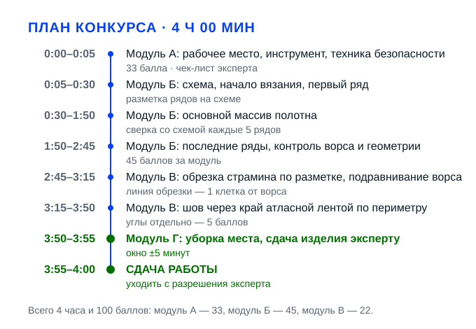
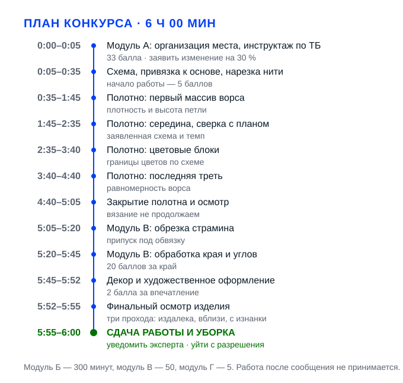

Ковроткачество крючком (Р)
Задания ниже — официальные файлы «Абилимпикс» (источник: abilympics-russia.ru), разложенные по категориям. Решения написаны по тексту задания, регламенту и критериям оценки; в них указано, что именно проверяет эксперт.
Школьник
14–16 лет, базовый уровень заданияВыдержка из официального конкурсного задания: страницы, относящиеся к категории «Школьник» (стр. 5–8, 16–17 источника).
Пошаговое решение
Конкурсное задание категории «Школьники» — связать крючком коврик по выданной схеме орнамента и обработать его край атласной лентой. На всё четыре часа: пять минут на организацию места и технику безопасности, сто шестьдесят на полотно, семьдесят на обработку края и пять на уборку. Сто баллов разложены по четырём модулям очень дробно: тридцать три балла за организацию и безопасность, сорок пять за изготовление ковра и качество ворса, двадцать два за обработку края и общее впечатление. Работаем на страмине — крупной ковровой канве с жёсткими ячейками, — набирая петли крючком по клеткам схемы. Тридцать процентов задания вам разрешено изменить в одну сторону: толщину нити. Рисунок, размер схемы и время менять нельзя. Поэтому самое важное решение принимается в первые минуты: вы сверяете свою нить со схемой, раскладываете цвета по порядку и только потом берёте крючок в руки.

Задача 1. Организовать рабочее место и пройти инструктажМодуль А · 5 минут · 33 балла
Модуль А длится всего пять минут, но стоит тридцать три балла из ста — треть всей оценки. Из них восемнадцать дают за организацию рабочего места шестью отдельными пунктами по три балла: ознакомление с заданием, наличие инструмента, подготовка места, наличие расходного материала, соответствие размера ковровой основы и последующая уборка. Ещё пятнадцать баллов идут за технику безопасности: ножницы, резак и канцелярский нож, а также дополнительное оборудование — по пять баллов за каждую позицию. Это не формальность: эксперт проходит по площадке с чек-листом в самом начале и фиксирует, что лежит на столе, чем вы будете резать и как вы об этом говорите. Пять минут нужно потратить не на поиск крючка, а на то, чтобы разложить всё по местам и убедиться, что основа и материалы соответствуют заданию.
Действие 1.1. Принять задание и проверить комплект
Шаг 1.1.1
Берём в руки выданный пакет с заданием и читаем его целиком, не начиная работу: схему орнамента из Приложения 1, описание последовательности и технологическую карту с указанием основы и толщины нити. Схему разворачиваем полностью, чтобы были видны все четыре края и уголки, и сразу смотрим на количество клеток по ширине и высоте — это и есть размер коврика в клетках страмина. Рядом кладём крючок, которым будете работать, и сверяем его с толщиной нити: крючок не должен быть заметно тоньше нити, иначе петли затягиваются и ворс получается редким и жёстким.
Ознакомление с заданием — отдельный пункт на три балла, и эксперт отмечает его именно в первые минуты, пока вы ещё не начали вязать. Практика важнее: рисунок и размер схемы менять запрещено, изменять можно только толщину нити. Если вы начнёте с середины схемы, не разобравшись, где у неё верх и низ, орнамент ляжет зеркально, и переделать его в оставшиеся сто шестьдесят минут будет уже невозможно.
Схема разложена целиком, вы можете показать пальцем, с какой клетки начинается набор и в каком направлении идут ряды. Крючок лежит рядом с нитью, и бородка крючка не «проваливается» между нитями, когда вы пробуете захватить имитацию петли. Пересчитайте клетки по краю, где они видны лучше всего.
Самая частая ошибка — просмотреть схему по диагонали: «рисунок простой, разберусь по ходу». На клетчатом орнаменте это приводит к сдвигу на одну клетку, и весь узор уезжает: линии перестают сходиться в углах. Вторая — взять крючок, не соотнося его с толщиной нити: полотно выходит рыхлым, и баллы за равномерность ворса теряются до финиша.
Эксперт подходит в первые две-три минуты и смотрит, развёрнута ли схема, лежит ли она перед участником лицом вверх и может ли участник показать начало вязания. Отсутствие этого пункта — минус три балла, причём без возможности добрать их позже.
Шаг 1.1.2
Проверяем наличие и исправность инструмента: крючок для коврового плетения, ножницы с острыми концами для обрезки нити и страмина, игла с широким ушком для атласной ленты, при необходимости резак или канцелярский нож для подравнивания основы. Крючок осматриваем на свет: головка и бородка целые, без заусенцев, ручка не шатается. Свой крючок привозить разрешено — берите тот, к которому привыкла рука, а участникам с ДЦП разрешено использовать специальную подставку под инструмент.
Проверка наличия инструмента — три балла, но смысл глубже: крючок с заусенцем рвёт нить на каждом третьем ряду, и вы половину времени будете не вязать, а связывать оборванные концы. Игла с узким ушком не пропустит атласную ленту шириной в сантиметр, и модуль В встанет намертво. Всё это проверяется за тридцать секунд до старта, а исправляется после старта только через главного эксперта.
Проведите подушечкой большого пальца по головке крючка — ни зацепки, ни шероховатости быть не должно. Ножницы режут нить в одно движение, не жуют её. Игла свободно пропускает сложенную вдвое ленту. Если на площадке предложен аналог инструмента, сравните его со своим и выберите тот, которым работаете уверенно.
Типичная ошибка — обнаружить, что крючок «не тот», уже на двадцатом ряду, когда менять его поздно: плотность полотна у разных крючков разная, и стык будет виден. Вторая — работать тупыми ножницами: страмин не режется, а рвётся, край получается лохматым, и обработка лентой потом не закроет неровность.
Эксперт пересчитывает инструмент по чек-листу и отдельно смотрит на состояние режущих кромок. Инструмент, лежащий в беспорядке по всему столу, тоже фиксируется — за это снимают в блоке организации.
Шаг 1.1.3
Сверяем размер ковровой основы: берём страмин и считаем клетки по ширине и высоте, сравнивая с числом клеток на схеме. Полотно должно быть больше схемы минимум на две-три клетки с каждой стороны — этот запас пойдёт на подгиб и обработку края. Если выданная основа меньше схемы хотя бы на клетку, останавливаемся и говорим эксперту сразу, а не начинаем вязать «как получится».
Проверка соответствия размера ковровой основы — три балла, и это тот пункт, где ошибка стоит дороже всего: не хватит одной клетки — рисунок не влезет, а рисунок менять и уменьшать схему категорически запрещено. Припуск по краю — не запас «на всякий случай», а технологическая необходимость: в модуле В полотно обрезают, оставляя материал для обработки, и без припуска обрезать будет нечего.
Клетки посчитаны и совпадают со схемой, припуск по периметру не меньше двух клеток. Основу можно положить на схему и посмотреть на просвет: линии орнамента должны укладываться в клетки без сдвига на полклетки. Если страмин перекошен, это видно по углам — они не прямые.
Ошибка — начать вязать с самого края основы, без припуска: к модулю В обрабатывать край будет нечем, придётся обвязывать вплотную к ворсу, и лента ляжет криво. Вторая — молча начать на основе меньшего размера, надеясь «дотянуть» рисунок: уменьшать схему нельзя, поэтому работу просто не примут по размеру.
Эксперт проверяет основу до старта вместе с инструментом, и ему важно услышать, что участник сам посчитал клетки. Молчаливое принятие неподходящей основы он отмечает как нарушение организации.
Действие 1.2. Проверить материалы и разложить их по цветам
Шаг 1.2.1
Выкладываем все мотки на стол и сверяем с цветовой гаммой схемы: каждому условному обозначению на схеме должен соответствовать свой моток. Считаем количество цветов и называем их вслух — так вы запоминаете обозначения быстрее, чем при чтении про себя. Нити заранее в полном объёме нарезать нельзя, это прямо запрещено, поэтому мотки остаются мотками.
Проверка наличия расходного материала — три балла. Но главное — соответствие цветов: в критериях модуля Б отдельным пунктом на пять баллов стоит «смена цвета нити соответствует схеме». Если два оттенка близки и вы перепутаете их на середине полотна, работа будет выглядеть как ошибка в рисунке, а распускать связанный ворс почти невозможно.
Число мотков совпадает с числом обозначений на схеме, и для каждого цвета вы можете показать, в каких участках орнамента он используется. Разложите мотки в том порядке, в котором цвета впервые встречаются на схеме, — это ваш будущий порядок работы.
Частая ошибка — разложить нити «как удобно» и на первом же переходе цвета искать нужный оттенок по всему столу, теряя минуты и путая соседние мотки. Вторая — обнаружить нехватку цвета в середине работы: после старта материалы не добавляют, и придётся либо менять оттенок, либо оставлять пустые клетки.
Эксперт проходит и смотрит, разложены ли нити по цветам и совпадает ли их число со схемой. Это визуальная проверка на несколько секунд, и она прямо влияет на три балла за расходный материал.
Шаг 1.2.2
Проверяем нить на ощупь и на разрыв: она должна быть ровной, без утолщений и узлов, одинаковой толщины по всей длине. Отрезаем от каждого мотка по небольшому отрезку и пробуем скрутить его в петлю — нить не должна распадаться на отдельные волокна. Если нить рыхлая и ворсистая, петли будут цепляться друг за друга, и ворс ляжет неопрятно. Отрезки проверяем на свет: утолщения видны как тёмные штрихи на ровной нити.
Толщина нити — единственное, что разрешено менять на тридцать процентов, но менять её нужно осознанно: более толстая нить даёт высокий и плотный ворс, но её нужно меньше по длине, тонкая — наоборот. От качества нити напрямую зависят двадцать пять баллов за качество: равномерность ворса, расположение узелков и вид лицевой стороны. Узел или утолщение в нити вылезет именно на лицевой стороне ковра.
Все отрезки одинаковой толщины на глаз и на ощупь, узлов нет, нить не рвётся от умеренного натяжения. Проверьте моток по всей длине, а не только снаружи: дефект часто спрятан внутри, и его видно, если размотать два-три витка.
Ошибка — работать нитью, которая рвётся: каждая оборванная петля даёт торчащий кончик, который потом надо прятать, а на изнанке остаётся узел. Вторая — смешать в одном цвете нити из разных партий, отличающихся оттенком: на полотне это читается как полоса.
Эксперт смотрит на нить в руках участника и на первые связанные ряды: ровная ли толщина, нет ли «лохматости». Этот пункт он оценивает вместе с качеством ворса.
Шаг 1.2.3
Готовим атласную ленту для модуля В заранее: отмеряем длину, равную периметру коврика с запасом примерно по десять сантиметров на угол и на закрепление концов, и откладываем её отдельно, не смешивая с нитями. Ленту не режем на короткие куски: шов через край идёт одной непрерывной полосой по всему периметру, и лишние стыки на краю будут видны. Ленту держим в отдельном пакете, чтобы она не путалась с мотками.
В модуле В за обработку края дают двадцать баллов из двадцати двух, и почти все они зависят от того, как подготовлена лента. Короткие куски придётся сшивать или склеивать, а место стыка на атласе видно сразу. Запас в десять сантиметров на угол нужен потому, что именно на углу лента идёт по двум сторонам и требует дополнительной длины.
Длина ленты не меньше периметра плюс сорок сантиметров, лента лежит отдельно, не перекручена и не смята. Сложите её вдвое и посмотрите на срез: он должен быть ровным, иначе кончик будет осыпаться при вдевании в иглу.
Ошибка — отрезать ленту «примерно по длине стороны» и потом обнаружить, что на углах её не хватает. Вторая — держать ленту в общем мотке нитей: её конец путается, тянется за работой и вытягивает петли.
Эксперт обращает внимание на подготовку материалов в модуле А и возвращается к этому в модуле В: если участник в спешке режет ленту на куски, на краю появляются стыки.
Действие 1.3. Организовать рабочую зону и пройти инструктаж
Шаг 1.3.1
Расставляем на столе три зоны: слева — материалы (мотки по цветам и лента), по центру — страмин с развёрнутой схемой, справа — инструмент (крючок, ножницы, игла, резак). Схему ставим так, чтобы её не надо было поворачивать во время работы, а рабочую клетку страмина держим на уровне груди, а не на весу. Стул пододвигаем так, чтобы спина была прямой, а предплечья лежали на столе.
Подготовка рабочего места — три балла, и это единственный пункт модуля А, который эксперт проверяет дважды: в начале и в конце. Практический смысл в скорости: на 160 минут работы приходится несколько сотен движений крючком, и каждый лишний поворот корпуса за мотком или за схемой отнимает силы. При нарушении осанки к третьему часу начинает болеть шея, темп падает, а время изготовления изделия — отдельный критерий на пять баллов.
Все три зоны на месте, ничего не лежит на полу и на краю стола, схема видна целиком и не закрыта мотками. Проверьте, дотягиваетесь ли вы до каждого мотка не вставая: если приходится тянуться, переставьте.
Ошибка — сложить всё в одну кучу «потом разберу»: крючок уходит под полотно, ножницы падают, схема закрыта. Вторая — поставить схему сбоку и постоянно поворачивать голову: через час это даёт заметную усталость и ошибки в счёте клеток.
Эксперт фиксирует организацию места по чек-листу в начале модуля и смотрит, сохраняется ли порядок в процессе. Беспорядок на столе он отмечает и в конце, при оценке уборки.
Шаг 1.3.2
Слушаем инструктаж по технике безопасности и запоминаем три правила, которые касаются именно нашей работы: ножницы передаём только с сомкнутыми лезвиями и кольцами вперёд, во время перерыва кладём их на стол с сомкнутыми лезвиями, канцелярским ножом или резаком работаем только на столе и только «от себя». Крючок держим так, чтобы бородка была направлена в полотно, а не в ладонь.
Соблюдение техники безопасности — пятнадцать баллов: пять за ножницы, пять за резак и канцелярский нож, пять за использование дополнительного оборудования. Это измеримый критерий, то есть эксперт не «оценивает впечатление», а фиксирует конкретное нарушение. Инструменты и материалы нельзя брать в рот, нити и обрезки нельзя разбрасывать — всё это прямые пункты инструкции по охране труда.
Вы можете своими словами повторить три правила и показать, как передаёте ножницы. Резак лежит закрытым, лезвие не выдвинуто, ножницы — сомкнуты. Крючок не лежит на краю стола, откуда падает. Проверьте и то, что крючок не лежит на краю стола, откуда падает.
Типичное нарушение — работать с открытым лезвием резака, отложив колпачок в сторону: это фиксируется сразу и стоит пять баллов. Второе — передать ножницы лезвиями вперёд или оставить их раскрытыми на столе между рядами.
Эксперт наблюдает за работой с режущими инструментами весь конкурс, а не только на инструктаже. Нарушение фиксируется в момент, когда оно произошло, и объяснение «я нечаянно» не возвращает баллы.
Шаг 1.3.3
Кладём рядом контейнер для обрезков — стакан или небольшую коробку, — и отправляем туда первый же обрезок нити. Мусорное ведро для страмина и бумаги ставим так, чтобы до него можно было дотянуться, не вставая с места. Всё лишнее со стола убираем сразу: пустые упаковки, бумагу от мотков, чехлы от инструмента. Рядом с контейнером держим небольшой лоскут ткани, чтобы стирать крошку со стола по ходу работы.
Чистое рабочее место — не только эстетика: уборка рабочего места входит в модуль А отдельным пунктом на три балла и повторяется в модуле Г. Обрезки нити, попавшие в полотно, потом невозможно вынуть, не повредив ворс, а мелкий обрезок под крючком сбивает петлю. Контейнер под рукой — это способ не отвлекаться на каждую обрезку.
Контейнер стоит в пределах вытянутой руки, в нём уже лежит первый обрезок. На столе нет ничего, что не участвует в работе. Проверьте зону под полотном: там не должно быть крошки от страмина. Крышка контейнера открыта, чтобы обрезок не приходилось запихивать внутрь.
Ошибка — бросать обрезки на стол «в кучку»: они разлетаются, прилипают к нити и попадают в ворс. Вторая — ставить ведро в стороне, чтобы не мешало: тогда обрезки копятся на столе весь модуль. И третье: обрезки, попавшие под полотно, потом не выбрать, не задев ворс.
Эксперт дважды оценивает чистоту места — в начале и в конце. Разбросанные обрезки он отмечает как нарушение организации даже при хорошем полотне. Порядок на столе он сверяет с первым обходом и сравнивает два состояния.
Задача 2. Связать ковровое полотно по схемеМодуль Б · 160 минут · 45 баллов
Модуль Б — сто шестьдесят минут на полотно и сорок пять баллов, самая большая часть работы. Двадцать баллов дают за изготовление: начало работы, поэтапное выполнение, соответствие смены цвета схеме и выполнение изделия. Двадцать пять — за качество: равномерность ворса, расположение узелков, лицевую сторону, правильное заполнение полотна и время изготовления, по пять баллов за каждый пункт. Технология одна и та же на всей площади: петля в клетку, узел на изнанку, ворс одной высоты. Отличается только цвет, и именно на переходах цвета теряется больше всего баллов. Поэтому работаем не «ряд за рядом по вдохновению», а по схеме, с разметкой и сверкой каждые пять рядов.
Действие 2.1. Прочитать схему и определить начало вязания
Шаг 2.1.1
Раскладываем схему орнамента так, чтобы она лежала прямо перед вами и верх схемы совпадал с верхом коврика. Находим на ней первую клетку набора: обычно это нижний левый угол рисунка, но ориентируйтесь на указание в описании задания, а не на привычку. Отмечаем для себя ряды: нумеруем их карандашом на полях схемы через каждые десять клеток, чтобы не сбиваться на длинных участках одного цвета.
Определение начала вязания — первый пункт критериев модуля Б, «начало работы», пять баллов. Набирать петли с середины или с произвольного угла нельзя: ковёр вяжется рядами от края к краю, и если начать не там, клетки разъедутся, а орнамент потеряет симметрию. Разметка полей схемы — это ваш счётчик: на однотонном участке длиной сорок клеток глаз перестаёт замечать промах.
Вы можете показать пальцем первую клетку набора и назвать её координаты — например, третья клетка снизу и вторая слева. Поля схемы размечены через десять клеток, и на них есть номера. Глядя на схему, вы понимаете, где заканчивается первый ряд.
Ошибка — начать с угла, который просто удобнее руке. Полотно развернётся относительно схемы, и каждая клетка встанет на соседнюю: рисунок сместится на одну клетку, что на мелком орнаменте полностью его разрушает. Вторая ошибка — не размечать ряды и сбиваться на длинных однотонных участках, теряя по десять-пятнадцать минут на пересчёт.
Эксперт подходит в начале модуля Б и просит показать начало вязания. Это пять баллов, и они достаются тем, кто может объяснить свой выбор клетки, а не тем, кто начал «с любого места».
Шаг 2.1.2
Определяем соответствие клетки страмина и петли: одна клетка основы — одна петля ворса. Проверяем это на сухом полотне: продеваем крючок в клетку и смотрим, свободно ли он проходит между нитями основы, не расщепляя их. Если крючок рвёт нити страмина, он слишком толстый для этой основы, и надо взять другой. Проверяем на трёх-четырёх клетках в разных местах основы, а не только там, где удобно руке.
Соотношение «одна клетка — одна петля» задаёт плотность полотна, а плотность — это критерии «равномерность ворса» и «правильное заполнение коврового полотна», по пять баллов каждый. Если в клетку пролезет две петли, ворс в этом месте вспухнет, а соседние клетки останутся пустыми; если петли ставить через клетку, полотно будет просвечивать, и работа не закроет основу.
Крючок проходит в клетку с небольшим усилием, но без хруста и без раздвигания нитей основы. На просвет видно, что нити страмина целые. Проверьте три-четыре клетки в разных местах основы: страмин иногда имеет неровности по краю.
Ошибка — ставить петли гуще, «чтобы ворс был пышнее»: полотно перекашивается, и клетки уходят из квадрата. Вторая — вязать через клетку на скорость: к концу модуля видно просветы основы, и баллы за заполнение теряются целиком.
Эксперт проверяет соответствие петли клетке в первые десять минут и потом ещё раз в середине полотна, когда уже видна манера работы. При этом он смотрит, не расщепляются ли нити основы под крючком.
Шаг 2.1.3
Считаем норму: умножаем число клеток по ширине на число клеток по высоте и получаем количество петель в коврике. Прикидываем темп — сто шестьдесят минут на всё полотно, значит на каждые десять петель должно уходить не больше определённого времени. Проще считать рядами: если в коврике, например, шестьдесят рядов, то ряд должен занимать в среднем не больше двух с половиной минут.
Время изготовления изделия — отдельный критерий на пять баллов, и он входит в двадцать пять баллов за качество. Без расчёта темпа участники либо гонят в начале и бросают работу в конце, либо наоборот слишком долго выписывают первый угол и потом не успевают закрыть полотно. Расчёт занимает минуту, а спасает полчаса.
У вас есть конкретная цифра: ряд в среднем столько-то минут. Через полчаса работы посмотрите на часы и на число связанных рядов — отклонение больше чем на треть означает, что темп надо менять. Если рядов связано меньше расчётного, темп надо поднимать сразу, а не в конце модуля.
Ошибка — «сначала свяжу аккуратно, потом ускорюсь»: на ковровой технике ускорение почти не даёт прироста, а качество падает мгновенно. Вторая — не смотреть на часы до самого конца модуля, когда исправлять уже нечего.
Эксперт фиксирует время окончания полотна и сравнивает его с отведёнными ста шестьюдесятью минутами. Незаконченное полотно — прямой минус пять баллов и потеря баллов за заполнение.
Действие 2.2. Подготовить нить и набрать первые петли
Шаг 2.2.1
Нарезаем нить первого цвета на отрезки одной длины: длина отрезка равна удвоенной высоте ворса плюс два сантиметра на узел. Если высота ворса по заданию десять миллиметров, отрезок — около двадцати двух сантиметров. Режем партиями по десять-пятнадцать штук, складываем их ровной стопкой и держим стопку рядом с собой, чтобы не искать каждый отрезок отдельно.
Ровная длина отрезка — это и есть равномерность ворса, пять баллов из двадцати пяти за качество. Разница в сантиметр уже видна на лицевой стороне как «рябь». Резать партиями, а не по одному, — вопрос темпа: на коврик уходят сотни отрезков, и каждый лишний замах ножницами съедает минуты.
Возьмите пять отрезков из стопки и положите рядом: концы должны совпадать с точностью до нескольких миллиметров. Проверьте одну петлю в полотне: её высота равна заданной, а не «на глаз больше». Если сомневаетесь в высоте, положите рядом линейку и сверьтесь по ней.
Ошибка — резать «по памяти», без ориентира: уже через двадцать отрезков длина уплывает на сантиметр. Вторая — резать сразу на весь ковёр: вы не знаете, сколько уйдёт на цвет, а лишние отрезки придётся выбрасывать, потому что готовые нити приносить на площадку нельзя.
Эксперт смотрит на стопку нарезанных отрезков и на первые петли: одинаковы ли они по высоте. Ровная стопка — лучший аргумент в споре за баллы. Он также смотрит, лежат ли нарезанные отрезки стопкой, а не россыпью по столу.
Шаг 2.2.2
Берём крючок в ведущую руку так, чтобы бородка смотрела на вас, а ручка лежала в ладони без напряжения: как карандаш при письме, но чуть свободнее. Основу держим второй рукой за край, не сжимая: страмин должен лежать ровно, но не быть натянутым как барабан. Пробуем сделать два-три холостых движения в воздухе, чтобы рука привыкла к амплитуде. Плечи при этом не подняты, локоть лежит на столе и не висит в воздухе.
Хват крючка определяет, сколько вы выдержите: при зажатой руке уже через сорок минут начинаются судороги в пальцах и темп падает вдвое. Натянутая основа даёт перекос клеток, а слабая — «гуляющие» петли разной высоты. Правильный хват — это не эстетика, а рабочий ресурс на все сто шестьдесят минут.
Рука не устаёт после первых десяти петель, крючок не вращается в ладони. Клетки основы под рукой остаются квадратными, а не вытягиваются. Проверьте натяжение: если под пальцами основа прогибается на сантиметр, держите крепче, но не тяните.
Ошибка — держать крючок в кулаке, как молоток: точность теряется, петли выходят разного размера. Вторая — натягивать страмин до состояния струны: клетки сужаются, и петля входит с усилием, рвя нити основы.
Эксперт смотрит на постановку руки в первые минуты: у опытных участников движения экономные, без лишних разворотов кисти. Отдельно он отмечает, не приходится ли участнику перехватывать крючок каждые десять петель: перехват — верный признак неверного хвата.
Шаг 2.2.3
Закрепляем первую петлю: складываем отрезок пополам, вводим крючок в первую клетку набора с лицевой стороны, захватываем сгиб и протягиваем его на изнанку, после чего продеваем в полученную петлю оба свободных конца и затягиваем. Затягиваем до упора, но не до деформации клетки — узел должен обхватить нить основы, а не сжать её. Концы обрезаем позже, когда полотно будет закрыто: спешить с ножницами у первого же узла не стоит.
Начало работы — пять баллов, и первая петля задаёт всю геометрию: если она затянута слабо, край полотна пойдёт волной, а если слишком сильно — стянет клетку, и первый ряд окажется короче остальных. Затянутый узел держит ворс без клея и дополнительных креплений, поэтому распуститься такое полотно не может.
Первая петля стоит вертикально, её высота равна заданной, клетка основы не сужена. Потяните за оба конца отрезка: узел не должен ползти. Посмотрите на изнанку — там должны быть два ровных конца, а не комок.
Ошибка — завязать обычный узел «на память», как на нитке: он не фиксирует петлю к основе и после первой стирки или даже после обрезки края ворс вылезает. Вторая — затянуть так, что клетка сжалась: первый ряд получается на две-три петли короче, и край идёт дугой.
Эксперт проверяет первую петлю сразу после её постановки: это самый быстрый способ понять, владеет ли участник техникой. Именно здесь видно, набор это или случайное вдевание нити.
Шаг 2.2.4
Доводим первый ряд до конца, ставя петли строго по одной в каждую клетку и не пропуская ни одной. Ведём ряд слева направо, если так удобнее руке, но не меняем направление на середине. Через каждые десять петель останавливаемся на секунду и смотрим на ряд целиком: он должен быть ровным по высоте и плотности. Пропущенную клетку видно сразу, если вести ряд по одному движению на клетку и не перескакивать.
Первый ряд — образец, по которому вы будете вязать остальные сто шестьдесят минут. Ровный первый ряд задаёт ритм и плотность: к нему подстраивается рука, и дальше ошибки почти не возникают. Пропущенная в первом ряду клетка даёт дырку в самом видном месте — по краю коврика, и закрыть её потом нечем.
Ряд закончен по всей ширине, число петель совпадает с числом клеток, высота ворса одинаковая. Проведите ладонью по ряду: он не должен быть «пилой». С изнанки видны ровные затянутые узелки в каждой клетке.
Ошибка — в спешке пропустить клетку и «заметить» это через пять рядов: вставить петлю в уже обойдённое место технически возможно, но она будет стоять криво, а стяжка испортит соседние. Вторая — начать ряд с другого края, сбив рисунок.
Эксперт смотрит первый ряд целиком и отмечает, совпадает ли он со схемой по количеству петель. Дальше он возвращается к этому ряду при оценке лицевой стороны.
Действие 2.3. Вести основной массив полотна
Шаг 2.3.1
Вяжем ряд за рядом, ставя петли в каждую клетку по направлению ряда, и после каждых пяти рядов сверяемся со схемой — не по памяти, а глазами по рисунку. Держим полотно так, чтобы рабочий ряд всегда был перед вами, а связанная часть лежала на столе и не тянула край. Если полотно большое, скатываем связанную часть в рулон и закрепляем его, чтобы не мешал.
Поэтапное выполнение изделия — пять баллов, и это именно про последовательность и контроль, а не про скорость. Сверка через каждые пять рядов стоит пятнадцать секунд, а найденная на двадцатом ряду ошибка стоит распускания всего участка: ковровый ворс распускать почти нельзя, петли деформируются и теряют вид.
Число связанных рядов совпадает с числом, которое вы отметили на схеме. Рисунок читается правильно: линии орнамента идут туда же, куда и на схеме. Полотно лежит ровно, без «лодочки» по краям. Если сверка разошлась, останавливаемся и ищем, с какого ряда пошёл сбой.
Ошибка — вязать «по памяти», глядя на схему только в начале. На орнаменте с ритмичным узором сбой накапливается незаметно и проявляется через десять рядов, когда исправлять уже дорого. Вторая — держать всё полотно на весу: край растягивается, и петли первого ряда вытягиваются.
Эксперт проходит мимо каждые двадцать-тридцать минут и смотрит на темп и на соответствие рисунку. Ему важно увидеть, что участник сверяется со схемой, а не импровизирует.
Шаг 2.3.2
Следим за плотностью: каждая петля затягивается с одинаковым усилием, и после каждого десятка петель проверяем ладонью, нет ли бугров и провалов. Если чувствуете, что рука устала и затяжка ослабла, останавливайтесь на пятнадцать секунд, разминайте кисть и продолжайте — лучше потерять полминуты, чем получить рыхлый участок в середине. Разминаем кисть и предплечье, а не только пальцы: усталость идёт от предплечья.
Равномерность ворса — пять баллов, и это самый заметный глазом критерий: неровный ворс видно за три метра, даже если рисунок безупречен. Плотность затяжки зависит от усталости руки, поэтому контроль плотности — это одновременно и контроль усталости. Практика показывает, что первые сорок минут затяжка стабильная, потом начинает слабеть.
Проведите ладонью по связанному участку в двух направлениях: поверхность должна быть одинаково ровной под рукой. Сравните высоту ворса в начале и в конце участка — они должны совпадать. На изнанке узелки стоят одинаково плотно.
Ошибка — «дотянуть ряд любой ценой» на уставшей руке: затяжка слабеет постепенно, и переход виден полосой. Вторая — наоборот, затягивать изо всех сил, деформируя клетки основы: полотно стягивается к центру и перестаёт быть прямоугольным.
Эксперт оценивает равномерность ворса по всей площади, а не по фрагменту, и делает это на расстоянии вытянутой руки. Полосы разной плотности он отмечает отдельно.
Шаг 2.3.3
Работаем с лицевой стороной как с главной: узелки и концы нитей прячем на изнанку сразу, не оставляя их торчать на лице. Если кончик всё же вышел на лицевую сторону, вытягиваем его крючком на изнанку в тот же момент, а не «потом подрежу». Подрезать торчащий кончик на лице нельзя — останется пенёк, который видно. Крючком это делается быстрее всего: поддеваем кончик с лица и вытягиваем на изнанку между нитями основы.
Лицевая сторона — пять баллов, и это то, что эксперт видит первым, когда работа сдана. Кончики, торчащие между петлями, читаются как небрежность и снимают балл за общее впечатление. Убирать их сразу проще: через двадцать рядов вы уже не найдёте, откуда торчит нить.
На лицевой стороне нет торчащих концов, нет «пеньков», поверхность однородная. Посмотрите на полотно под углом к свету: так видны все мелкие дефекты, которые не заметны сверху. Изнанка при этом может быть неидеальной, но узелки должны быть затянуты.
Ошибка — обрезать кончик на лице «под корень»: остаётся жёсткий пенёк, который цепляется и вылезает. Вторая — оставлять все концы на потом: к концу модуля их десятки, и прятать их придётся в спешке, портя соседние петли.
Эксперт осматривает лицевую сторону при сдаче работы, поворачивая коврик к свету. Торчащие концы он отмечает как дефект качества, а не как мелочь. Он также проверяет, нет ли на лице вмятин от неаккуратно подтянутых петель.
Шаг 2.3.4
Держим темп по часам: каждые двадцать минут смотрим на время и на число связанных рядов, сравнивая с расчётом из начала модуля. Если отстаём больше чем на треть, упрощаем не рисунок, а лишние движения: не переворачиваем полотно без нужды, не поправляем каждую петлю дважды, не отвлекаемся на разговоры. Если идём с опережением, не ускоряемся дальше — лучше потратить запас на аккуратность.
Время изготовления изделия — пять баллов, и это критерий, который нельзя добрать позже: он фиксируется по факту окончания полотна. Кроме того, от темпа зависит, останется ли время на модуль В, а обработка края стоит двадцать два балла — больше, чем любая отдельная ошибка в полотне.
Через час работы связано не меньше трети рядов. Часы лежат на виду, а не в кармане. Вы можете назвать, сколько рядов осталось и сколько минут на них нужно. Если к середине времени связано меньше половины рядов, немедленно сокращайте лишние движения, а не увеличивайте скорость.
Ошибка — обнаружить за полчаса до конца модуля, что связано две трети: полотно остаётся незаконченным, и работа теряет баллы сразу по трём пунктам. Вторая — гнать в ущерб затяжке, чтобы успеть: рыхлый участок виден и оценивается ниже, чем небольшой пропуск.
Эксперт фиксирует время, когда участник закрыл последний ряд, и сравнивает с регламентом. Он также смотрит, остаётся ли у участника время на обработку края.
Действие 2.4. Менять цвет строго по схеме
Шаг 2.4.1
Перед сменой цвета доходим до последней петли предыдущего цвета и заканчиваем её полностью, не оставляя недотянутой. Новый цвет начинаем с первой клетки следующего участка, ставя петлю тем же способом, что и все остальные, — никаких переходных «полупетель». Кончик старого цвета уводим на изнанку и закрепляем под соседним узелком. Первую петлю нового цвета ставим в ту клетку, которая помечена на схеме этим цветом.
Смена цвета нити соответствует схеме — пять баллов, и это критерий, который проверяют по каждому переходу. Недотянутая петля на стыке даёт «ступеньку» на границе цветов, и граница перестаёт быть ровной линией. Закреплённый кончик не даст краю участка разъехаться при обрезке полотна в модуле В.
Граница между цветами идёт ровно по линии клеток, без ступенек и без «протаскивания» цвета на соседнюю клетку. Кончики не торчат. Сверьте границу со схемой: она должна идти по тем же клеткам. Посмотрите на границу с изнанки: там не должно быть длинных протяжек между цветами.
Ошибка — оставить кончик старого цвета свободно висящим на изнанке: при обрезке края он выскользнет, и участок распустится. Вторая — начать новый цвет, не довязав петлю, из-за чего на стыке появляется петля промежуточной высоты.
Эксперт проверяет каждый переход цвета, а не только общий вид: в критериях это отдельный пункт на пять баллов, и он измеримый — то есть фиксируется по факту.
Шаг 2.4.2
Раскладываем мотки в том порядке, в котором цвета идут по схеме, и при смене не ищем нужный оттенок, а берём следующий по порядку. Отрезки нарезаем заранее, перед участком цвета: посчитали клетки участка, нарезали столько же отрезков плюс два-три запасных. Нарезанные отрезки держим отдельной стопкой и не смешиваем с другими цветами. Отрезки раскладываем веером, чтобы брать по одному, не пересчитывая стопку.
Смена цвета — самая частая точка потери времени: поиск мотка и нарезка «по ходу» съедают по минуте на переход, а переходов в орнаменте десятки. Плюс смешанные стопки дают ошибки цвета, а «смена цвета соответствует схеме» — пять баллов. Запасные отрезки нужны на случай брака: один отрезок иногда рвётся или уходит в узел.
Перед участком цвета у вас готова стопка отрезков нужного цвета и нужного количества. Отрезков не меньше, чем клеток в участке. Соседние цвета лежат раздельно и не соприкасаются. Если отрезков осталось меньше, чем клеток в участке, дорежьте сейчас, а не посреди ряда.
Ошибка — нарезать на глаз «штук двадцать» и не досчитать: посреди участка приходится останавливаться и резать ещё, теряя ритм. Вторая — держать два близких оттенка в одной стопке и путать их на границе.
Эксперт смотрит не только на результат, но и на организацию: разложенные по порядку цвета он отмечает как признак владения технологией. Мотки, лежащие в общей куче, он отмечает как слабую организацию работы.
Шаг 2.4.3
Ведём счёт клеток внутри цветного участка вслух или про себя по схеме и отмечаем на схеме пройденные клетки карандашом — точкой или галочкой. На участках длиной больше десяти клеток ставим промежуточные отметки через пять. Если сбились, возвращаемся к последней отметке, а не пересчитываем весь ряд с начала. Отметку ставим точкой в углу клетки, чтобы она не закрывала цвет на схеме.
Точность границ — это и «расположение узелков» (пять баллов), и соответствие рисунку. На глазок однотонный участок в двадцать клеток почти всегда вяжется на одну-две клетки длиннее или короче, и тогда весь следующий ряд сдвигается. Отметки на схеме стоят секунды, а спасают целый участок.
Число петель в участке совпадает с числом клеток на схеме. Отметки на схеме идут ровно и не «убежали» относительно рисунка. В конце ряда вы попадаете в ту клетку, которая предсказана схемой. Если последняя клетка ряда не совпала со схемой, ищите ошибку в предыдущем ряду.
Ошибка — считать «на глаз», полагаясь на ритм: ошибка проявляется через два-три ряда, когда граница цвета уже ушла в сторону. Вторая — стирать и перерисовывать отметки, теряя нить рассуждения. Третья ошибка — вести счёт по памяти сразу в двух местах, для цвета и для ряда.
Эксперт проверяет симметрию орнамента: если рисунок симметричный, он сравнивает левую и правую половины и видит сдвиг сразу. На ритмичном орнаменте он проверяет повторяемость элементов: одинаковые фигуры должны быть одинакового размера.
Действие 2.5. Закрыть полотно и проверить его перед обработкой края
Шаг 2.5.1
Заканчиваем последний ряд по схеме и закрепляем последнюю петлю так же, как первую: концы уводим на изнанку и затягиваем под соседним узелком, лишнее оставляем — обрежем после обработки края. Проверяем, что все клетки схемы заполнены: проходим по полотну рядами и сравниваем с разметкой на схеме. Если пустая клетка всё же нашлась, петлю ставим в неё сейчас, пока страмин целый и место доступно.
Правильное заполнение коврового полотна — пять баллов, и одна пустая клетка в углу стоит столько же, сколько десять идеальных рядов. Незакреплённая последняя петля распустится при первой же обрезке края, потому что вы будете резать страмин рядом с ней.
Все клетки заняты, пустых нет ни в одном углу и ни по одному краю. Последняя петля держится: потяните за неё — она не ползёт. Число рядов совпадает со схемой. Пройдите по краю полотна по часовой стрелке, считая петли: расхождение с числом клеток сразу покажет пропуск.
Ошибка — оставить последний ряд незакреплённым и сразу взяться за ножницы: край полотна распускается на глазах. Вторая — не проверить углы, где чаще всего остаются пустые клетки из-за сбитого счёта. Третья — закреплять последнюю петлю, не расправив полотно: узел ляжет криво и стянет соседние.
Эксперт осматривает полотно перед модулем В целиком, по краям и углам. Пустые клетки он фиксирует как незаполненное полотно. Он сравнивает полотно со схемой по краям и углам, где пропуск заметнее всего.
Шаг 2.5.2
Кладём полотно на стол лицевой стороной вверх и осматриваем его как чужую работу: с расстояния вытянутой руки, потом под углом к свету. Ищем полосы разной плотности, торчащие концы, перекос краёв, пятна. Найденное сразу исправляем, пока страмин ещё не обрезан и можно подобраться к любому месту. Осмотр ведём при ровном белом свете: тёплая лампа скрывает разницу оттенков нити.
Это последний момент, когда исправления дешёвые: после обрезки страмина вы уже не сможете подтянуть узел с изнанки у самого края, не повредив ленту. Качество — двадцать пять баллов из сорока пяти за модуль, и оно оценивается по всей площади. Пятна от рук тоже видны на светлой нити.
Полотно ровное по всей площади, края прямые, лицевая сторона однородная. Пятен нет, посторонних ворсинок нет. Если пришлось что-то исправить, проверьте это место ещё раз через минуту — на свежий глаз.
Ошибка — пропустить осмотр и начать обрезать: дефект обнаруживается на уже обрезанном полотне, когда исправить его нельзя. Вторая — смотреть на работу вплотную, уткнувшись носом: на таком расстоянии не видно ни перекосов, ни полос.
Эксперт осматривает полотно так же — с расстояния и под углом. Он отмечает то, что видно без увеличения. Если участник сам показывает найденные и исправленные места, это работает в его пользу: видно, что контроль есть.
Шаг 2.5.3
Проверяем геометрию: измеряем ширину и высоту полотна по ворсу в трёх местах каждую сторону и сравниваем между собой. Разница больше одной-двух клеток означает перекос, и его надо назвать себе честно. Если перекос небольшой, при обрезке страмина его можно частично выровнять, забрав лишнее с широкой стороны. Измеряем не по краю страмина, который мог вытянуться, а по крайним петлям ворса.
Прямоугольность полотна влияет на обработку края: кособокий коврик невозможно обработать лентой ровно — на одной стороне лента ляжет свободно, на другой натянется. Это видно и в критерии «эстетическое восприятие от работы» на два балла, и в общем впечатлении.
Разница между сторонами не больше одной клетки. Противоположные стороны равны между собой. Полотно лежит на столе без волн и без «пропеллера» по углам. Запишите три замера на бумаге или прямо на схеме: с цифрами перекос обсуждать проще, чем «на глаз».
Ошибка — не мерить и надеяться, что «на глаз ровно»: перекос в три клетки виден сразу, и он уже неисправим. Вторая — пытаться растянуть полотно руками: страмин не тянется, а вот узелки от натяжения ослабнут.
Эксперт измеряет изделие по факту, а не оценивает на глаз, — в критериях есть прямые размерные пункты. Он также смотрит, не растянуто ли полотно по одной стороне: растянутый край потом не ляжет ровно под ленту.
Шаг 2.5.4
Отмечаем мелком или контрастной ниткой линию обрезки по периметру: отступив от крайнего ряда ворса одну клетку. Проходим по всему периметру и проверяем, что отметка идёт ровно и на равном расстоянии от ворса на всех четырёх сторонах. Только после этого берём ножницы. Разметку ведём от угла к углу по одной стороне, а не по кругу, иначе на четвёртой стороне обязательно набежит сдвиг в полклетки.
Линия обрезки — это то, что определит качество края в модуле В: обрезка страмина оценивается отдельно пятью баллами. Обрезать «по глазку» без разметки нельзя: с одной стороны останется две клетки, с другой — половина, и лента ляжет с разной толщиной канвы под ней. Одна клетка — это технический минимум, чтобы было за что зацепить иглу.
Отметка идёт по всему периметру без разрывов, расстояние до крайнего ворса одинаковое. Проверьте углы: там отметка должна образовывать ровный прямой угол, а не срезать его. Проверьте, что отметка не задевает ворс: она должна идти по пустой клетке канвы.
Ошибка — резать без разметки, ориентируясь по ворсу: ворс стоит не по идеальной линии, и край получается волнистым. Вторая — оставить слишком большой припуск в две-три клетки: потом его придётся срезать, а обрезка по уже обработанному краю невозможна.
Эксперт смотрит на линию обрезки в начале модуля В. Ровная размеченная линия — признак того, что участник понимает технологию, а не просто режет. Он обращает внимание и на то, чем сделана разметка: мел по светлой канве виден, а карандаш на тёмной нет.
Задача 3. Обработать край атласной лентойМодуль В · 70 минут · 22 балла
Модуль В — семьдесят минут на то, чтобы ковровое полотно стало изделием. Здесь двадцать два балла: двадцать за качество обработки края четырьмя пунктами по пять — обрезка страмина, ворс, обработка стороны изделия и обработка угла, — и два балла за эстетическое восприятие работы. По школьной категории край обрабатывается атласной лентой швом через край, лента идёт одной непрерывной полосой по всему периметру. Это самый «видимый» модуль: эксперты подходят близко и смотрят на край в упор, потому что именно по краю видно, аккуратна ли работа в целом. Семьдесят минут — достаточно, но только если лента подготовлена заранее, а обрезка сделана по размеченной линии, а не на глаз.
Действие 3.1. Обрезать страмин, оставив припуск
Шаг 3.1.1
Берём ножницы с острыми концами и режем страмин по размеченной линии, а не по ворсу. Полотно не сдвигаем со стола и не поднимаем на весу: режем на плоскости, ведя ножницы от себя длинными движениями. Одну сторону проходим целиком, затем проверяем линию и только потом переходим к следующей. Резать по одной клетке, «откусывая» мелкими движениями, нельзя — край получится рваным.
Обрезка страмина — пять баллов из двадцати за качество края. Ровная линия обрезки задаёт, насколько ровно ляжет лента: любая волна на канве не скроется, а подчеркнётся. Длинные движения ножницами дают прямую линию, короткие «покусывания» — пилу. Резать на весу опасно ещё и потому, что страмин жёсткий и ножницы могут соскользнуть.
Линия обрезки совпадает с отметкой по всей длине, отклонение не больше половины клетки. Край не осыпается бахромой, нити основы не выдернуты. Положите полотно на стол и посмотрите вдоль края одним глазом — волна видна сразу.
Ошибка — резать на весу или от себя под углом, «чтобы удобнее»: край уходит в сторону на сантиметр и больше. Вторая — обрезать слишком близко к ворсу, оставив полклетки: игле не за что будет зацепиться, и лента ляжет по самому краю ворса, местами его задевая.
Эксперт смотрит на обрезанный край до начала шва и отдельно — после, когда видно, насколько лента закрыла канву. Неровная обрезка считается отдельным дефектом, даже если шов аккуратный.
Шаг 3.1.2
Проходим углы отдельно: доходим ножницами до угла, поворачиваем полотно, а не ножницы, и продолжаем по следующей стороне. На самом углу срезаем лишнюю клетку так, чтобы получился аккуратный прямой угол без «ушек» — торчащих уголков канвы. Срез делаем небольшим, буквально по одной нити, потому что лишнее срезать всегда можно, а вернуть нельзя. Ножницы при повороте не отрываем от стола, иначе срез пойдёт по диагонали.
Обработка угла изделия — отдельные пять баллов, и это самый заметный дефект: угол видно всегда, даже на фото. Торчащее «ушко» канвы невозможно закрыть лентой, оно будет вылезать из-под шва. Кроме того, на углу сходятся две стороны, и если припуск срезан криво, шов пойдёт по диагонали.
Все четыре угла прямые, без выступающих уголков канвы. Приложите к углу линейку или угол стола: отклонение видно сразу. Клетки у угла целые, нити основы не выдернуты. С изнанки угол тоже должен быть чистым: там не остаётся обрезанных нитей основы.
Ошибка — срезать угол «на глазок» с большим запасом: потом не хватает канвы под шов, и лента на углу провисает. Вторая — оставить уголок выступать: он виден на лицевой стороне как жёсткий треугольник.
Эксперт осматривает углы первым делом, потому что за них дают отдельные пять баллов и потому что они показательные. Он сравнивает углы между собой: обычно три выходят аккуратно, а четвёртый, последний, подводит.
Шаг 3.1.3
Подравниваем ворс у самого края: если какие-то петли выступают за общую линию или торчат вбок, аккуратно подрезаем их ножницами на одном уровне с остальными. Делаем это до начала шва, потому что после обработки края подлезть к ворсу будет невозможно. Проверяем весь периметр и особенно углы. Ножницы держим параллельно краю, а не под углом к нему: так срез идёт ровной линией, а не лесенкой.
Ворс — отдельный пункт на пять баллов в модуле В, и он оценивается по краю так же строго, как по полю. Торчащая петля у края цепляется за ленту при шитье, тянется и выходит из полотна. Подравнивание до шва — единственная возможность привести край в порядок без риска повредить уже готовую обработку.
Линия ворса вдоль края ровная, высота одинаковая, отдельных торчащих петель нет. Проведите по краю ладонью: не должно быть зацепов. С изнанки у края все узелки затянуты. Сравните высоту ворса у края и в середине поля: они должны быть одинаковыми.
Ошибка — подрезать ворс после обработки края: ножницы задевают ленту, и на атласе остаются затяжки. Вторая — срезать ворс слишком коротко, «под ноль»: получается проплешина, которая видна на лицевой стороне.
Эксперт проверяет ворс по краю и по полю, но у края ему удобнее: там видно и высоту, и плотность, и ровность линии. Отдельно он смотрит на углы ворса: там петли чаще всего расходятся и оставляют просвет.
Действие 3.2. Подготовить атласную ленту и иглу
Шаг 3.2.1
Срезаем кончик ленты наискосок под углом примерно сорок пять градусов, длиной около сантиметра: острый срез легче проходит в ушко иглы и не осыпается так быстро, как прямой. Если лента скользкая, слегка прижимаем срез ногтем, чтобы волокна не распушились. Срез делаем один раз, а не «подравниваем» по ходу шитья. Ножницы должны быть острыми: тупые мнут атлас и вытягивают из него нити.
Срез наискосок — прямая рекомендация из описания последовательности выполнения задания, и это не мелочь: тупой прямой кончик ленты не входит в ушко, начинает махриться, и вы теряете по минуте на каждой попытке. Всего на периметр уходит одна лента, и другого шанса начать красиво не будет — место ввода ленты остаётся видимым.
Срез ровный, под углом, без бахромы. Лента проходит в ушко с первого раза или после одного поворота. Кончик не распустился на нити. Проверьте срез на просвет: он должен быть ровным, без ступеньки, и не длиннее полутора сантиметров, иначе кончик будет гнуться в ушке.
Ошибка — отрезать ленту прямо и пытаться протолкнуть в иглу: край махрится, комкается и не проходит. Вторая — обжечь или подклеить кончик, чтобы не осыпался: на атласе остаётся жёсткая корочка, которая цепляется за канву.
Эксперт видит место ввода ленты на краю: если там бахрома или утолщение, это читается как небрежность и влияет на оценку обработки стороны. Он смотрит и на то, как участник держит иглу: уверенно или под углом, при котором лента рвётся.
Шаг 3.2.2
Вдеваем ленту в иглу с широким ушком и протягиваем на длину около десяти сантиметров, оставляя короткий хвост. Второй конец не завязываем узлом: узел на атласе даёт бугор на краю. Вместо узла оставляем хвост длиной пять-семь сантиметров, который потом спрячем в полотно. Проверяем, что лента не перекручена по всей длине. Если ушко узкое, ленту складываем пополам и вдеваем сгибом.
Узел на конце ленты — самая частая причина брака: он не проходит сквозь канву, тянет нити и оставляет на краю жёсткий комок, который видно с лицевой стороны. Хвост, закреплённый в полотне, держит так же надёжно и не портит вид. Перекрученная лента даёт неровную, «кручёную» поверхность шва, а атлас должен лежать глянцевой стороной вверх.
Лента лежит плоско, без перекрута на всей длине от клубка до иглы. Хвост выпущен и не завязан. Потяните за иглу — лента идёт свободно, без рывков. Возьмите ленту у самого ушка и посмотрите вдоль: перекрут виден как узкая полоса с матовой стороны.
Ошибка — завязать узел «чтобы держалось»: бугор на краю и затяжка канвы. Вторая — вдеть ленту, не проверив перекрут: через двадцать сантиметров шва видно, что лента идёт изнанкой вверх. Третья — оставить длинный хвост в двадцать сантиметров: он путается под рукой и цепляется за канву.
Эксперт смотрит на начало шва: как закреплена лента и лежит ли она плоско. Это первое, что он видит, подойдя к работе. Он также отмечает, не завязан ли узел: узел видно по бугру на краю с лицевой стороны.
Шаг 3.2.3
Закрепляем рабочее начало: вводим иглу с изнанки в полотно рядом с точкой начала шва, протягиваем, оставляя хвост, и делаем два-три стежка по краю, придерживая хвост пальцем. Хвост ленты укладываем вдоль края так, чтобы он впоследствии оказался под швом, — тогда его не придётся прятать отдельно. Затягиваем стежки умеренно: если тянуть сильно, канва соберётся, а шов пойдёт по диагонали.
Закрепление начала — половина успеха: если лента держится только за счёт натяжения, к середине шва она ослабнет, и весь край пойдёт волной. Хвост под швом экономит время в конце, когда его иначе пришлось бы заправлять иглой в готовое полотно, рискуя задеть ворс. Два-три стежка — достаточно, больше не нужно и даёт утолщение.
Хвост уложен вдоль края и прикрыт первыми стежками. Потяните за ленту — она не выходит из полотна. Место начала не выделяется бугром на лицевой стороне. Проверьте, что хвост лежит вдоль края, а не уходит в поле: тогда он будет закрыт швом и не потребует отдельной заправки.
Ошибка — начинать шов «с воздуха», без закрепления: лента выходит при первом же натяжении. Вторая — оставить хвост торчать наружу и планировать подрезать его в конце: подрезанный атлас осыпается. Третья — придержать хвост не пальцем, а узлом, который потом мешает шить.
Эксперт проверяет закрепление концов в конце работы, но и в процессе видит, держится ли шов. Плохо закреплённое начало заметно по ослабшему участку. Он смотрит на первые пять стежков: по ним видна вся дальнейшая манера шва.
Шаг 3.2.4
Проверяем длину ленты до начала шва: она должна с запасом покрывать весь периметр плюс примерно десять сантиметров на угол и на закрепление. Разложите ленту по периметру, не отрезая, и убедитесь, что её хватает на все четыре стороны. Если ленты мало — просите замену до начала шва, а не после половины. Разложенную ленту не натягиваем: по свободно лежащей ленте видно настоящий расход, а натянутая покажет меньше.
Не хватит ленты на последнюю сторону — придётся делать стык, а стык на атласе виден и читается как дефект обработки края. Проверка длины занимает минуту и страхует двадцать баллов модуля В. Стыковать ленту внахлёст нельзя: получится утолщение, а встык — разрыв.
Лента покрывает периметр с запасом не меньше сорока сантиметров. Вы можете показать, где закончится шов и сколько останется. Лента не имеет узлов и утолщений по всей длине. Проверьте и то, что лента не имеет перекрута на всей длине: это видно, если протянуть её через руку.
Ошибка — начать шов, не проверив длину: на последней стороне лента кончается за двадцать сантиметров до угла. Вторая — заранее отрезать ленту «по расчёту» и не оставить запас: на углах расход всегда больше расчётного.
Эксперт может спросить, хватает ли материала, — и по ответу видно, планировал участник работу или нет. Если участник отрезал ленту до начала шва и промахнулся, стык он будет прятать в спешке, и это видно на крае.
Действие 3.3. Проложить шов через край по периметру
Шаг 3.3.1
Начинаем шов с угла: вводим иглу с изнанки на лицевую, обвиваем лентой обрезанный край канвы и выводим иглу снова на изнанку через одну клетку, отступив от края примерно три-четыре миллиметра. Стежки кладём на равном расстоянии друг от друга, с одинаковым натяжением: лента должна облегать край, но не сжимать его. Ведём шов по одной стороне до угла, не перескакивая.
Обработка стороны изделия — пять баллов, и это основная работа модуля В. Шов через край держит обрезанную канву и одновременно закрывает срез, поэтому важно, чтобы каждый стежок захватывал и канву, и край. Равномерный шаг стежка — главный признак аккуратности, который видит эксперт; сбитый шаг сразу бросается в глаза, даже если всё остальное безупречно.
Стежки одинаковой длины, примерно три-четыре миллиметра, лента лежит плоско и закрывает срез канвы по всей длине. Натяжение ровное: край не стянут волной и не провисает. Проведите пальцем вдоль края — шаг стежков чувствуется как ровный ритм.
Ошибка — тянуть ленту изо всех сил: край собирается в волну, и коврик перестаёт лежать плоско. Вторая — делать стежки «как получится», с разной длиной: на прямой стороне это видно как неровный пунктир.
Эксперт смотрит на шов с лицевой и с изнанки: шаг, натяжение, закрыт ли срез. Он проходит вдоль края и оценивает именно равномерность. Отдельно он смотрит на первые сантиметры шва: если начало ровное, дальше ошибка встречается редко.
Шаг 3.3.2
Держим ленту при шитье свободно, не натягивая: она должна идти за иглой сама, а не вытягиваться. После каждых пяти-шести стежков расправляем ленту рукой, чтобы она не перекручивалась, и проверяем, глянцевой стороной вверх она лежит или нет. Если перекрутилась — вытягиваем иглу назад на один стежок и укладываем правильно. Ленту держим близко к игле, не давая ей тереться о край канвы: от трения атлас быстро махрится.
Перекрут атласной ленты — дефект, который невозможно исправить после окончания шва: распускать обработанный край значит портить канву. Проверка каждые пять стежков занимает секунду, а возврат назад — минуту. Натянутая лента теряет блеск в местах растяжения и выглядит матовой полосой.
Лента лежит глянцем вверх по всей длине, без перекрутов и заломов. Натяжение одинаковое в начале и в конце стороны. Лента не «худеет» — ширина её одинакова на всём протяжении. Проверьте ширину ленты в начале шва и на текущем месте: она не должна сузиться.
Ошибка — заметить перекрут через полметра и оставить «почти незаметно»: на атласе это заметно сразу, потому что свет падает на матовую и глянцевую сторону по-разному. Вторая — натягивать ленту, чтобы шов казался плотнее: край идёт волной.
Эксперт поворачивает коврик к свету — именно так видно перекрут и заломы ленты. Это одна из его стандартных проверок. При перекруте лента кажется то блестящей, то матовой — это первое, что бросается в глаза при взгляде вдоль края.
Шаг 3.3.3
Идём по второй и третьей стороне в том же ритме, не ускоряясь к концу: усталость руки даёт более длинные стежки и более слабое натяжение. Через каждые двадцать сантиметров откладываем работу на секунду и смотрим вдоль края одним глазом: линия шва должна быть прямой, без ухода внутрь или наружу. Если рука устала, делаем короткую паузу на десять секунд и разминаем кисть, а не ускоряем шаг.
Ритм на последних сторонах — самое частое место потери баллов: начало шва аккуратное, а к четвёртой стороне шаг увеличивается и натяжение падает. Эксперт оценивает сторону целиком и сравнивает стороны между собой. Прямой взгляд вдоль края — самый быстрый способ увидеть уход линии.
Все четыре стороны одинаковы по шагу и натяжению. Линия шва прямая при взгляде вдоль края. Лента не заходит на ворс и не отходит от канвы. Сравните первый и третий отрезок шва по числу стежков на одинаковой длине: расхождение больше двух стежков на десять сантиметров уже видно.
Ошибка — гнать в конце, чтобы успеть: разница между сторонами видна при сравнении. Вторая — не смотреть вдоль края и не замечать, что шов ушёл на полсантиметра внутрь на длинном участке. Третья — шить по краю, положив коврик на колени: край ведёт, и линия шва уходит.
Эксперт сравнивает стороны между собой — это его обычный приём. Он также смотрит на переходы от стороны к стороне. Он сравнивает стороны и отмечает, на какой из них шаг сбился, — это и есть измеримый признак для снижения балла.
Шаг 3.3.4
На каждой стороне следим, чтобы лента закрывала срез канвы полностью: если между стежками просвечивает край страмина, шаг слишком большой. На страмине с крупной клеткой шаг стежка делаем чуть чаще — примерно через две трети клетки, чтобы срез был закрыт. Проверяем с изнанки: там не должно быть видно обрезанных нитей основы. Стежок через две трети клетки даёт примерно шесть-семь миллиметров, и этого хватает, чтобы срез был закрыт.
Крупная клетка страмина — особенность этой основы: через неё срез просвечивает, и лента при редком шаге не закрывает край. Просвет в крае оценивается как дефект обработки стороны. С изнанки срез виден ещё лучше, и эксперт смотрит изделие с двух сторон.
Просветов между лентой и краем нет ни на одной стороне. С изнанки срез канвы закрыт. Поднесите коврик к свету: если срез светится между стежками — шаг надо уплотнить на этом участке. Проверьте четыре-пять участков по периметру, а не только тот, что перед глазами.
Ошибка — шить через целую клетку на крупном страмине: срез виден в просветы. Вторая — не проверять изнанку, где просветы заметнее всего. Третья — подрезать торчащие нити основы после шва: подрезанный край начнёт осыпаться, и через час на коврике появится бахрома. Четвёртая — шить, не расправив полотно: на смятой канве шаг стежка сбивается.
Эксперт осматривает коврик с обеих сторон, и с изнанки дефекты края видны лучше, чем с лица. Он поднимает коврик к свету и смотрит на край с изнанки: просветы между стежками там видны отчётливее, чем с лица. Аккуратный край с обеих сторон — признак того, что участник понимает, зачем нужен шов.
Действие 3.4. Оформить углы и спрятать концы
Шаг 3.4.1
На углу разворачиваем шов: последний стежок перед углом делаем на расстоянии одного шага от вершины, затем ленту укладываем по диагонали угла и ведём следующий стежок уже по новой стороне. Угол получается закрытым лентой с небольшим «перехлёстом» — лента на углу ложится в два слоя и образует аккуратную прямую складку, а не комок. Ленту на угле не режем: угол проходится одной непрерывной полосой.
Обработка угла изделия — пять баллов, и угол всегда оценивается отдельно. Угол — единственное место, где лента меняет направление на девяносто градусов, и именно там чаще всего получается или дырка, или бугор. Диагональная укладка даёт ровный переход и закрывает сразу обе обрезанные кромки.
Угол закрыт полностью, срез канвы не виден, лента лежит плоско, без утолщения. Все четыре угла обработаны одинаково. Угол держит форму прямого угла, не скруглён и не вытянут. Сравните углы: все четыре должны быть обработаны одинаковым числом стежков.
Ошибка — обойти угол «по кругу», сделав несколько мелких стежков: получается скругление, и коврик теряет прямоугольную форму. Вторая — стянуть угол: лента собирается в бугор, который видно с обеих сторон.
Эксперт проверяет все четыре угла и сравнивает их между собой. Необработанный или перекошенный угол — прямой минус пять баллов. Он смотрит на угол и с лица, и с изнанки: именно там видно, закрыт ли срез канвы полностью.
Шаг 3.4.2
Дойдя до места начала шва, закрепляем конец: продеваем иглу под последние стежки с изнанки, выводим ленту в полотно и делаем два коротких стежка под уже проложенным швом. Затем, не обрезая, вводим иглу в толщу ковра между ворсом и уводим кончик ленты внутрь полотна на три-четыре сантиметра, после чего обрезаем вровень с поверхностью. Обрезаем только после того, как кончик уведён в полотно.
Закрепление концов ленты в полотне — прямое требование описания последовательности: концы закрепляют и скрывают при помощи иглы, а лишнее обрезают. Узел на конце шва дал бы бугор, а просто обрезанный кончик вылезет после первой чистки. Увод в толщу полотна — единственный способ, который не виден и держится.
Конец ленты не виден ни с лица, ни с изнанки. Потяните за край в месте стыка — ничего не выходит. Место окончания шва не выделяется утолщением. Обрезанный кончик не торчит и не осыпается. Проверьте место стыка на ощупь: оно не должно выделяться утолщением.
Ошибка — завязать узел и обрезать под корень: бугор на краю и осыпавшийся атлас. Вторая — оставить кончик длиной в сантиметр, «чтобы держалось»: он вылезает и цепляется. Третья — обрезать ленту, не закрепив её: кончик вылезет при первой же чистке коврика.
Эксперт проверяет место стыка начала и конца шва: там видно, как участник закрепил ленту. Аккуратный стык он отмечает как владение технологией. Он также смотрит, не видно ли стыка на лицевой стороне: скрытый стык читается как аккуратность.
Шаг 3.4.3
Финально проходим по периметру: подрезаем последние торчащие нити основы, проверяем, нет ли затяжек на ленте, расправляем коврик на столе лицевой стороной вверх. Если где-то лента легла с перекосом, аккуратно подтягиваем этот участок иглой с изнанки, не распуская шов. Затем кладём коврик ровно и смотрим на него целиком с расстояния два-три шага. Мелкие ворсинки снимаем липкой лентой, а не ладонью.
Эстетическое восприятие от работы — два балла, и они даются за общее впечатление: ровный прямоугольник, аккуратный край, чистый ворс, ровный цвет. С расстояния видно то, чего не видно вплотную: перекос, волнистый край, пятна. Именно так работу и будет рассматривать эксперт при сдаче.
Коврик лежит плоско, все четыре угла прямые, край ровный по периметру, ворс чистый. С расстояния двух шагов не видно дефектов. На столе рядом с ковриком нет обрезков. Проверьте, что коврик не качается на столе: качание означает, что один угол связан плотнее остальных.
Ошибка — сдать работу, не взглянув на неё целиком: с расстояния обнаруживается перекос, который вплотную не виден. Вторая — начать «улучшать» уже готовый край и затянуть ленту. Третья — подрезать ворс на готовом изделии: ножницы задевают ленту, и на атласе остаются затяжки.
Эксперт отходит на два-три шага и смотрит на изделие целиком — этот взгляд и формирует оценку общего впечатления. Он оценивает и цвет: одинаково ли выглядит оттенок при разном освещении, нет ли полос от разных партий нити.
Задача 4. Убрать место, сдать работу и сообщить экспертуМодуль Г · 5 минут · уборка и сдача работы
Модуль Г длится пять минут и не даёт отдельных баллов сверх тех трёх, что уже заложены в модуль А за уборку рабочего места, — но именно здесь работа переходит в руки экспертов. По описанию последовательности участник приводит место в порядок, сообщает экспертам о выполнении работы и покидает площадку только с разрешения эксперта. За пять минут нужно успеть убрать обрезки, сложить инструмент, привести стол в исходное состояние и сдать изделие так, чтобы его можно было оценить: лицевой стороной вверх, расправленным, без посторонних предметов рядом.
Действие 4.1. Привести рабочее место в порядок
Шаг 4.1.1
Собираем обрезки: нити, кусочки страмина, обрезки ленты — всё в контейнер и в мусорное ведро. Обрезь страмина выбрасываем отдельно от нитей, потому что она жёсткая и цепляется за ворс. Стол протираем сухой тканью от крошки, особенно в тех местах, где лежало полотно. Инструмент складываем в коробочку или пенал, как требует инструкция по охране труда.
Уборка рабочего места — три балла, заложенные в модуль А, и они достаются только тем, кто действительно убрал. Порядок проверяется визуально за десять секунд, и никакие объяснения тут не работают. Кроме того, крошка от страмина, оставшаяся на столе, попадёт на изделие при сдаче, и его придётся чистить на глазах у эксперта.
На столе нет обрезков и крошки, инструмент в пенале, мотки смотаны и сложены, контейнер пуст. Проведите ладонью по столу — на руке не должно остаться крошки. Пол под рабочим местом тоже проверьте. Проверьте и ящик стола, если он есть: крошка часто остаётся там.
Ошибка — смести обрезки на край стола или на пол «пусть уберут»: это фиксируется как неубранное место и стоит три балла. Вторая — убрать нитки, но оставить крошку страмина, которая прилипает к ворсу. Третья — оставить мотки размотанными: они цепляются за всё и тянутся за вами при уходе.
Эксперт обходит рабочие места после сигнала и фиксирует состояние стола. Это одна из самых быстрых проверок конкурса. Он обращает внимание и на то, вытерт ли стол после работы с нитью: ворсинки остаются на поверхности и потом липнут к изделию.
Шаг 4.1.2
Складываем инструмент по правилам безопасности: ножницы с сомкнутыми лезвиями, резак с убранным лезвием и закрытым колпачком, игла воткнута в подушечку или убрана в пенал вместе с крючком. Ничего острого не оставляем открытым на столе, даже если собираетесь вернуться. Материалы — остатки нити и ленты — сдаём или убираем туда, откуда взяли. Крючок кладём бородкой вниз, чтобы не зацепить ткань пенала.
Безопасность оценивается пятнадцатью баллами, и правила действуют до самого выхода с площадки, а не до конца работы. Открытое лезвие на столе после работы — такое же нарушение, как открытое лезвие в работе. Сданные материалы — это ещё и подтверждение, что вы не уносите лишнего.
Ножницы сомкнуты, резак закрыт, игла убрана, крючок в пенале. На столе нет ничего острого и ничего лишнего. Остатки материалов сданы или лежат на месте, где их выдали. Проверьте и то, что на столе не осталось колющих предметов: булавок, обломков игл, канвы с острым срезом.
Ошибка — оставить ножницы раскрытыми «на минуту», пока сдаёте работу: эксперт обходит места как раз в этот момент. Вторая — убрать инструмент в карман или сумку: это выглядит как вынос имущества площадки.
Эксперт проверяет инструмент при обходе и отмечает, убран ли он безопасно. Нарушения по ТБ фиксируются до самого конца конкурса. Нарушение по инструменту он фиксирует и в блоке техники безопасности, и в блоке организации, так что баллы снимаются дважды.
Шаг 4.1.3
Приводим в порядок само изделие: расправляем коврик на столе лицевой стороной вверх, подравниваем края руками, убираем с него случайные ворсинки. Рядом не оставляем нитей, ножниц и обрезков. Если по заданию изделие сдаётся на подложке или в отведённом месте, кладём его туда, как указано, и не накрываем ничем. Если коврик ложится волной, значит, край обработан с разным натяжением: расправляем его руками и оставляем на минуту, чтобы ворс распрямился.
Работа сдаётся один раз, и её видят в том состоянии, в котором вы её оставили. Пылинка или обрезок на лицевой стороне читается как небрежность, хотя полотно может быть безупречным. Расправленный коврик показывает геометрию: именно в этот момент эксперт оценивает прямоугольность и ровность края.
Коврик лежит плоско, лицевой стороной вверх, углы прямые, посторонних предметов на нём и рядом нет. Край не загнут и не подвёрнут. Ворс расправлен, не примят. Посмотрите на коврик сверху: он должен читаться как прямоугольник, а не как трапеция.
Ошибка — сдать коврик сложенным или свёрнутым: ворс приминается, а эксперт не может оценить полотно целиком. Вторая — оставить на изделии обрезок нити, который прилип к ворсу. Третья — сдать коврик, не убрав с него обрезки: они видны на ворсе и портят общее впечатление.
Эксперт оценивает изделие в том виде, в котором его сдали. Он не расправляет и не чистит работу за участника. Он смотрит на изделие так, как оно лежит: свёрнутый коврик скрывает часть дефектов, но и часть достоинств тоже.
Действие 4.2. Сообщить эксперту об окончании и сдать работу
Шаг 4.2.1
Сообщаем экспертам об окончании работы сразу, как только изделие готово и место убрано, — поднятой рукой или короткой фразой, но так, чтобы вас услышали. Не ждём, пока эксперт подойдёт сам, и не ждём последней минуты модуля. Говорим коротко: «Работа готова, рабочее место убрано» — и называем номер своего рабочего места. Если эксперт занят, дожидаемся, пока он освободится, но не отходим от своего места.
Сообщение эксперту об окончании — обязательный пункт задания, и по описанию модуля В результат модуля звучит именно так: сообщить эксперту об окончании выполнения конкурсного задания. Молчаливое завершение работы приводит к тому, что время фиксируется по факту обхода, а не по факту готовности, и вы теряете баллы за время изготовления.
Эксперт услышал и подошёл к вашему месту. Время окончания зафиксировано. Вы можете показать готовое изделие и убранное рабочее место одновременно. Проверьте, что можете показать и изделие, и убранный стол одновременно: если стол ещё не убран, время запишут по второму визиту.
Ошибка — ждать, пока эксперт сам обойдёт площадку: он подойдёт, но время будет записано позже. Вторая — сообщить о готовности, когда изделие ещё не расправлено и на столе обрезки. Третья — сообщить о готовности шёпотом в сторону: эксперт может не услышать, и работа будет считаться несданной.
Эксперт фиксирует время и подходит к рабочему месту. Задержка между сигналом и фактической готовностью видна ему по состоянию стола. Он записывает время в протокол сразу, при вас, и это время потом не оспаривается.
Шаг 4.2.2
Показываем работу: называем, по какой схеме выполнен коврик, из скольких цветов, каким крючком работали и чем обработан край. Три-четыре предложения, без оправданий и без рассказа о трудностях. Если эксперт задаёт вопрос — отвечаем по существу, коротко, показывая то, о чём спрашивают: угол, переход цвета, обрезку. Говорим спокойным голосом и не спешим: спешка в объяснении читается как неуверенность в собственной работе.
Коммуникация входит в общее впечатление от работы, и она же помогает эксперту правильно понять то, что он видит. Участник, который может объяснить свои решения, воспринимается как владеющий технологией. Оправдания и рассказы о том, как было трудно, ничего не добавляют к баллам и отнимают время.
Вы можете за тридцать секунд объяснить, что сделано и чем. Ответы на вопросы точные, без пауз на поиск слов. Вы показываете именно тот участок, о котором спрашивают. Проверьте себя: если на вопрос о шаге стежка вы отвечаете цифрой, ответ готов, а если «так получилось» — ещё нет.
Ошибка — начать объяснять, почему что-то не получилось: эксперт оценивает изделие, а не историю. Вторая — отвечать «не знаю» на вопрос о собственной работе. Третья — спорить с экспертом и доказывать, что дефекта нет: оценку это не меняет, а впечатление портит. Лучше спокойно назвать, что именно вы делали и почему.
Эксперт задаёт один-два вопроса по технологии — про плотность, про обработку угла, про направление вязания. По ответам он проверяет понимание. Ответы он сравнивает с тем, что видит на изделии: расхождение между рассказом и работой заметно сразу.
Шаг 4.2.3
Покидаем рабочее место только с разрешения эксперта: дожидаемся его кивка или фразы, забираем свои вещи и инструмент, если он ваш, и уходим, не возвращаясь к столу. Если нужно что-то уточнить — спрашиваем до ухода, а не после. Вещи, которые нельзя выносить, остаются на месте. Если эксперт просит оставить изделие на столе, оставляем и не забираем его с собой: работа остаётся на площадке до конца оценки. Свои вещи проверяем на столе и под столом, чтобы ничего не забыть.
Уходить без разрешения нельзя — это прямо записано в последовательности выполнения задания. Эксперт может вернуться к столу с вопросом или попросить показать изделие ещё раз; уходить в этот момент значит сорвать оценку. Кроме того, уход до разрешения фиксируется как нарушение правил поведения на площадке.
Вы получили разрешение и только после этого собрали вещи. На столе после вас не осталось ничего лишнего. Эксперт не ищет вас по площадке. Проверьте стол ещё раз, уже стоя: так видно то, что не видно сидя. Убедитесь, что разрешение получено именно от эксперта, а не от волонтёра.
Ошибка — уйти сразу после того, как положили работу, не дождавшись эксперта: он может не успеть задать вопросы, и оценка пройдёт без вашего участия. Вторая — вернуться к столу после ухода и что-то поправить в изделии.
Эксперт отпускает участника сам, и в этот момент работа переходит в его ответственность. Всё, что происходит с изделием после, к оценке уже не относится.
Студент
учащиеся колледжей и техникумовВыдержка из официального конкурсного задания: страницы, относящиеся к категории «Студент» (стр. 5–8, 17–18 источника).
Пошаговое решение
Решение разобрано по официальному конкурсному заданию регионального чемпионата «Абилимпикс» 2026 для категории «Студенты» по компетенции «Ковроткачество крючком». На всё отводится 5 часов: модуль А — 5 минут на организацию рабочего места и технику безопасности (33 балла), модуль Б — 240 минут на набор коврового полотна по схеме орнамента из Приложения 2 (45 баллов), модуль В — 50 минут на обрезку страмина и обвязку края косичкой (22 балла), модуль Г — 5 минут на уборку. Сто баллов распределены так, что почти половина приходится на качество полотна и края, поэтому почти каждый шаг ниже объясняет не только движение, но и признак, по которому эксперт отличает работу от брака. Категории «Студенты» разрешено изменить цветовую гамму схемы в рамках 30 процентов задания, но нельзя менять рисунок, уменьшать размеры схемы и время выполнения.

Задача 1. Организовать рабочее место и снять риски до стартаМодуль А · 33 балла · 5 минут
Первый модуль длится всего пять минут, но приносит треть всей оценки: тридцать три балла из ста. Здесь нет ни одного балла «за красоту» — всё считается по факту: осмотрено ли задание, проверен ли инструмент, совпадает ли размер основы с заявленным в технологической карте, разложены ли материалы, прозвучал ли инструктаж по охране труда. Пять минут — это ровно столько, чтобы пройти по чек-листу спокойно, но без прогулок по площадке, и всё, что вы не успели проверить здесь, придётся решать уже внутри модуля Б, отнимая время у вязания.
Действие 1.1. Принять рабочее место и подстроить его под себя
Шаг 1.1.1
Встаём у своего стола и осматриваем место целиком, не трогая инструмент: по конкурсному заданию рабочее место участника размечается как площадка 3000 на 1900 миллиметров с шириной прохода между рабочими местами не менее 1,5 метра, и вам нужно убедиться, что этот проход реально свободен, а не занят чужими сумками или коробками. Смотрим на свет: для участников с нарушением зрения предусмотрено индивидуальное равномерное освещение не менее 300 люкс, поэтому лампу или лупу с подсветкой ставим так, чтобы свет падал на полотно сбоку, а не прямо в глаза и не создавал блик на нити. Проверяем температуру и сквозняк: при лёгкой работе в помещении держится 21–24 градуса и влажность 40–60 процентов, а от открытого окна нить электризуется и пушится.
Организация рабочего места — это отдельный блок на 18 баллов, и первым в нём стоит осмотр: эксперт подходит к столу в первые минуты и отмечает, оценил ли участник пространство или сразу сел вязать. Свободный проход в 1,5 метра — не формальность: по нему ходят эксперты с планшетами и участники на креслах-колясках, и если ваш стул стоит на этой линии, место считается неорганизованным. Боковой свет важен сугубо технологически: при верхнем свете ворс и нить дают одинаковую тень, и вы перестаёте видеть разницу между двумя оттенками схемы.
Проверьте три вещи, стоя у стола: справа и слева от стула остаётся свободная полоса не уже метра, свет ложится на будущее полотно сбоку и не бьёт в глаза, а на полу нет чужих вещей. Если лампа стоит за спиной и вы видите на столе свою тень — переставьте её до старта, потом это будет стоить времени.
Самая частая ошибка — сразу сесть и начать разбирать нити, не взглянув на место: тогда оказывается, что лампа светит в затылок, а проход завален коробкой, и приходится переставлять всё уже под таймер. Вторая ошибка — придвинуть стул вплотную к соседу, чтобы было удобнее дотянуться до своей корзины: эксперт фиксирует нарушение границ места, и баллы за подготовку уходят.
Эксперт обходит площадку в самом начале модуля А, пока участники раскладывают материалы, и отмечает границы места, освещение и свободу прохода — это видно за несколько секунд, без вопросов участнику.
Шаг 1.1.2
Раскладываем рабочие зоны по одному принципу: перед глазами на подставке или планшете — схема орнамента из Приложения 2 и технологическая карта, справа от корпуса — крючок, ножницы и резак, слева — нити, разложенные по цветам, а ближе к дальнему краю стола — пустой стакан или контейнер для обрезков. Схему ставим вертикально, а не кладём плашмя: при наклоне головы вниз вы теряете строку и начинаете вязать по памяти, а это первая причина ошибок в цвете. Нить каждого цвета кладём отдельной прядью, не сваливая в общую кучу, — так нужный оттенок берётся за секунду, без разбора.
Подготовка рабочего места и проверка наличия расходного материала — это два отдельных пункта по 3 балла, и оба видны чисто визуально. Планшет со схемой на уровне глаз экономит не только баллы: при работе с плотной схемой на 60–80 клеток в строке постоянный перевод взгляда вниз и обратно сбивает счёт, и вы начинаете пропускать клетки. Отдельные пряди по цветам — это ещё и защита от самого дорогого брака: перепутанный оттенок в готовом полотне исправляется только вырезанием узелков.
Проверьте раскладку взглядом со стороны: схема читается не наклоняясь, инструмент лежит в пределах вытянутой руки и не под локтем, нити разложены так, что каждый моток виден целиком, а контейнер для обрезков стоит там, куда рука доходит без поворота корпуса.
Типичная ошибка — положить схему под полотно или придавить её коробкой с нитками: половина схемы закрыта, и участник вяжет по памяти до первого несовпадения. Вторая — держать нити в пакете и вынимать по одной: на каждом переходе цвета теряется по полминуты, а за четыре часа это складывается в пропущенный ряд.
Эксперт оценивает раскладку по фотографии рабочего места в начале модуля и по тому, насколько быстро участник находит нужный цвет в процессе — суетливые поиски читаются как неподготовленность.
Шаг 1.1.3
Садимся и подгоняем посадку под себя: стул по высоте так, чтобы предплечья лежали на столе почти горизонтально, а кисти работали без подъёма плеч; при нарушении осанки или работе на кресле-коляске высота и наклон столешницы регулируются, и это нужно сделать сразу, а не через час, когда заболит шея. Если у вас ДЦП или другая нозология, из-за которой кисть быстро устаёт, конкурсное задание прямо разрешает привезти с собой приспособленный крючок и специальную подставку — ставим её на место до старта и проверяем, что полотно в ней ложится ровно, без натяга. Ноги ставим на пол или на подставку целиком, не на носок: устойчивая опора — это ровное дыхание и ровный ворс.
Посадка входит в критерий организации рабочего места, но её настоящая цена — плотность полотна. Ковроткачество крючком делается кистью и предплечьем: если плечо поднято, а локоть висит, амплитуда движения плывёт, узелки идут то выше, то ниже, и «равномерность ворса» на 5 баллов теряется задолго до финала. Разрешённые приспособления — не поблажка, а инструмент: подставка под крючок снимает нагрузку с кисти и позволяет держать темп все четыре часа модуля Б.
Сядьте, положите руки на стол и проверьте: плечи опущены, локти не выше кистей, спина касается спинки стула, стопы на опоре. Возьмите крючок и сделайте пять движений вхолостую — если кисть затекает уже на пятом, поднимите или опустите стул на одно деление.
Ошибка — сесть «как удобно сейчас», на край стула и с подтянутыми ногами: через сорок минут появляется напряжение в шее, дыхание становится поверхностным, и работа замедляется незаметно для вас, но заметно по часам. Вторая ошибка — привезти подставку и не опробовать её до старта: выясняется, что страмин в ней скользит, и первые узелки получаются с разным натягом.
Эксперт смотрит на посадку в течение всего конкурса, а не только на входе, и отдельно отмечает использование разрешённого приспособления: если оно заявлено, но лежит в стороне, это читается как неготовность.
Действие 1.2. Проверить инструмент, основу и расходные материалы
Шаг 1.2.1
Достаём крючок и проверяем его целиком, а не только на вид: по конкурсному заданию участник может взять на площадку свой рабочий крючок, удобный именно ему, поэтому ответственность за его состояние лежит на вас. Проводим подушечкой пальца по головке и бородке — они должны быть гладкими, без заусенца и шероховатости, потому что микроскопическая задирина на крючке рвёт нить и цепляет соседние волокна. Смотрим на рукоятку: она не должна вращаться в металле, иначе при каждом узелке крючок проворачивается и вы теряете ориентацию бородки.
Проверка наличия инструмента — 3 балла, но за этими тремя баллами стоит весь модуль Б: тупой или шершавый крючок не даёт одинаковых петель, а «равномерность ворса» и «расположение узелков» — это по 5 баллов каждый. Кроме того, смена крючка в середине работы почти всегда означает смену плотности: полотно будет читаться полосами, даже если схема выдержана точно.
Проведите крючком по тыльной стороне ногтя или по старой нитке: он должен скользить без зацепов, а нитка не должна вытягивать волокна. Проверьте, что рукоятка сидит плотно, а головка не погнута: ровный крючок даёт одинаковое отверстие в ячейке страмина.
Начать с крючком, у которого не обработана головка, — самая обидная ошибка: нить лохматится, петли выходят разного объёма, и ворс с лицевой стороны выглядит неровным уже на втором ряду. Вторая ошибка — взять крючок «на всякий случай» другого размера и переходить на него при усталости: плотность меняется, и полотно идёт волной.
Эксперт может попросить показать крючок в начале модуля: смотрит на состояние головки и на то, совпадает ли инструмент с заявленным в технологической карте размером.
Шаг 1.2.2
Раскладываем режущий инструмент отдельно от вязального и проверяем его состояние: ножницы должны резать кончик нити одним движением, без разжёвывания, а канцелярский нож или резак — иметь целое, не выкрошенное лезвие и надёжный фиксатор. Ножницы кладём сомкнутыми лезвиями от себя, резак — лезвием внутрь чехла или на столе рукояткой к себе, и в этом положении они лежат всё время работы. Проверяем, что под рукой есть твёрдая подложка: резать страмин на весу или на коленях запрещено правилами, и это правило проверяется.
Техника безопасности при работе ножницами и при работе резаком или канцелярским ножом — это два отдельных измеримых критерия по 5 баллов, всего 10 баллов из 33 за модуль А. Туные ножницы опаснее острых: приходится давить и тянуть, полотно смещается, и лезвие соскакивает в сторону пальцев. Выкрошенное лезвие резака оставляет на страмине рваный след, и край потом невозможно обвязать ровно — это уже прямые потери в модуле В.
Проверьте ножницы на обрезке нити: рез чистый, без волокон на лезвии. Покачайте лезвие резака — люфта быть не должно. Убедитесь, что ножницы и резак лежат сомкнутыми и не выступают за край стола, где их можно смахнуть локтем.
Класть ножницы раскрытыми на стол «чтобы быстрее взять» — прямое нарушение, которое эксперт фиксирует без обсуждений. Вторая ошибка — резать страмин резаком «лёгким движением» без подложки: основа надрывается по клеткам, и потом по этому месту идёт перекос обвязки.
Эксперт наблюдает за режущим инструментом весь конкурс: положение ножниц в паузах, наличие подложки при работе резаком и то, передаются ли ножницы кольцами вперёд, если понадобилось передать их волонтёру.
Шаг 1.2.3
Принимаем ковровую основу — страмин — и сверяем её с технологической картой по трём параметрам: размер полотна, размер ячейки и направление нити основы. Полотно кладём на стол лицевой стороной вверх и проверяем прямоугольность: измеряем обе диагонали, разница не должна превышать одного сантиметра, иначе после обвязки изделие поведёт винтом. Затем пересчитываем нити по цветам и раскладываем их в порядке схемы, сверяя оттенки при том свете, при котором будете работать. Канву другого плетения, не соответствующую заявленной в технологической карте, брать нельзя — это прямо оговорено в особых указаниях.
Проверка соответствия размера ковровой основы — 3 балла, и это тот случай, когда ошибку нельзя исправить потом: если полотно меньше заявленного, рисунок Приложения 2 в него не уложится, и «правильное заполнение коврового полотна в соответствии с КЗ» на 5 баллов в модуле Б станет недостижимым. Пересчёт нитей до старта решает сразу две задачи: вы видите, хватает ли каждого цвета на свою зону, и заодно запоминаете, какой моток какому символу схемы соответствует.
Приложите линейку к двум сторонам и к диагоналям, запишите фактические размеры и сравните с картой. Разложите нити по цветам и убедитесь, что каждого оттенка достаточно на его участок: сомневаетесь — поднимайте вопрос до старта, а не в середине третьего часа.
Взять основу, не проверив диагонали: перекошенный страмин выглядит нормально на столе, но после натяжения ворс идёт по косой, и обвязка по периметру ложится с волной. Вторая ошибка — не пересчитать нити и обнаружить нехватку цвета на предпоследнем ряду, когда замена оттенка уже невозможна.
Эксперт проверяет размер основы и соответствие карте до старта, часто с рулеткой в руках: это один из немногих пунктов, который оценивается измеримо, а не на глаз.
Действие 1.3. Разобрать задание и закрыть вопросы безопасности
Шаг 1.3.1
Берём схему орнамента для категории «Студенты» и технологическую карту и читаем их вместе, как один документ: в карте указаны материалы и порядок обработки края, в схеме — рисунок и цвета. Сверяем, что схема, выданная на площадке, совпадает с той, по которой вы готовились: тот же рисунок, то же число клеток по сторонам, та же палитра. Отдельно проговариваем про себя тридцать процентов изменения, которые разрешены именно вашей категории: у студентов это цветовая гамма схемы, и только она — менять рисунок и уменьшать размеры схемы категорически нельзя.
Ознакомление с заданием — 3 балла, но содержательно это самая важная минута модуля А. Тридцать процентов на цветовую гамму означают, что вы вправе переложить орнамент в другую палитру, и это не будет ошибкой, а вот «уменьшил схему, чтобы успеть» — уже нарушение конкурсного задания с потерей баллов за заполнение полотна. Понимание границ свободы избавляет от двух противоположных ошибок: робкого копирования и самовольной перекройки.
Сформулируйте для себя вслух три вещи: сколько клеток в ширину и высоту у полотна, какие цвета вы взяли вместо исходных и почему, чем будет обработан край. Если хотя бы на один вопрос ответа нет — задайте его эксперту до старта, это разрешено и не снижает оценку.
Начать вязать, не прочитав технологическую карту: тогда обработка края делается «как получится», а в модуле В за обрезку страмина, ворс, сторону и угол дают по 5 баллов — импровизация там стоит дороже всего. Вторая ошибка — самовольно уменьшить схему под размер основы, вместо того чтобы сообщить о несоответствии.
Эксперт в начале работы уточняет у участника, понятно ли задание, и по ответу видит, разобрался ли он в схеме: вопрос по существу оценивается положительно, вопрос «а что тут вязать» — нет.
Шаг 1.3.2
Слушаем инструктаж по охране труда и технике безопасности, который проводят перед стартом, и сразу переводим его в действия у своего стола: ножницы лежат сомкнутыми лезвиями, передаём их только кольцами вперёд, канцелярским ножом работаем исключительно на столе, инструменты и материалы не берём в рот, обрезки нити и страмина складываем в один контейнер, а не смахиваем на пол. Отдельно уточняем, где находится аптечка и огнетушитель, и как покидать площадку при эвакуации с учётом вашей нозологии — этот маршрут нужно знать до того, как он понадобится.
Соблюдение техники безопасности — блок на 15 баллов, и он оценивается измеримо, по наблюдению в течение всего конкурса, а не по ответу на вопрос. Правила в разделе 6 конкурсного задания перечислены буквально: хранить всё в коробочке, в перерыве класть ножницы сомкнутыми, обрезки собирать в отдельную ёмкость. Нарушение любого пункта — это минус баллы и, что важнее, реальный риск пореза при работе с плотным страмином, который режется с усилием.
Проверьте себя по четырём точкам: ножницы сомкнуты и лежат лезвиями от вас, резак закрыт или лежит на столе рукояткой к себе, контейнер для обрезков стоит на месте и пуст, на столе нет ничего, что можно случайно смахнуть. Маршрут к выходу вы прошли глазами и знаете, где первая помощь.
Самая частая ошибка — держать ножницы под полотном или на коленях: при вставании они падают остриём вниз. Вторая — ссыпать обрезки на пол «потом соберу»: скользкие обрезки нити на полу — это падение, а по правилам конкурса рабочее место должно оставаться безопасным всё время работы.
Эксперт наблюдает за обращением с инструментом постоянно и фиксирует нарушения сразу, не дожидаясь конца: три пункта по 5 баллов — ножницы, резак и дополнительное оборудование — закрываются только безупречным поведением на всей дистанции.
Шаг 1.3.3
Проверяем дополнительное оборудование и приспособления, которые вы привезли или взяли на площадке: подставку под крючок, держатель для схемы, лупу с подсветкой, наклонную рабочую поверхность. Каждое ставим на своё место и пробуем в действии на черновом отрезке страмина: крючок должен входить в ячейку и выходить без рывка, схема — читаться без наклона, лупа — не мешать движению руки. Если приспособление мешает соседу или выходит за границы вашего места, его нужно переставить, а не подстраивать под него посадку.
Использование дополнительного оборудования — третий пункт блока безопасности на 5 баллов, и он оценивается двояко: и по факту применения разрешённых приспособлений, и по тому, не создаёт ли оборудование риска. Подставка под крючок, разрешённая участникам с ДЦП, или наклонный держатель схемы — это законные инструменты, которые помогают держать плотность четыре часа подряд. Но удлинитель поперёк прохода или лампа на краю стола превращают помощь в нарушение.
Проверьте приспособление в работе на трёх-четырёх узелках: полотно не сползает, крючок не заклинивает, рука не тянется. Убедитесь, что оборудование целиком внутри вашей зоны и не выступает в проход шириной 1,5 метра.
Ошибка — привезти удобную подставку и поставить её так, что страмин в ней провисает: высота ворса получается разной на разных участках. Вторая — включить лампу или электронное устройство без разрешения и без проверки: на площадке есть свои требования к электробезопасности, и самовольное подключение снимает баллы.
Эксперт смотрит, чем именно участник пользуется, и сверяет набор с разрешённым перечнем: свой крючок и приспособления под нозологию — можно, посторонние материалы и заранее подготовленные нити в полном объёме — нельзя.
Задача 2. Прочитать схему и поставить первые узелкиМодуль Б · начало работы — 5 баллов
Модуль Б идёт 240 минут и приносит 45 баллов, из которых 5 дают именно за начало работы. Внутри этих пяти баллов спрятана вся дальнейшая арифметика: правильная точка старта, верный цвет первого узелка и выдержанная высота ворса. Первые двадцать минут модуля — самые дорогие, потому что ошибка, допущенная здесь, тиражируется на всё полотно: сдвинутый на одну клетку старт даёт перекос орнамента к середине работы, а слишком высокий первый ряд потом невозможно подровнять, не вырезая узелки.
Действие 2.1. Разобрать орнамент по клеткам
Шаг 2.1.1
Кладём схему орнамента для категории «Студенты» перед собой и разбираем её как сетку: считаем общее число клеток по ширине и по высоте, находим границы полотна и границы самого рисунка. Обводим карандашом по копии схемы внешний контур орнамента и отдельно отмечаем оси симметрии, если рисунок их имеет: по ним удобно проверять себя в процессе, не пересчитывая каждый раз всю строку. Если рисунок повторяется, определяем раппорт — число клеток, через которое узор начинается заново, — и записываем это число на полях.
«Правильное заполнение коврового полотна в соответствии с КЗ» — 5 баллов, и проверяется оно именно по совпадению с сеткой схемы. Понимание раппорта превращает работу из постоянного пересчёта в ритмичное повторение: вы держите в голове не восемьдесят клеток строки, а восемь клеток узора и число повторов. Без этого на третьем часу внимание садится, и в строке появляется лишняя или пропущенная клетка — а сдвиг на одну клетку в орнаменте виден сразу.
Проверьте себя так: закройте схему и назовите число клеток в раппорте и число повторов по ширине. Затем посчитайте клетки в первой строке рисунка по копии и сверьте с произведением — если не сходится, значит границы определены неверно и нужно пересчитать.
Начать вязать, глядя на схему «в общем»: рисунок кажется симметричным, но у него разное число клеток по краям, и старт от левого края без пересчёта даёт смещение всего орнамента. Вторая ошибка — считать раппорт по памяти и не записать: через сорок минут цифра забывается, и строка вяжется на глаз.
Эксперт подходит в начале модуля Б и смотрит, как участник читает схему: есть ли пометки, обведён ли контур, понимает ли участник, где у него раппорт.
Шаг 2.1.2
Переводим цвета схемы в конкретные мотки: рядом с каждым условным обозначением на схеме ставим номер или название своего цвета и прикладываем к пометке кончик нити. Всю палитру раскладываем на столе в том порядке, в котором цвета идут по рисунку, и запоминаем последовательность. Категории «Студенты» разрешено менять цветовую гамму схемы в рамках тридцати процентов изменения задания, поэтому решение о замене оттенка нужно принять сейчас и держать до конца, а не менять по ходу на «похожий».
«Смена цвета нити соответствует схеме» — 5 баллов, и это критерий, который проверяется по каждой границе цвета в готовом полотне. Приложенный к пометке кончик нити снимает главный источник ошибок: два близких оттенка при искусственном свете выглядят одинаково, а на готовом изделии разница очевидна. Принятая один раз и зафиксированная палитра защищает от «пятнистости», когда один и тот же участок фона связан двумя разными мотками одного названия, но разных партий.
Пройдите по схеме цвет за цветом и проверьте, что каждая пометка обеспечена нитью и что соседние оттенки различимы на расстоянии вытянутой руки при рабочем свете. Если два цвета сливаются — замените один до старта, потом это будет стоить перевязки целого участка.
Полагаться на названия цветов вместо образцов: «бежевый» и «песочный» у разных производителей отличаются заметно, и граница между ними в полотне превращается в грязное пятно. Вторая ошибка — менять палитру на середине работы, когда выясняется, что оттенок «не смотрится».
Эксперт сверяет полотно со схемой в конце модуля Б и, если палитра изменена, смотрит, не выходит ли замена за разрешённые тридцать процентов и выдержана ли она последовательно.
Шаг 2.1.3
Определяем точку начала вязания: по схеме это нижний левый угол рисунка или клетка, отмеченная стрелкой, и от неё работа идёт рядами снизу вверх, слева направо. Отсчитываем эту клетку на страмине и помечаем её булавкой или коротким отрезком контрастной нити, проведённым через ячейку. Сразу же помечаем второй ориентир — правый нижний угол первого ряда и центр орнамента: три метки дают возможность в любой момент проверить, не поехало ли полотно, не пересчитывая всё заново.
Начало работы — 5 баллов в блоке изготовления, и в описании задания оно выделено отдельной строкой: определяем по схеме начало вязания, соотносим цветовую гамму. Точка старта — это система координат всей работы: если она сдвинута на клетку, то к середине модуля орнамент упирается в край, и исправить это можно только вырезанием узелков. Метки булавками стоят секунды, а спасают часы.
Проверьте положение меток линейкой: от левого края страмина до первой метки и от нижнего края до неё же должно быть то же число клеток, что на схеме. Посмотрите на полотно сверху: метки должны стоять в одной линии с соответствующими клетками схемы.
Начать с угла, не отсчитав поля: в схеме орнамент отступает от края на несколько клеток, и если начать вплотную к кромке, рисунок «съедет» к одному краю, а с другой стороны останется пустое поле. Вторая ошибка — вязать от центра, не отметив его: центр смещается на клетку, и симметрия ломается незаметно.
Эксперт смотрит на размеченное полотно до начала вязания и отмечает, есть ли у участника система разметки: булавки, контрастные нити, пометки на схеме.
Шаг 2.1.4
Переносим разметку на саму схему: нумеруем ряды через каждые пять, а в местах смены цвета ставим жирные точки на границах. На копию схемы наносим вертикальные линии через каждые десять клеток — это сетка контроля, по ней удобно считать «десятиклетками», а не по одной. Рядом с полотном кладём простой счётчик: лист бумаги, на котором отмечаем пройденные ряды, или передвигаемую булавку по краю страмина.
Поэтапное выполнение изделия — 5 баллов, и этот критерий оценивает не скорость, а последовательность. Сетка контроля по десять клеток и счётчик рядов — единственный способ не потерять место после перерыва на глоток воды или после того, как эксперт задал вопрос. На четырёхчасовой дистанции каждый возврат «а где я остановился» стоит от одной до трёх минут, и в сумме это легко превращается в пропущенный ряд.
Проверьте разметку через двадцать минут работы: номер на счётчике совпадает с числом фактически связанных рядов, а границы цвета на полотне стоят на тех же клетках, что и на схеме. Если разошлось хотя бы на одну клетку — остановитесь и найдите место расхождения сразу.
Держать счёт в голове: на пятом-шестом ряду он сбивается, и дальше работа идёт «примерно», что в орнаменте недопустимо. Вторая ошибка — ставить пометки на самой выданной схеме цветным маркером так, что обозначения цветов перестают читаться.
Эксперт наблюдает, как участник возвращается к работе после паузы: если он сразу продолжает с нужной клетки — система есть, если пересчитывает всё заново — системы нет.
Действие 2.2. Заправить нить и выполнить первый ряд
Шаг 2.2.1
Готовим рабочую нить: берём линейку заявленного в технологической карте размера — брать линейку больше заявленной нельзя, это прямо оговорено в особых указаниях — и наматываем на неё нить в несколько сложений ровными витками, без нахлёста. Отрезаем рабочую длину около 40–50 сантиметров: при такой длине нить не путается и не перетирается о край страмина. Готовые, заранее нарезанные в полном объёме нити привозить на площадку нельзя, поэтому всю подготовку делаем здесь и по правилам.
Организация нити — часть подготовки рабочего места и заодно условие равномерного ворса: слишком длинный отрезок трётся о страмин, распушается и даёт петли другого объёма, слишком короткий заставляет вас то и дело отвлекаться на заправку. Требование про линейку заявленного размера — это контроль толщины и длины ворса: если привезти линейку больше, ворс получится выше схемы, и «равномерность ворса» на 5 баллов будет потеряна вместе с геометрией изделия.
Проверьте моток на коленах: узелков и утолщений быть не должно, нить должна идти ровно, без перекрутов. Отрезок в 40–50 сантиметров удобно проверять локтем: если нить натягивается от кисти до локтя и не мешает движению — длина правильная.
Намотать нить «на глаз» без линейки: ворс получается разной длины, и уже через десять минут полотно идёт волной. Вторая ошибка — отрезать сразу по метру, чтобы реже заправляться: длинная нить путается, лохматится и цепляется за соседние узелки.
Эксперт обращает внимание на подготовку нити в первые минуты модуля Б: наличие линейки заявленного размера и аккуратность намотки видны сразу, а нарушения по расходным материалам фиксируются.
Шаг 2.2.2
Ставим первый узелок: держим страмин левой рукой так, чтобы ячейка была хорошо видна, вводим крючок в клетку с лицевой стороны, захватываем сложенную вдвое нить и вытягиваем петлю на лицевую сторону, после чего концы нити проходят через эту петлю и затягиваются у самой основы. Затягиваем не до отказа, а до состояния, когда узелок лежит плотно на перекрестье нитей страмина и не болтается, но и не стягивает клетку. Высота ворса задаётся линейкой: все последующие узелки должны давать тот же объём петли.
Начало работы оценивается в 5 баллов, и первый узелок — это эталон, по которому пойдёт всё полотно: он задаёт и высоту ворса, и силу затяжки. Ослабленный узелок вылезает и открывает основу, перетянутый — стягивает клетку, и соседние узелки садятся криво, а «расположение узелков» и «равномерность ворса» — это по 5 баллов. Именно поэтому первый узелок проверяют, а не вяжут «пока не разработается».
Проверьте первый узелок на ощупь и на глаз: он стоит по центру клетки, а не на её краю, высота петли совпадает с длиной линейки, нить не стягивает перекрестье. Сделайте рядом второй и сравните — они должны быть одинаковыми по объёму и плотности.
Затягивать узелок изо всех сил «чтобы крепче держался»: основа деформируется, и по полотну идёт волна, которую невозможно убрать. Вторая ошибка — вязать первый узелок наспех, чтобы скорее начать: он задаёт масштаб, и вся первая сотня узелков получается разного размера.
Эксперт смотрит на первые узелки в лупу или на просвет: равномерность в начале работы — самый честный показатель того, как пойдёт остальное полотно.
Шаг 2.2.3
Выполняем первый ряд по схеме до конца, двигаясь от левой метки к правой и заполняя каждую клетку рядом с её центром. Дойдя до конца ряда, не разворачиваем полотно механически, а сверяемся со схемой: следующий ряд читается с той же стороны, что и первый, потому что страмин не переворачивается, а работа идёт рядами снизу вверх. После первого ряда останавливаемся и смотрим на полотно с расстояния вытянутой руки, а не вплотную.
«Поэтапное выполнение изделия» и «начало работы» — по 5 баллов, и первый ряд — единственное место, где ошибку можно исправить без потерь: распустить один ряд стоит две-три минуты, а обнаруженный через час сдвиг требует вырезания десятков узелков. Взгляд с расстояния вытянутой руки показывает то, чего не видно вблизи: общий наклон ряда, пропуски, пятна разного оттенка.
Первый ряд должен читаться как ровная линия: узелки стоят в клетках на одной высоте, пропусков нет, границы цвета совпадают со схемой. Пройдите по нему пальцем: он не должен проваливаться в пустые клетки.
Сразу переходить ко второму и третьему ряду без проверки: если в первом сбился цвет или пропущена клетка, дальше ошибка тиражируется, и к десятому ряду исправлять придётся целый блок. Вторая ошибка — оценивать ряд, наклонившись к полотну: вблизи неровность не видна.
Эксперт подходит к участникам примерно на двадцатой минуте модуля Б и смотрит именно первый ряд: по нему видно, понял ли участник технику.
Шаг 2.2.4
Раскладываем модуль Б на отрезки по времени: до конца модуля остаётся 240 минут, и их нужно разделить на блоки по 30–40 минут, привязав каждый блок к конкретному участку схемы — например «тридцать минут на нижнюю полосу орнамента». Внутри блока первую половину времени идём без остановок, а на стыке блоков делаем короткую проверку по схеме и счётчику рядов. Пятнадцать минут из 240 сразу откладываем как буфер на непредвиденное — они понадобятся почти наверняка.
«Время изготовления изделия» — 5 баллов, и это единственный критерий, который нельзя добрать качеством: либо работа закончена вовремя, либо нет. Разбивка на блоки даёт ранний сигнал: если к концу второго блока вы прошли меньше половины запланированного, нужно менять темп сейчас, а не за сорок минут до сдачи. Буфер в пятнадцать минут — страховка на перерыв, на вопрос эксперта и на распутывание нити.
Проверьте себя на первом стыке блоков: посчитайте пройденные ряды и сравните с планом. Расхождение до двух рядов — норма, больше — повод ускориться за счёт более плотной работы, а не за счёт пропуска клеток.
Планировать «успею, времени много»: 240 минут кажутся бесконечными только в первый час, а к третьему скорость падает естественным образом, и без буфера работа не заканчивается. Вторая ошибка — работать рывками по десять минут с длинными паузами: плотность ворса после паузы меняется.
Эксперт фиксирует время окончания модуля Б по факту и отдельно отмечает, работал ли участник ритмично или бросался догонять в последние полчаса.
Задача 3. Выполнить основной массив полотна и уложиться в 240 минутМодуль Б · 45 баллов всего, качество — 25
Главная часть конкурса: четыре часа непрерывного набора узелков по схеме. Здесь набирается основная масса баллов модуля Б — 20 за изготовление и 25 за качество, и почти все они решаются не особыми приёмами, а постоянством: одинаковой высотой ворса, узелком строго в центре клетки, чистой лицевой стороной и аккуратной сменой цвета. Работа монотонная, и её главный враг — усталость к третьему часу: именно тогда плотность начинает плыть, а рука незаметно ускоряется за счёт качества.
Действие 3.1. Держать плотность и высоту ворса
Шаг 3.1.1
Работаем ритмично: одинаковый темп с короткими паузами каждые двадцать-двадцать пять минут, а не рывками. В паузе — не телефон и не разговор, а три движения: опустить руки, прогнуть кисть, посмотреть на полотно с расстояния вытянутой руки. Крючок при паузе кладём на стол, а не оставляем воткнутым в страмин: под весом рукоятки он растягивает ячейку, и в этом месте ворс потом стоит реже. Спину держим на спинке стула, а полотно разворачиваем к себе по мере продвижения ряда, а не тянемся к дальнему краю.
Равномерность ворса — 5 баллов, и она держится на постоянстве движения: чем ровнее амплитуда кисти, тем одинаковее петли. Рывок после паузы всегда даёт более высокие узелки первые две-три минуты, и это видно на полотне как поперечная полоса. Крючок, оставленный в основе, — отдельная мелкая, но частая причина разрежённых участков: ячейка страмина эластична и не возвращается к исходному размеру.
Сравните узелки, связанные до паузы и после: на глаз и на ощупь они должны быть одинаковыми. Проверьте крючок после паузы — он должен лежать на столе, а не торчать из полотна, и ячейка под ним не должна быть растянутой.
Работать до изнеможения, чтобы «успеть»: к третьему часу кисть теряет точность, и вся последняя треть полотна идёт с другой плотностью. Вторая ошибка — оставлять крючок в страмине между рядами: место запоминается как рыхлое пятно.
Эксперт обходит участников несколько раз за модуль и смотрит на полотно целиком: полосы разной плотности по высоте читаются как неритмичная работа.
Шаг 3.1.2
Держим высоту ворса по линейке: время от времени, а не «на глаз», прикладываем к готовому участку ту самую линейку заявленного размера и проверяем, что петли совпадают с её шириной по всей площади. Если ворс начал уходить вверх или вниз, меняем не силу затяжки, а объём вытягиваемой петли: крючок вводим на ту же глубину, а нить вытягиваем до одинакового упора. Раз в три-четыре ряда проходим полотно подушечками пальцев, как бы приглаживая ворс: так рука запоминает эталонную высоту.
Равномерность ворса — 5 баллов, и проверяется она по всей площади изделия, а не по участку. Ковроткачество крючком тем и отличается от гладкого вязания, что объём виден сразу: разница в пять миллиметров на метровом полотне выглядит как рельеф. Тактильный контроль здесь работает лучше зрительного: пальцы замечают перепад раньше, чем глаз, особенно при верхнем освещении.
Приложите линейку в трёх точках — в начале, середине и в конце пройденной зоны: высота должна совпадать. Проведите ладонью по полотну против ворса: поверхность должна ощущаться как ровный ковёр, без бугров и впадин.
Ориентироваться на «сколько влезло нити» вместо линейки: нить одной толщины, но разного натяжения даёт ворс разной высоты. Вторая ошибка — проверять ворс только в начале работы: именно к третьему часу высота начинает ползти вверх.
Эксперт оценивает равномерность ворса в конце модуля Б, осматривая полотно при боковом свете и проводя по нему рукой — оба способа выявляют перепады.
Шаг 3.1.3
Каждый узелок ставим строго в центр клетки страмина, а не на перекрестье нитей основы: крючок проходит в просвет между нитями, захватывает нить и вытягивает петлю так, что узел ложится в середину ячейки. Следим за этим постоянно, потому что сбиваться на перекрестье — естественное желание: там крючок идёт легче. Раз в ряд проверяем направление движения: узелки должны идти линиями по горизонтали и вертикали, а не по диагонали, иначе к середине работы полотно «поведёт».
Расположение узелков — 5 баллов, и это самый геометричный критерий модуля: узелки образуют регулярную сетку, и любое отклонение от неё читается как дефект. Узелок, посаженный на перекрестье, стягивает четыре клетки сразу, и соседние узелки садятся криво — дефект расползается по площади. Диагональное смещение строк — классическая ошибка усталого глаза: одна пропущенная клетка в строке сдвигает весь рисунок.
Отойдите на шаг и посмотрите на полотно под углом: линии узелков должны читаться как ровная сетка, без «заборов» и провалов. Возьмите лупу с подсветкой, если она есть, и проверьте пять узелков подряд: все должны стоять в середине своих клеток.
Вязать по перекрестьям, потому что так быстрее: полотно получается плотнее, но геометрия ломается, и рисунок теряет чёткость. Вторая ошибка — не замечать, что строка пошла на клетку выше: при монотонной работе глаз «привыкает» к сдвигу.
Эксперт смотрит на полотно с лицевой стороны и проверяет сетку узелков в нескольких местах: ровность строк — главный признак владения техникой.
Действие 3.2. Менять цвет и держать границы орнамента
Шаг 3.2.1
Меняем цвет по схеме, а не «когда закончится нить»: последний узелок старого цвета делаем в последней клетке своего участка, концы нити выводим на изнаночную сторону и закрепляем там, а новый цвет начинаем с первой клетки следующей зоны. Концы не обрезаем под корень: оставляем по два-три сантиметра, чтобы их можно было аккуратно спрятать в ворс с изнанки. Если в строке цвет меняется несколько раз, порядок один и тот же: закрыли участок, закрепили на изнанке, начали новый.
«Смена цвета нити соответствует схеме» — 5 баллов, и оценивается не только факт правильного оттенка, но и аккуратность перехода. Концы, выведенные на лицевую сторону, торчат из ворса и сразу видны; концы, закреплённые узлом на изнанке, дают утолщение, из-за которого изделие не лежит ровно. Категория «Студенты» может менять палитру в пределах тридцати процентов, но границы цветовых зон при этом остаются такими же, как в схеме.
Проверьте переход с обеих сторон: с лица граница цвета ровная, без «протаскивания» чужого оттенка, с изнанки концы спрятаны и не образуют узлов. Подёргайте соседние узелки: они не должны тянуться за концом.
Тянуть новую нить через ряд «чтобы не обрезать»: на лице появляется цветная протяжка, и она видна сквозь ворс. Вторая ошибка — обрезать концы под самое основание: через несколько дней эксплуатации нить выходит из узелка, и в полотне появляется дыра.
Эксперт проверяет границы цвета по схеме и отдельно смотрит на изнанку: чистая изнанка без узлов и протяжек — признак профессиональной работы.
Шаг 3.2.2
Ведём границы орнамента строго по клеткам схемы: перед каждой сменой цвета смотрим не на текущую клетку, а на следующую строку, чтобы заранее знать, где кончится зона. На сложных участках — там, где контур идёт лесенкой, — заранее отсчитываем и отмечаем булавкой последнюю клетку цвета, чтобы не «переползти» на соседнюю. Крайние узелки зоны ставим особенно внимательно: именно по ним читается чёткость рисунка.
Правильное заполнение коврового полотна в соответствии с КЗ — 5 баллов, и границы цвета — это то, по чему эксперт сверяет работу со схемой. Контур, который «поплыл» на одну клетку, в народном орнаменте недопустим: симметрия ломается, и рисунок перестаёт читаться как задуманный. Предварительный отсчёт последней клетки — приём из практики ручного ткачества, он экономит распускание целых участков.
Сверьте границу со схемой на каждом стыке зон: приложите линейку вдоль линии цвета и пройдите по ней взглядом. В орнаменте с симметрией проверьте обе половины: они должны быть зеркальными по числу клеток.
Вести контур «примерно по рисунку», доверяя глазомеру: на плотном полотне сдвиг в одну клетку почти не заметен вам, но очевиден эксперту, который сверяет со схемой. Вторая ошибка — догонять отставание за счёт уменьшения плотности в контурных зонах.
Эксперт в конце модуля накладывает схему на полотно или сверяет его по клеткам: контур орнамента — первое, что бросается в глаза при сравнении.
Шаг 3.2.3
Следим за изнаночной стороной так же, как за лицевой: концы нитей закрепляем, протягивая их под уже связанными узелками на расстоянии двух-трёх сантиметров, а не узлом; длинные протяжки через пустые участки не делаем, потому что они стягивают полотно. Периодически, раз в тридцать-сорок минут, переворачиваем работу и смотрим на изнанку целиком: она должна быть ровной, без «бород» и без утолщений.
«Лицевая сторона» — 5 баллов, и изнанка влияет на неё напрямую: узел или утолщение с обратной стороны поднимает участок лицевой поверхности, и ворс там стоит выше. Кроме того, аккуратная изнанка — это долговечность: закреплённый протяжкой конец не выйдет из полотна после стирки, в отличие от просто обрезанного. У коврового изделия изнанка видна всегда, когда коврик лежит на полу или висит на стене.
Переверните работу и проведите ладонью по изнанке: поверхность должна быть ровной, без узлов и жёстких точек. Проверьте, что ни один конец не длиннее трёх сантиметров и не свисает.
Закреплять концы узлами: узел даёт бугор на изнанке и точку давления на лицевую сторону. Вторая ошибка — оставлять протяжки через пустые клетки: они стягивают основу, и полотно садится волной по краю.
Эксперт при оценке модуля Б переворачивает изделие и смотрит изнанку: чистота обратной стороны входит в оценку лицевой.
Действие 3.3. Закрыть полотно и проверить результат
Шаг 3.3.1
Закрываем полотно по схеме до последней клетки: проходим последние ряды, включая самые неудобные участки у верхнего края, и не оставляем «потом подвяжу». По верхнему краю работаем особенно аккуратно: страмин там держится за край стола, и ячейки легче растянуть. Пустых клеток внутри контура орнамента быть не должно, а поле вокруг рисунка заполняется фоновым цветом ровно до границы, указанной в схеме.
«Выполнение изделия» и «правильное заполнение полотна» — по 5 баллов, и незаполненная клетка внутри контура видна сразу как прокол, даже если всё остальное связано безупречно. Верхний край — традиционно слабое место: там участник торопится, а растянутая ячейка даёт узелок, который потом «висит». Заполнение до границы по схеме важно и потому, что пустое поле вокруг орнамента — часть композиции, а не запас.
Пройдите полотно по клеткам: внутри контура не должно остаться ни одной пустой ячейки, а фоновое поле должно заканчиваться на той же линии, что и на схеме. Проверьте верхний край: узелки там не должны болтаться.
Оставить две-три клетки у края «на потом» — и не вернуться к ним: пустоты видны на просвет и на ощупь. Вторая ошибка — заполнить фон шире схемы, чтобы «выровнять» край: пропорции орнамента меняются, и рисунок перестаёт совпадать с заданием.
Эксперт осматривает полотно целиком в конце модуля Б, до начала обработки края, и фиксирует пропуски: после обвязки исправить их уже нельзя.
Шаг 3.3.2
Проверяем геометрию готового полотна: кладём его на ровную поверхность, расправляем и измеряем обе стороны и диагонали. Расхождение диагоналей больше одного-полутора сантиметров означает перекос — его нужно найти и понять причину, чаще всего это неравномерная затяжка у одного из краёв. Смотрим полотно при боковом свете: поверхность должна быть ровной, без волн, а ворс — одинаковым по всей площади. Только после этой проверки переходим к обработке края.
«Равномерность ворса» и «лицевая сторона» — по 5 баллов, и обе проверяются на расправленном полотне. Перекос — это не только эстетика: при обвязке края косичка пойдёт по кривой, и в модуле В потеряются баллы за обработку стороны и угла. Найти причину перекоса до обвязки дешевле, чем исправлять его после: край уже будет обработан и распускать придётся вместе с ним.
Полотно лежит плоско, не «лодочкой», диагонали равны, ворс одинаков на ощупь по всей площади. Наклоните источник света низко к столу: волны и перепады высоты проявятся как тени.
Начать обвязку, не расправив полотно: перекошенная работа обвязывается по кривой, и исправить это уже невозможно. Вторая ошибка — «вытянуть» перекос руками перед сдачей: через десять минут полотно возвращается в исходное состояние.
Эксперт осматривает полотно до обработки края и отмечает перекосы и перепады ворса: это два независимых критерия по 5 баллов.
Шаг 3.3.3
Проверяем время: по регламенту модуль Б идёт 240 минут, и заканчивать набор узелков нужно с запасом не менее пяти минут до его окончания — этот запас нужен, чтобы расправить полотно, убрать обрезки и подготовить инструмент к модулю В. Если осталось меньше двадцати минут, а работа не закончена, не ускоряемся за счёт пропуска клеток, а сокращаем вспомогательные действия: проверку делаем один раз и коротко. Последние узелки ставим тем же движением, что и первые.
«Время изготовления изделия» — 5 баллов, и оно фиксируется по факту: работа, не законченная к концу модуля Б, теряет и эти баллы, и часть баллов за заполнение полотна. Пять минут запаса — не роскошь, а технологическая необходимость: подготовка к обработке края входит в следующий модуль, а растянутое на столе полотно нужно расправить до того, как вы возьмёте ножницы.
Сверьте время на часах площадки с планом: до конца модуля Б должно оставаться не меньше пяти минут, а полотно — быть полностью связано и расправлено. Если запаса нет, заканчивайте текущий ряд и переходите к финалу.
Догонять график, пропуская по одной клетке в фоновых зонах: визуально почти незаметно, но на просвет и при обвязке пустоты читаются, а балл за заполнение снимается целиком. Вторая ошибка — работать до последней секунды и начать обработку края в спешке, без расправления полотна.
Эксперт отмечает время окончания модуля Б и осматривает полотно сразу: спешка в последние минуты видна по плотности крайних рядов.
Задача 4. Обрезать страмин и обвязать край косичкойМодуль В · 22 балла · 50 минут
После четырёх часов набора узелков полотно выглядит готовым, но по заданию категории «Студенты» работа не закончена, пока не обработан край: нужно обрезать страмин, оставив достаточное количество полотна для обработки, и обвязать периметр косичкой из нити, подходящей по цвету. На это даётся 50 минут и 22 балла, причём 20 из них — за качество края: обрезку страмина, ворс, обработку стороны и обработку угла. Здесь ошибки стоят дороже всего, потому что исправлять их на готовом изделии почти невозможно.
Действие 4.1. Обрезать страмин с припуском
Шаг 4.1.1
Размечаем линию обрезки: от последнего ряда узелков отступаем ровно одну клетку страмина и проводим тонкую линию по линейке мягким карандашом или смываемым маркером — по всем четырём сторонам, от угла до угла, не отрывая линейку на середине. Отступ в одну клетку — это и есть то «достаточное количество полотна для дальнейшей обработки», о котором говорит задание: именно за эту клетку будет цепляться крючок при обвязке. Разметку делаем по всему периметру до того, как возьмём ножницы, потому что линия, проведённая на глаз по ходу резки, всегда уходит в сторону.
«Обрезка страмина» — 5 баллов, и это первый критерий модуля В: эксперт смотрит на ширину припуска и на ровность линии. Слишком узкий припуск — крючку не за что зацепиться, и обвязка идёт с пропусками; слишком широкий — из-под косички торчит жёсткая сетка, и край выглядит необработанным. Одна клетка — это ещё и запас на неизбежную неровность: страмин режется с усилием, и лезвие слегка уводит.
Проверьте разметку до резки: приложите линейку в нескольких местах и убедитесь, что от линии до крайнего ряда узелков везде ровно одна клетка, а на углах линии сходятся под прямым углом. Проверьте, что линия не задевает узелки.
Размечать на глаз или «по краю ворса»: на готовом изделии припуск получается то в две клетки, то в половину, и косичка идёт волной. Вторая ошибка — начать резать с одного угла, не разметив весь периметр: к четвёртой стороне линия заметно смещается.
Эксперт осматривает размеченное полотно перед резкой и потом сравнивает результат с ровной линией: ширина припуска оценивается по всему периметру.
Шаг 4.1.2
Режем по размеченной линии хорошими ножницами, от угла к углу, длинными движениями и не отрывая лезвие от полотна без нужды: короткие «щипки» дают рваный край и уводят линию. Режем серединой лезвия, а не кончиками, и держим полотно на весу только за уже отрезанную часть, чтобы не тянуть страмин. Резак применяем лишь там, где ножницы не проходят, — и обязательно на твёрдой подложке, иначе соседние клетки надрываются по нитям основы.
Резка — часть критерия «обрезка страмина» на 5 баллов, и качество линии определяет всё, что будет дальше. Рваный край по нитям приводит к тому, что при обвязке крючок цепляет loose волокна, косичка получается разной плотности, а отдельные клетки вытягиваются. Резка серединой лезвия — приём, который в ручном ткачестве стандартен: ножницы режут, а не сминают, и линия остаётся ровной.
Приложите линейку к отрезанному краю: линия должна быть прямой, без «ступенек» и без рваных нитей. Проведите пальцем по срезу — он не должен цепляться за выступающие волокна. Клетки по краю должны остаться целыми.
Резать «побыстрее» короткими щипками: срез получается рваным, и обвязка по нему ложится с перекосом. Вторая ошибка — резать резаком на весу или на коленях: основа надрывается, и по этому месту край потом идёт волной, а по технике безопасности это нарушение.
Эксперт смотрит срез по всему периметру, иногда с лупой: ровность линии и целостность клеток — прямой критерий на 5 баллов.
Шаг 4.1.3
Проходим углы отдельно: на каждом углу срезаем маленький треугольник страмина по разметке — ту часть клетки, которая при подгибе дала бы утолщение. Срезаем ровно по диагонали клетки, не заходя на клетку, за которую будет цепляться крючок, и не срезая узелок. Углы делаем все четыре сразу, один за другим, и сразу проверяем, что они одинаковые: если на первом срезано больше, чем на втором, косичка на углах будет разной высоты.
«Обработка угла изделия» — 5 баллов, и это самый заметный участок: углы осматривают первыми, потому что именно там видно, умеет ли исполнитель работать с формой. Лишний страмин в углу после подгиба даёт бугор, который невозможно закрыть косичкой; срезанная клетка крепления — наоборот, дырку, в которую проваливается ворс. Симметрия четырёх углов проверяется на глаз сразу, и разница видна без линейки.
Все четыре угла должны быть срезаны одинаково: приложите срезанный треугольник первого угла к остальным или сравните на просвет. Угол должен оставаться прямым, а клетка крепления — целой.
Срезать угол «до узелка», чтобы не было бугра: крючку не за что зацепиться, и угол провисает. Вторая ошибка — не срезать угол вовсе: после подгиба там образуется уплотнение, и косичка на углу топорщится.
Эксперт осматривает углы изделия в конце модуля В и сравнивает их между собой: обработка угла — отдельные 5 баллов, и оценивается именно аккуратность и одинаковость.
Действие 4.2. Подготовить нить и крючок для обвязки
Шаг 4.2.1
Подбираем нить для обвязки по цвету так, чтобы она работала с полотном: по заданию нить должна подходить по цвету к изделию, и практичнее всего брать либо цвет фонового поля, либо цвет контура орнамента — тогда край читается как продолжение работы. Складываем нить в два сложения, если она тонкая, и проверяем, что толщина готова давать косичку шириной 5–7 миллиметров: тонкая нить в один слой выглядит как шнурок и не держит форму края. Рассчитываем длину: на периметр в среднем уходит в три-четыре раза больше, чем длина периметра, и добавляем запас в 20 сантиметров на закрепление концов.
Обработка стороны изделия — 5 баллов, и цвет обвязки — часть этого критерия: край, выбивающийся из палитры, читается как ошибка подбора материалов, даже если косичка связана ровно. Двойное сложение даёт нужную плотность: одиночная нить при обвязке страмина быстро растягивается и после высыхания изделия проседает. Расчёт длины «в три-четыре периметра» — обычная норма для обвязки крючком по сетке, и запас нужен потому, что наращивать нить посреди стороны нежелательно: соединение видно.
Свяжите пробный отрезок косички длиной десять сантиметров: она должна быть одинаковой ширины по всей длине и держать форму. Приложите нить к полотну — оттенок должен читаться как родственный, а не как контрастная обводка.
Взять нить «какая есть» другого оттенка: край получается чужеродным, и балл за обработку стороны снижается. Вторая ошибка — рассчитать длину приблизительно и наращивать нить на середине стороны: узел или утолщение на косичке видны сразу.
Эксперт смотрит на подобранную нить до начала обвязки и оценивает сочетание цвета при дневном или рабочем свете, а не только на глаз издалека.
Шаг 4.2.2
Проверяем крючок для обвязки: он должен быть на полразмера-размер больше того, которым вы набирали узелки, чтобы косичка шла свободно и не стягивала край. Прогоняем пробную косичку по десяти сантиметрам и смотрим, проходит ли крючок в клетку страмина без рывка и не цепляет ли соседние нити. Если крючок рвёт основу или косичка идёт слишком плотно, меняем инструмент до начала работы, а не после первой стороны.
Инструмент и приспособления входят и в блок безопасности, и в качество обработки края: слишком тонкий крючок с плотной нитью стягивает клетки, край садится волной, и баллы за обработку стороны теряются. Пробная косичка на десяти сантиметрах — единственный способ проверить сочетание «нить — крючок — размер клетки» за минуту вместо того, чтобы выяснять это на готовом изделии. На плотном страмине крючок идёт с усилием, и мягкая рукоятка здесь важнее, чем при наборе узелков.
Косичка на пробе идёт ровно, без перекосов, крючок не рвёт нити основы, петли получаются одинакового размера. Проверьте натяжение: край полотна под косичкой не должен присбориваться.
Начать обвязку тем же крючком, что и набор, «чтобы не искать другой»: плотная косичка стягивает край, и изделие садится лодочкой. Вторая ошибка — взять крючок намного толще: клетки страмина растягиваются, дырки между петлями видны на просвет.
Эксперт обращает внимание на смену инструмента и на ровность первых петель обвязки: по первым десяти сантиметрам видно, подобрано ли сочетание.
Шаг 4.2.3
Подгибаем край страмина на одну клетку по всему периметру, как требует описание последовательности: загиб идёт по размеченной линии, ровно, без перекоса, и подогнутая полоса ложится на изнаночную сторону. Фиксируем подгиб булавками или короткими стежками через каждые пять-семь сантиметров, чтобы он не развернулся в процессе обвязки. На углах подгиб закладываем аккуратно: срезанный треугольник должен уйти внутрь, а не образовать складку снаружи.
Подгиб на одну клетку — прямое требование задания, и от него зависит и вид края, и прочность: подвёрнутая клетка прячет срез страмина под косичку, и изделие не осыпается. Перекос подгиба — самая частая причина волнистого края: если на одной стороне загнуто больше, косичка идёт по разной толщине и ложится неравномерно. Фиксация булавками экономит время: без неё подгиб разворачивается и приходится переделывать участок.
Проведите пальцем по подогнутому краю: толщина должна быть одинаковой по всей длине, срез страмина — полностью скрыт. Проверьте углы: подгиб должен разворачиваться внутрь, без складки и без бугра.
Подогнуть «примерно клетку», где-то больше: край идёт волной, и косичка получается разной высоты. Вторая ошибка — начать обвязку без фиксации подгиба: он разворачивается под крючком, и в косичку попадает открытый срез.
Эксперт осматривает подогнутый край перед обвязкой и потом проверяет, скрыт ли срез страмина под косичкой: это входит в критерий обработки стороны.
Действие 4.3. Вывязать косичку по периметру
Шаг 4.3.1
Начинаем на углу: на самом уголке полотна делаем первую петлю, закрепляем нить и вводим крючок в следующую ячейку подогнутого края, чтобы захватить нить. Выводим вторую петлю и протаскиваем её через первую — это и есть первое звено косички. Первое звено затягиваем умеренно: оно задаёт натяжение всей обвязки, и если стянуть его слишком сильно, угол изделия соберётся в точку. Кончик нити оставляем 10–15 сантиметров, чтобы потом спрятать его в полотно.
Начало работы и обработка угла — по 5 баллов, и старт на углу — единственная точка, где натяжение задаётся на всю обвязку. В описании задания этот приём прописан буквально: петля на уголке, крючок в следующую ячейку, вторая петля через первую. Слишком сильное натяжение первого звена стягивает угол, слишком слабое — даёт петлю, которая потом растянется, и угол провиснет относительно сторон.
Проверьте первое звено: оно должно лежать на краю без стягивания, угол остаётся прямым, крючок свободно проходит в следующую ячейку. Подёргайте косичку — край не должен собираться в гармошку.
Стянуть первое звено «намертво»: угол садится, и весь периметр потом идёт с натягом, изделие коробится. Вторая ошибка — начать не с угла, а с середины стороны: место соединения окажется на виду, и спрятать его будет нечем.
Эксперт осматривает начало обвязки: угол — первое, что видно на готовом изделии, и именно там оценивается владение приёмом.
Шаг 4.3.2
Ведём косичку по стороне: крючок вводим в каждую следующую ячейку подогнутого края, захватываем нить, выводим петлю и протаскиваем её через петлю на крючке — третью через вторую, четвёртую через третью и так далее, ровно по одной петле на клетку. Нить держим с постоянным натяжением, не подтягивая её после каждого звена: движение должно быть одним и тем же, тогда косичка идёт ровной полосой одинаковой ширины. Полотно по мере продвижения поворачиваем, а не тянемся к дальнему краю.
«Обработка стороны изделия» — 5 баллов, и ровность косички — главный признак качества обвязки: эксперт ведёт взглядом вдоль стороны и видит любое утолщение или разрежение. Одна петля на клетку — это правило, которое обеспечивает одинаковый шаг: если где-то пропустить клетку, косичка натянется и стянет край, а если связать две петли в одну клетку — получится бугор. Работа с поворотом полотна, а не с вытянутой рукой, сохраняет одинаковую амплитуду движения.
Проверьте сторону на просвет: косичка должна лежать ровной полосой, петли — одинакового размера, срез страмина — полностью закрыт. Проведите пальцем по краю: он не должен собираться в волну.
Пропускать клетки, чтобы быстрее пройти сторону: край стягивается, и изделие садится по периметру. Вторая ошибка — вязать «как ляжет», меняя натяжение: косичка получается то шире, то уже, и это видно даже неспециалисту.
Эксперт проходит вдоль каждой стороны на расстоянии вытянутой руки: равномерность косички оценивается по всей длине, а не по фрагменту.
Шаг 4.3.3
Проходим угол: доводим косичку до угловой клетки, провязываем угловую петлю и на повороте добавляем одну-две петли в одну и ту же угловую ячейку, чтобы косичка развернулась без натяга и угол остался прямым. Затем продолжаем по следующей стороне тем же ритмом. Угловые петли делаем во всех четырёх углах одинаково: одинаковое число добавочных петель — это то, что делает углы симметричными.
«Обработка угла изделия» — 5 баллов, и угол — самое уязвимое место обвязки: именно там косичка либо стягивает полотно, либо идёт «пузырём». Добавочные петли на повороте компенсируют разницу длин: по прямой косичка идёт по периметру, а на угле ей нужно развернуться почти на девяносто градусов, и без прибавки край садится. Одинаковое число прибавок во всех углах — условие симметрии, которую эксперт проверяет первым делом.
Положите изделие на ровную поверхность и посмотрите на углы: все четыре должны быть прямыми, без закругления внутрь и без провиса. Косичка на угле должна лежать плоско, без пучка петель в одной точке.
Провязать угол без прибавки: косичка стягивает его, и изделие коробится по диагонали. Вторая ошибка — добавить слишком много петель: угол идёт волной, и на нём образуется «пятачок» из косички.
Эксперт осматривает именно углы и сравнивает их между собой: разное число прибавок видно сразу по форме изделия.
Шаг 4.3.4
Закрепляем концы нити: последнюю петлю выводим на изнаночную сторону, концы протягиваем крючком или иглой под 4–5 уже связанных петель косички на расстоянии двух-трёх сантиметров и только потом обрезаем. Начальный кончик прячем так же — под петли обвязки, а не под ворс: под ворсом он со временем выходит наружу. Обрезаем ровно, не оставляя «усиков», и проверяем, что с изнанки ничего не тянется и не цепляется.
Критерий обработки стороны и общее эстетическое восприятие на 2 балла напрямую зависят от того, как спрятаны концы: торчащий кончик на готовом изделии заметен сразу и портит впечатление от всей работы. Закрепление протяжкой под петлями — стандартный приём, потому что узел на косичке даёт бугор и точку, которая быстрее всего изнашивается. Два-три сантиметра протяжки нужны для того, чтобы конец держался при растяжении края.
Проверьте с изнанки: концов не видно, узлов нет, поверхность ровная. Подёргайте край — косичка не должна тянуться за концом. С лица найдите место закрепления: его не должно быть видно.
Обрезать концы под корень, не закрепив: через несколько дней обвязка распустится в этом месте. Вторая ошибка — завязать узел на косичке: он виден и с лица, и с изнанки.
Эксперт осматривает изнанку и торцы: спрятанные концы входят в оценку качества обработки края и в общее впечатление от работы.
Шаг 4.3.5
Финальный контроль обвязки: кладём изделие на ровную поверхность лицевой стороной вверх, расправляем и обходим периметр взглядом по часовой стрелке, проверяя ширину косички, плотность петель, углы и стык в месте закрепления. Затем переворачиваем и проверяем изнанку: подгиб скрыт, срез страмина нигде не выглядывает, концы спрятаны. Измеряем изделие по сторонам ещё раз: после обвязки размер меняется незначительно, и расхождение больше сантиметра говорит о том, что край стянут.
Обработка стороны и угла — по 5 баллов, эстетическое восприятие — 2 балла, и все они выставляются по цельному осмотру готового изделия. Обход по периметру в одном направлении не даёт глазу «перескочить» участок: именно так работают приёмщики в ковровом производстве. Контрольный замер после обвязки выявляет стянутый край, который на глаз читается как «немного волнистый» и стоит баллов.
Косичка одинаковой ширины по всем четырём сторонам, углы прямые и одинаковые, изнанка чистая, размер совпадает с исходным в пределах сантиметра. Пройдите по краю пальцем: нигде не должно быть утолщений и провалов.
Пропустить финальный осмотр, потому что «и так всё видно»: обход периметра почти всегда выявляет один-два пропуска, которые потом невозможно исправить. Вторая ошибка — не заметить, что одна сторона стянута сильнее: изделие теряет прямоугольность.
Эксперт оценивает изделие целиком после модуля В, и общее впечатление на 2 балла складывается именно из ровности края и чистоты исполнения.
Задача 5. Убрать рабочее место и сдать изделиеМодуль Г · 3 балла за уборку + 2 за впечатление
Последние пять минут конкурса дают немного баллов, но именно на них чаще всего теряют то, что заработали: забытый на столе резак, обрезки под стулом, изделие, оставленное на краю стола, и уход с площадки без разрешения эксперта. Уборка рабочего места — отдельный пункт на 3 балла, а общее впечатление от работы на 2 балла складывается из того, в каком состоянии вы оставляете место и изделие.
Действие 5.1. Привести место в порядок
Шаг 5.1.1
Собираем все обрезки: нити, кусочки страмина, срезанные угловые треугольники — всё в тот контейнер, который стоял на столе с самого начала. Со стола сметаем ворс и мелкие волокна мягкой щёткой или влажной салфеткой, а не рукой: обрезки нити прилипают к ладони и разлетаются по площадке. Проверяем пол под стулом и вокруг стола — по правилам конкурса обрезь убирается в мусорное ведро, а не остаётся на месте работы.
Уборка рабочего места — 3 балла в модуле А, и она оценивается визуально, без всяких измерений: чистый стол и чистый пол видны сразу. Кроме того, обрезки нити и страмина на полу — это реальный риск падения, а правила безопасности в разделе 6 конкурсного задания требуют собирать их в отдельную ёмкость именно поэтому. Уборка занимает две-три минуты, если контейнер стоял на месте всё время, и десять, если обрезки лежали по всему столу.
Стол чистый, на полу под стулом и вокруг нет ни обрывка, контейнер с обрезками закрыт или сдан по указанию эксперта. Проведите по столешнице салфеткой: на ней не должно оставаться волокон.
Смахнуть обрезки на пол «там подметут»: баллы за уборку снимаются, а если обрезки обнаружит следующий участник или эксперт, это фиксируется как нарушение. Вторая ошибка — оставить обрезки в контейнере на столе, не уточнив, куда его деть: место считается неприбранным.
Эксперт обходит площадку после модуля Г и оценивает состояние стола и пола у каждого рабочего места.
Шаг 5.1.2
Убираем инструмент на отведённые места: ножницы — сомкнутыми лезвиями в чехол или в коробочку, крючок — в свой футляр, резак — с закрытым или убранным лезвием, булавки — в игольницу or коробочку, чтобы ни одна не осталась в столе. Схему и технологическую карту складываем и сдаём, если это предусмотрено, а свои пометки не оставляем на выданных документах. Всё имущество площадки возвращаем в том виде, в котором получили.
По правилам окончания работ участник обязан убрать ножницы, иглу, крючок и материалы в отведённое место — это прямая цитата из требований охраны труда конкурсного задания. Оставленная в столе булавка или открытый резак — не только минус баллы за организацию, но и травма для следующего человека, который сядет за этот стол. Аккуратно убранный инструмент — это ещё и профессиональная привычка, которая переносится в работу.
На столе не осталось ни одного инструмента, все лезвия закрыты или сомкнуты, булавки в игольнице, крючок в футляре. Проверьте ящик стола и место под полотном — там чаще всего остаются мелкие предметы.
Свалить инструмент в кучу «пусть разберут»: это читается как незавершённая работа. Вторая ошибка — оставить резак с выдвинутым лезвием на столе: прямое нарушение техники безопасности, которое фиксируется отдельно от уборки.
Эксперт проверяет, убран ли инструмент, и отдельно отмечает состояние режущих предметов: сомкнутые лезвия — обязательное условие.
Шаг 5.1.3
Осматриваем готовое изделие перед сдачей: снимаем с него случайные волоски и обрезки, расправляем ворс, проверяем, что косичка лежит ровно и нигде не подвёрнута. Кладём изделие лицевой стороной вверх на чистую поверхность стола, а не на край и не на стопку вещей. Рядом раскладываем то, что предусмотрено сдавать: саму работу и, если требуется, схему с пометками. Смотрим на стол ещё раз глазами эксперта — что бы он отметил первым?
Эстетическое восприятие от работы — 2 балла, и это единственный критерий, который выставляется по цельному впечатлению. Изделие, лежащее на краю стола или поверх обрезков, читается хуже, чем то же изделие, аккуратно расправленное на чистой поверхности, — и это не про качество вязания, а про отношение к работе. Снятые волоски и расправленный ворс дают те самые два балла, которые набираются за минуту.
Изделие лежит лицевой стороной вверх, ровно, без заломов, ворс расправлен, посторонних волокон нет. Стол вокруг чистый. Схема и документы лежат рядом и не придавлены.
Оставить изделие сложенным или лежащим на изнанке: эксперт оценивает лицевую сторону, и заломы на ворсе читаются как дефект. Вторая ошибка — положить работу на край стола, где её может задеть проходящий.
Эксперт подходит к столу после уведомления и осматривает изделие в том положении, в котором оно лежит: первое впечатление складывается до того, как он возьмёт его в руки.
Действие 5.2. Уведомить эксперта и покинуть площадку
Шаг 5.2.1
Уведомляем экспертов об окончании работы так, как это предписано: подходим или поднимаем руку, называем своё рабочее место и говорим коротко и точно — «работа закончена, изделие готово, рабочее место убрано». Не начинаем с объяснений, что и как вязалось: эксперту нужно зафиксировать время и подойти к столу. Если нужно сдать инструмент или документы, уточняем куда, и делаем это сразу, не откладывая.
Сообщение эксперту об окончании — обязательный пункт задания, указанный и в структуре модулей, и в последовательности выполнения: результат модуля В — «сообщить эксперту об окончании выполнения КЗ, готовое изделие». Работа, которая лежит готовая, но не сдана, оценивается по факту уведомления, а не по факту готовности. Кроме того, короткое и точное обращение экономит время вам же: эксперту проще подойти к столу, где всё уже разложено.
Эксперт услышал уведомление и подошёл к вашему месту, время окончания зафиксировано. Изделие лежит готовым, рабочее место убрано, инструмент на месте — то есть вам больше нечего делать за столом.
Уйти с площадки, не сообщив об окончании: работа может остаться неучтённой, а время — незафиксированным. Вторая ошибка — начать объяснять процесс вместо уведомления: эксперт ждёт короткой формулировки, а не отчёта.
Эксперт фиксирует время уведомления и подходит к столу: с этого момента изделие считается сданным и работа оценивается.
Шаг 5.2.2
Покидаем рабочее место только с разрешения эксперта: дожидаемся, пока он осмотрит изделие и скажет, что можно идти, и лишь потом забираем свои вещи. Если эксперту нужно что-то уточнить — отвечаем по существу, коротко и без оправданий: какой цвет взят вместо какого, почему изменена палитра в рамках разрешённых тридцати процентов, чем обработан край. Уходим спокойно, не задевая чужие рабочие места и не обсуждая работу соседей.
Уход с площадки с разрешения эксперта — прямое требование задания, и его нарушение фиксируется отдельно. Спокойный и точный ответ на вопросы эксперта работает на общее впечатление от работы: участник, который понимает, что и почему он сделал, читается как специалист. И наоборот, разговоры о чужих работах на площадке — нарушение правил поведения, которое может стоить баллов.
Вы дождались разрешения, ответили на вопросы, забрали свои вещи, рабочее место осталось в том состоянии, в котором его принял эксперт. Убедитесь, что ничего не оставили на столе и под стулом.
Уйти сразу после уведомления, не дождавшись осмотра: изделие остаётся без оценки в присутствии участника, и любые вопросы решаются уже без вас. Вторая ошибка — начать спорить с экспертом из-за баллов прямо на площадке.
Эксперт даёт разрешение на уход после осмотра изделия, и в это время он оценивает последние два балла — за общее впечатление от работы и от того, как участник её представил.
Специалист
работающие профессионалыВыдержка из официального конкурсного задания: страницы, относящиеся к категории «Специалист» (стр. 5–18 источника).
Пошаговое решение
Конкурсное задание категории «Специалисты» — выполнить ковровое изделие по технологической карте и схеме орнамента, а затем обработать готовое полотно с применением различных материалов и художественным оформлением. Работают на страмине, набирая петли крючком по клеткам схемы, а край обрабатывают на выбор — атласной лентой, обвязкой крючком или собственным способом. Главное отличие этой категории в том, что тридцать процентов задания разрешено изменить: расположить элементы рисунка иначе, увеличить схему под свою нозологию или обработать изделие способом, которого нет в карте. Но менять рисунок и уменьшать схему нельзя, поэтому решение об изменении принимается в первые пять минут и объявляется эксперту до старта.

Задача 1. Организовать рабочее место и пройти инструктажМодуль А · 5 минут · 33 балла
Модуль А длится пять минут и стоит тридцать три балла из ста — ровно треть всей оценки, причём набираются эти баллы не работой, а порядком. Восемнадцать баллов дают за организацию рабочего места шестью пунктами по три: ознакомление с заданием, наличие инструмента, подготовку места, наличие расходных материалов, соответствие размера ковровой основы и уборку в конце. Остальные пятнадцать — техника безопасности: пять за ножницы, пять за резак и канцелярский нож, пять за использование дополнительного оборудования.
Действие 1.1. Принять задание, схему и технологическую карту
Шаг 1.1.1
Садимся за стол и раскладываем перед собой три документа в том порядке, в котором их придётся читать: конкурсное задание, схему орнамента для категории «Специалисты» и технологическую карту. Читаем не подряд, а по делу, потому что модуль А длится пять минут: сначала находим в карте размер готового изделия, высоту ворса, номера нитей по цветам и заявленный способ обработки края, и подчёркиваем эти четыре строки карандашом. Потом смотрим на схему и убеждаемся, что число цветов на ней совпадает с числом цветов в карте.
Ознакомление с заданием — отдельный пункт критериев на три балла, и он проверяется вопросом, а не наличием бумаги на столе. Категория «Специалисты» работает по карте, и отклонение от неё считается ошибкой, даже если изделие получилось красивым: линейка, высота ворса и способ обработки края берутся из карты, а не из привычки. Кроме того, из карты видно, как разложить триста минут модуля Б: это первый шаг к плану.
Вы можете, не подглядывая, назвать четыре числа: время каждого модуля, общий размер изделия, высоту ворса и количество цветов. Закройте карту и проговорите вслух, что именно вы будете делать в модуле В. Если ответ звучит как «обработаю край», а не «обвяжу крючком по периметру с подгибом на одну клетку», значит, карта прочитана по диагонали.
Самая частая ошибка — просмотреть схему и начать вязать по ней, а карту отложить: тогда размер и высота ворса берутся «на глаз», и к моменту обработки выясняется, что припуска на подгиб не осталось. Вторая ошибка — читать карту уже после старта, когда время модуля А истекло: три балла за ознакомление снимаются сразу и вернуть их нечем.
Эксперт подходит в первые две-три минуты и спрашивает, где в карте указан способ обработки края. Он смотрит не на палец, которым вы показываете строку, а на то, уверенно ли вы находите нужный раздел.
Шаг 1.1.2
Второе, что нужно сделать, — письменно решить вопрос о тридцати процентах изменения. Для специалистов разрешено ровно три вещи: расположить элементы рисунка иначе, увеличить схему под свою нозологию или обработать изделие способом, отличным от заявленного в карте. Берём лист бумаги и пишем три строки: масштаб, к которому переходим, что именно сдвигаем и каким способом обрабатываем край. Если увеличиваем схему, тут же пересчитываем число клеток по ширине и высоте и записываем новый размер основы.
Тридцать процентов — это право, а не обязанность, но заявленное изменение нужно объявить до старта: эксперт фиксирует его в протоколе, и только потом работа оценивается по вашей схеме. Если рисунок изменён молча, критерий «правильное заполнение коврового полотна» на пять баллов и «смена цвета нити соответствует схеме» на пять баллов будут считаться невыполненными, потому что сверять будут с исходной схемой, а не с вашей.
На листе есть три записанные строки, и по ним вы можете объяснить любому эксперту, что и почему меняете. Проверьте арифметику: произведение нового числа клеток по ширине и высоте должно помещаться на выданной основе с припуском в две клетки с каждой стороны под обработку края. Если не помещается — уменьшайте увеличение, но не рисунок.
Первая ошибка — увеличить полотно, а нить, крючок и время оставить прежними: триста минут рассчитаны на исходную схему, и увеличенная работа не успевает закрыться. Вторая, более грубая ошибка — поменять сам рисунок или уменьшить схему: конкурсное задание прямо запрещает и то, и другое, а такое изменение уже не защищают тридцать процентов.
Эксперт фиксирует заявленное изменение на старте и возвращается к нему при оценке модуля Б: совпадает ли фактическое полотно с тем, что участник объявил.
Шаг 1.1.3
Спорные пункты выясняем до старта у главного эксперта, а не после. Спрашиваем коротко и по одному: можно ли использовать принесённый крючок и приспособление под нозологию, допустима ли выданная канва, если она чуть отличается по плотности, хватит ли нитей заявленного цвета на увеличенную схему. Ответ записываем той же ручкой на том же листе, где записаны тридцать процентов, — в середине конкурса память подводит, а бумага нет.
Список того, что приносить нельзя, короткий и жёсткий: канву, не соответствующую заявленной в технологической карте, полностью подготовленные нити и линейку для наматывания больше заявленного размера. Проверка соответствия размера ковровой основы стоит три балла, и она делается именно на входе: если основа «своя и удобнее», работу могут не принять к оценке вовсе.
У вас есть ответ на каждый заданный вопрос, и ни один вопрос не остался в форме «наверное, можно». Проверьте себя: если эксперт подойдёт через час и спросит, согласовано ли увеличение схемы, вы покажете запись, а не станет вспоминать разговор.
Типичная ошибка — стесняться спрашивать и решать спорное в свою пользу: потом это называется нарушением, а не недоразумением. Вторая — спрашивать во время модуля Б, когда эксперт занят оценкой и когда менять уже нечего.
Главный эксперт и его заместитель фиксируют состав материалов на площадке. Всё, что не согласовано до старта, считается принесённым самовольно. Запись он может попросить показать.
Действие 1.2. Проверить инструмент и приспособления под свою нозологию
Шаг 1.2.1
Берём крючок, которым будем работать все триста минут, и осматриваем его как инструмент, а не как вещь: бородка должна быть гладкой, без заусенца, ручка — сидеть плотно, без люфта, кончик — не сточенным в остриё. Проверяем на обрезке страмина: вводим крючок в клетку и вытягиваем короткий отрезок нити. Если слышен тихий хруст или нить идёт с усилием, бородка цепляет основу. Кладём рядом второй крючок того же размера — он останется на случай, если первый упадёт и погнётся.
Свой крючок привозить разрешено, и единственный инструмент, который разрешено подгонять под себя, включая специальную подставку при ДЦП. Ставка здесь высокая: критерий «выполнение изделия» на пять баллов и «равномерность ворса» на пять баллов зависят от того, одинаково ли вытягивается каждая петля, а это напрямую вопрос удобства инструмента. На трёхстах минутах разница между удобным и неудобным крючком складывается в десятки недовязанных клеток.
Крючок проходит в клетку с небольшим усилием, но без хруста, и три пробные петли выходят одинаковыми по высоте. Проверьте ручку на проворот: если она поворачивается в пальцах на несколько градусов, к концу работы она разболтается окончательно. Запасной крючок лежит в коробочке, а не в кармане.
Типичная ошибка — взять новый, ни разу не обкатанный крючок с шероховатой бородкой: он расщепляет нить, ворс лохматится, и лицевая сторона выглядит седой. Вторая ошибка — работать одним крючком без запасного: упавший и погнутый инструмент на площадке не заменить, и модуль Б останавливается.
Эксперт смотрит на крючок в руках участника и на то, как он входит в основу. Заусенец виден по ворсу: он пушится по всей длине полотна, а не местами. Заусенец он проверяет ногтем.
Шаг 1.2.2
Раскладываем режущий инструмент и проверяем каждый предмет отдельно. Ножницы — портновские или маникюрные, с плотным винтом: сводим лезвия и смотрим на просвет, между ними не должно быть щели, а кончики должны смыкаться полностью. Резак или канцелярский нож — с новым лезвием, выдвинутым на два-три миллиметра и зафиксированным. Игла — с широким ушком, чтобы прошла атласная лента шириной до полутора сантиметров. Линейка-шаблон — того размера, который заявлен в карте, и сантиметровая лента рядом.
Техника безопасности при работе ножницами и при работе резаком — это два отдельных критерия по пять баллов, то есть десять баллов из тридцати трёх ещё до начала вязания. Тупой инструмент опаснее острого: он требует усилия, рука срывается, и порез случается именно там, где вы давили. Кроме того, тупые ножницы дают бахрому по линии обрезки страмина, а за обрезку страмина в модуле В дают пять баллов.
Ножницы режут бумагу по всей длине лезвия, без зажёвывания и без разрыва у кончиков. Нож фиксируется в выдвинутом положении и не ходит под пальцем. Линейка совпадает с заявленным в карте размером до миллиметра — это тот пункт, где любят ошибаться на сантиметр, а потом не понимаете, почему высота ворса «поехала».
Ошибка — принести ножницы, которыми резали бумагу весь год, и надеяться, что страмин поддастся: он не поддаётся, край получается рваным. Вторая ошибка — работать канцелярским ножом на весу или от себя: конкурсное задание прямо требует резать только на столе.
Эксперт проверяет инструмент на входе и потом следит за тем, как им пользуются: лежат ли ножницы с сомкнутыми лезвиями и передаются ли они кольцами вперёд.
Шаг 1.2.3
Третья группа — приспособления, которые разрешены именно под нозологию. При ДЦП это подставка или фиксатор, держащий страмин под углом пятнадцать-тридцать градусов, чтобы не приходилось удерживать основу на весу; при нарушении зрения — лупа с подсветкой и дополнительная лампа, дающая не менее трёхсот люкс на рабочую поверхность; при нарушении слуха — место так, чтобы инструктаж был виден, а не только слышен. Расставляем всё это до старта, а не в процессе.
Использование дополнительного оборудования — третий критерий техники безопасности, пять баллов. Смысл не в формальности: триста минут работы с опорой на весу дают такое напряжение в кисти, что к третьему часу петли становятся разной высоты. Кроме того, рабочее место по нормам имеет размер три тысячи на тысячу девятьсот миллиметров и проход полтора метра, и если вы сидите в кресле, ваша зона должна позволять развернуться, не задевая соседа.
Основа держится в фиксаторе без помощи рук, свет падает спереди или слева, тень от рабочей руки не закрывает клетки, кресло разворачивается в пределах своего места. Проверьте наклон: если приходится наклонять голову больше чем на двадцать градусов, подставка стоит неправильно.
Первая ошибка — поставить лампу сзади или справа: рука отбрасывает тень точно на тот участок, который вы вяжете, и вы начинаете считать клетки на ощупь. Вторая — постесняться взять приспособление, которое разрешено: пять баллов за дополнительное оборудование снимаются не за отказ от него, а за его неграмотное использование.
Эксперт при первом обходе отмечает, чем оборудовано место и пользуется ли участник тем, что ему разрешено. Отдельно фиксируется, не мешает ли приспособление соседям и не перекрывает ли проход.
Действие 1.3. Проверить основу, нити и расходные материалы
Шаг 1.3.1
Раскладываем страмин на столе и измеряем его сантиметровой лентой по двум сторонам, а потом проверяем прямоугольность по диагоналям: у ровного полотна они равны, расхождение больше пяти миллиметров означает перекос, и его надо показать эксперту до старта. Сверяем размер с технологической картой и с числом клеток в вашей схеме. Проходим глазами по кромке: клетки должны быть целыми, без разрывов нитей основы, без заломов от хранения в рулоне.
Проверка соответствия размера ковровой основы — три балла, и это единственный пункт организации, который нельзя исправить потом: основу не меняют в середине конкурса. Если диагонали расходятся, рисунок ляжет ромбом, и никакая аккуратность вязки этого не скроет — на лицевой стороне будет видно, что орнамент «заваливается». Перекос в один сантиметр на полотне в сорок сантиметров даёт заметный глазу клин.
Размер совпадает с картой, диагонали равны, кромка целая, клетки квадратные. Проверьте угол: приложите к нему лист бумаги или угольник — просвета быть не должно. Если основа сшита из двух кусков, шов должен идти по линии, которую вы потом перекроете ворсом или обвязкой.
Главная ошибка — взять основу «на глаз», потому что она лежала сверху: разница в два сантиметра по ширине означает, что увеличенная схема не встанет целиком, и придётся урезать орнамент, а это уже запрещённое изменение. Вторая ошибка — не заметить перекос и узнать о нём на этапе обработки края, когда исправлять поздно.
Эксперт сверяет размер основы рулеткой на входе и ещё раз — на этапе сдачи, когда видно, насколько ровно легло полотно относительно кромки. Разницу в два сантиметра он замечает и без линейки.
Шаг 1.3.2
Пересчитываем нити: раскладываем мотки по цветам и сверяем каждый с номером в технологической карте, а не «на глаз по оттенку» — два близких бежевых в разных мотках запросто оказываются разными номерами. Считаем, хватает ли каждого цвета с запасом хотя бы в десять-пятнадцать процентов: триста минут и увеличенная схема съедают больше, чем кажется. Отдельно проверяем толщину: нить должна соответствовать той, под которую рассчитана высота ворса в карте.
Проверка наличия расходного материала — три балла, но реальная цена выше. Если основного цвета не хватит на последнюю треть полотна, вариантов остаётся два: брать другой оттенок и терять пять баллов за соответствие цвета схеме или оставлять пустые клетки и терять пять баллов за заполнение полотна. Приносить полностью подготовленные нити нельзя, поэтому запас считается здесь и сейчас, на площадке.
Каждого цвета хватает с запасом, номера совпадают с картой, толщина одинаковая по всем моткам одного номера. Проверьте на ощупь: два мотка одного номера должны сопротивляться растяжению одинаково, иначе ворс получится разной плотности.
Типичная ошибка — экономить на запасе и брать ровно по расчёту: расчёт делается для исходной схемы, а вы работаете по увеличенной. Вторая ошибка — заменить отсутствующий оттенок похожим, не сказав эксперту: на фотографии и под лампой разница видна, и она читается как ошибка цветовой раскладки.
Эксперт сверяет набор нитей с картой и отмечает, все ли номера на месте. Если чего-то нет, вопрос решается до старта, а после старта замена идёт только через главного эксперта.
Шаг 1.3.3
Раскладываем цвета в отдельные лотки или пакеты в том порядке, в котором они идут по схеме: первый цвет ближе к ведущей руке, последний — дальше. На каждый лоток кладём бумажку с номером цвета и с номером первого ряда, где он встречается. Рядом ставим пустой стакан для обрезков и второй — под бракованные отрезки, которые порвались при наборе. Текущий цвет держим отдельно от остальных, чтобы не перебирать всю раскладку при каждой смене.
Порядок в нитях — это скорость смены цвета, а смена цвета нити по схеме идёт отдельным критерием на пять баллов. На полотне с десятком смен цвета поиск нужного мотка занимает секунды, но этих секунд набегает на четверть часа за модуль. Порядок в обрезках — это ещё и техника безопасности: обрезки нельзя разбрасывать, их собирают в один контейнер, и это проверяется.
Нужный цвет вы достаёте за две-три секунды, не перебирая мотки, и не путаете соседние оттенки. Проверьте на себе: закройте глаза, назовите цвет следующего ряда и сразу возьмите моток. Если приходится искать — раскладка неправильная.
Ошибка — держать все мотки одной кучей перед собой: близкие оттенки путаются, и в полотне появляется участок «не того» цвета, который замечают только на сдаче. Вторая — бросать обрезки на пол: это нарушение, зафиксированное в инструкции по охране труда.
Эксперт смотрит на организацию нитей в середине модуля Б, когда видно, тратит ли участник время на поиск. Отдельно фиксируется, лежат ли обрезки в контейнере.
Действие 1.4. Разложить рабочую зону и пройти инструктаж
Шаг 1.4.1
Ставим стул по высоте так, чтобы стопы полностью стояли на полу, а колени были согнуты примерно под прямым углом. Стол должен быть на уровне локтя, положенного на поверхность: ниже — вы сгорбитесь над основой, выше — поднимутся плечи и через час заболит шея. Основу кладём под углом пятнадцать-тридцать градусов к столу, чтобы видеть клетки без наклона головы. Схему ставим на подставку вертикально, а не кладём плашмя. Если работаете в кресле, проверяем, что разворот возможен в пределах своего места и проход полтора метра не перекрыт.
Подготовка рабочего места — три балла, но её настоящая цена в выносливости: модуль Б идёт триста минут без перерыва, и неудобная посадка съедает темп задолго до конца. Наклонное положение основы меняет не только обзор, но и амплитуду движения кисти: петля вытягивается короче, и ворс получается ровнее. Критерий «равномерность ворса» на пять баллов начинается с посадки, а не с крючка.
Спина прямая, плечи не подняты, локти лежат на столе, голова не наклонена больше чем на двадцать градусов, схема читается без наклона. Проверьте через пять минут после начала: если появилось желание опереться на локоть или подтянуть основу к глазам — поднимите стол или наклоните подставку.
Первая ошибка — работать, положив основу на колени: полотно прогибается, клетки растягиваются, и плотность ворса уходит. Вторая — сидеть на краю стула, чтобы дотянуться до дальнего края: за триста минут это даёт боль в пояснице и падение темпа во второй половине модуля.
Эксперт отмечает эргономику при первом обходе и возвращается к ней во второй половине конкурса, когда видно, держится ли участник или уже «лёг» на стол.
Шаг 1.4.2
Размечаем зоны на столе и держим их до конца конкурса. Основа — по центру, ближе к вам. Слева или справа, смотря по ведущей руке, — крючок и ножницы с сомкнутыми лезвиями. За основой — лотки с нитями и схема на подставке. Справа у края — стакан для обрезков. Всё, что нужно, лежит в радиусе вытянутой руки: если приходится вставать, чтобы достать моток, зона разложена неправильно. На проходе — ничего, ни сумки, ни коробки.
Подготовка рабочего места и техника безопасности при работе ножницами — два критерия по три и по пять баллов, и оба видны с одного взгляда. Разложенные зоны дают ещё и экономию движений: за модуль Б вы тянетесь за нитью сотни раз, и каждый лишний разворот корпуса — это потерянные минуты и сбитое дыхание. Ножницы, лежащие открытыми на краю стола, — типичное нарушение, которое фиксируют без обсуждения.
Всё необходимое достаётся без вставания, на столе нет ничего лишнего, ножницы лежат сомкнутыми, обрезки не разбросаны. Проверьте себя: проведите рукой по столу — она не должна задеть ни моток, ни чашку, ни телефон.
Главная ошибка — положить нити за спиной или на соседний стол: приходится разворачиваться всем корпусом, и через час это заметно по темпу. Вторая — оставить ножницы открытыми между работами, «чтобы не искать»: пять баллов за технику безопасности снимаются на месте.
Эксперт обходит места в начале модуля и фиксирует организацию зон. Ему достаточно одного взгляда, чтобы увидеть, лежат ли инструменты там, где должны.
Шаг 1.4.3
Слушаем инструктаж по охране труда, не занимаясь параллельно раскладкой нитей, и расписываемся в журнале. Повторяем про себя четыре правила, по которым потом будут смотреть: инструменты и материалы не берём в рот; ножницы в перерыве кладём на стол сомкнутыми и передаём кольцами вперёд; канцелярским ножом работаем только на столе; обрезки и испорченные куски собираем в один контейнер. Отдельно уточняем порядок действий при эвакуации и запоминаем, где ближайший доступный выход.
Техника безопасности — пятнадцать баллов из тридцати трёх за модуль А: пять за ножницы, пять за резак и канцелярский нож, пять за использование дополнительного оборудования. Это самые дешёвые и самые обидные баллы: их снимают не за результат, а за движение, сделанное на автомате. Нарушение по технике безопасности может привести к остановке работы, и тогда теряется не пять баллов, а весь модуль.
Вы можете повторить правила своими словами, не подглядывая в памятку, и знаете, куда идти при эвакуации. Проверьте: назовите три действия, которые нельзя делать крючком в руке. Если ответ находится с трудом, инструктаж прослушан формально, а эксперт это слышит по ответам.
Типичная ошибка — дочитывать схему во время инструктажа и пропустить пункт про резак. Вторая — считать, что правила относятся к кому-то другому: обходы делаются в течение всего конкурса, и замечание получает тот, кто в этот момент держит нож не по правилам.
Эксперт фиксирует замечания по ходу работы, а не только на входе. Отдельно отмечается, поправляет ли участник сам себя после замечания или продолжает работать как привык.
Задача 2. Связать ковровое полотно по схемеМодуль Б · 300 минут · 45 баллов
Модуль Б — триста минут и сорок пять баллов, то есть половина всей оценки и пять часов непрерывной работы крючком. Двадцать баллов дают за само изготовление: начало работы, поэтапное выполнение изделия, смену цвета нити по схеме и выполнение изделия. Двадцать пять — за качество: равномерность ворса, расположение узелков, лицевую сторону, правильное заполнение коврового полотна и время изготовления изделия. Для специалистов этот модуль длиннее, чем у школьников и студентов, но и требования выше: полотно должно быть не «связано», а связано ровно, с одинаковым ворсом и без пустых клеток.
Действие 2.1. Прочитать схему и определить начало набора
Шаг 2.1.1
Кладём схему так, чтобы её верх совпадал с верхом коврика, а не с вашим удобством: перевёрнутая схема — это самая дорогая ошибка модуля, потому что замечают её через полчаса. Находим в описании задания указание, с какой клетки начинается набор, и помечаем её карандашом на бумаге. Дальше нумеруем ряды: через каждые десять клеток ставим на полях цифру, а вдоль верхнего края подписываем столбцы. Если схема увеличена под вашу нозологию, нумеруем уже новую сетку, а не исходную.
Начало работы — первый пункт критериев модуля Б, пять баллов. Полотно набирается рядами от кромки к кромке, и старт не с того угла разворачивает орнамент: каждая клетка встаёт на соседнюю, а на мелком рисунке это означает, что узор перестаёт читаться. Нумерация рядов — не педантизм: на однотонном участке длиной в сорок клеток глаз теряет счёт, и промах на две клетки обнаруживается только на следующем цвете.
Вы можете показать пальцем первую клетку и назвать её координаты — например, третья клетка от нижнего края и вторая от левого. Поля схемы размечены цифрами через десять клеток, и по ним видно, где кончается первый ряд. Проверьте ориентацию: верхний край схемы должен быть обращён от вас, как верх изделия на столе.
Ошибка — начать с угла, к которому удобнее подойти рукой: рисунок смещается целиком, и к моменту смены цвета обнаруживается, что узор «съехал» на клетку. Вторая — работать без нумерации и пересчитывать клетки по памяти: на это уходят минуты, а сбившись один раз, вы теряете ещё и уверенность.
Эксперт подходит в начале модуля Б и просит показать начало набора. Пять баллов получает тот, кто может объяснить выбор клетки, а не тот, кто начал «откуда удобно».
Шаг 2.1.2
Привязываем схему к физической основе, а не к листу бумаги. Отмеряем от кромки страмина припуск в две клетки — он уйдёт под подгиб при обработке края, и ворс на нём не вяжется. Оставшееся поле — рабочая зона, и в неё должна встать вся схема. Считаем клетки: по ширине и по высоте их должно быть столько же, сколько в схеме, плюс по две с каждой стороны. Найденную стартовую клетку помечаем на основе коротким стежком контрастной нити, который потом легко вынуть.
Правильное заполнение коврового полотна — пять баллов, и оно начинается с этой арифметики. Если припуск не заложен, край обрезать будет нечего: подгиб на одну клетку просто не встанет, и обработка края превратится в обвязку по живому ворсу. Если схема не влезает по ширине, выяснится это на последнем ряду, когда исправлять уже нечем, — поэтому считают до первой петли, а не после.
Число клеток в рабочей зоне совпадает с числом клеток схемы, припуск в две клетки виден по всем четырём сторонам, метка стоит точно на стартовой клетке. Проверьте второй раз, отступив от кромки в противоположную сторону: сумма припусков и рабочей зоны должна давать полную ширину основы.
Первая ошибка — вязать от самого края основы: тогда припуска нет, и обработку края приходится делать по ворсу, теряя баллы за обрезку страмина и за обработку стороны. Вторая — положиться на глазомер вместо счёта клеток: разница в одну клетку по ширине не видна, пока не начнёшь обвязывать углы.
Эксперт проверяет привязку схемы к основе в первые минуты: смотрит, есть ли метка и заложен ли припуск. Это видно по тому, насколько близко к кромке лёг первый ряд.
Шаг 2.1.3
Проверяем, что клетка основы и петля совпадают один к одному, и что крючок не рвёт основу. Вводим крючок в клетку под углом примерно сорок пять градусов, прокручиваем на четверть оборота и смотрим, свободно ли он проходит между нитями страмина. Проверяем не одну клетку, а пять-шесть в разных местах основы: у кромки страмин плотнее, в середине свободнее, и крючок, который хорош по центру, у края начинает расщеплять нити. Отмечаем для себя, в какую сторону идут нити основы, чтобы вводить крючок между ними, а не в них.
Критерий «расположение узелков» на пять баллов и «равномерность ворса» на пять баллов держатся на этом соответствии. Одна клетка — одна петля: если в клетку пролезет две, ворс там вспухнет, а соседние останутся пустыми, и лицевая сторона пойдёт волной. Если ставить петли через клетку, полотно будет просвечивать основой, и работа не закроет страмин даже при густом ворсе.
Крючок проходит в клетку с небольшим усилием, но без хруста, нити основы остаются целыми — это видно на просвет. Три пробные петли в разных участках выходят одинаковыми по высоте. Если у кромки крючок идёт туго, а в центре свободно, работайте у кромки медленнее и с меньшим усилием.
Главная ошибка — взять крючок толще, чем нужно основе, и рвать нити страмина: полотно начинает «ползти», клетки теряют форму, а порванные нити потом вылезают на лицевую сторону. Вторая — ставить петли гуще, «чтобы ворс был пышнее»: основа перекашивается, и квадраты превращаются в прямоугольники.
Эксперт смотрит на первые петли и на то, целы ли нити основы под ними. Порванная нить видна как белая точка в ворсе и читается как грубая работа. Кромку он смотрит отдельно.
Действие 2.2. Нарезать нить и подготовить рабочую партию
Шаг 2.2.1
Считаем длину отрезка, из которого получится одна петля. Отрезок складывается пополам и закрепляется в клетке, поэтому его длина равна удвоенной высоте ворса плюс два сантиметра на узел и на запас под пальцами. Если по технологической карте высота ворса десять миллиметров, отрезок получается около двадцати двух сантиметров; при высоте пятнадцать миллиметров — тридцать два. Считаем один раз и записываем число на листке, который лежит перед глазами, чтобы не пересчитывать каждые десять минут.
Равномерность ворса — пять баллов из двадцати пяти за качество, и она обеспечена именно длиной отрезка: разница в сантиметр уже видна на лицевой стороне как рябь, а на большом полотне читается как небрежность. Высота ворса заявлена в карте, и отклонение от неё — это отклонение от технологической карты, которое специалистам не прощают. Ошибка в длине умножается на сотни петель, поэтому считается до первого разреза.
Возьмите пять нарезанных отрезков и сложите их пополам рядом: сгибы должны лечь на одну линию с точностью до нескольких миллиметров. Проверьте высоту одной готовой петли линейкой, а не на глаз: она должна совпадать с числом из карты. Если сомневаетесь, измерьте ещё три петли в разных местах полотна.
Типичная ошибка — резать «на глаз по памяти»: уже через двадцать отрезков длина уплывает на сантиметр, и полотно идёт волнами. Вторая — считать длину по высоте ворса, забыв про запас на узел: петли получаются короткими, узел вытягивается из клетки, и ворс «садится» после первой же чистки.
Эксперт смотрит на стопку нарезанных отрезков и на первые петли: одинаковы ли они по высоте и совпадает ли высота с картой. Ровная стопка — лучший аргумент в споре за баллы.
Шаг 2.2.2
Нарезаем нить партиями, а не по одному отрезку. Кладём на стол шаблон — линейку того размера, который заявлен, — и режем по нему: подводим нить под линейку, прижимаем большим пальцем левой руки, а правой делаем разрез ножницами у самого края. Режем партиями по пятнадцать-двадцать отрезков одного цвета, складываем их ровной стопкой и только потом переходим к следующему цвету. Ножницы держим лезвиями от себя, разрез делаем движением к себе, а не в воздух.
Партия вместо одиночных разрезов — это темп. На ковёр уходят сотни отрезков, и каждый лишний замах ножницами, каждая поездка рукой за мотком съедает время, которого в модуле Б ровно триста минут. Резать по шаблону — единственный способ удержать одинаковую длину, а значит и баллы за равномерность ворса. Кроме того, работа ножницами на столе, с прижатой линейкой, — это и есть выполнение требований техники безопасности, за которые дают пять баллов.
Стопка ровная, концы совпадают, все отрезки одной длины. Проверьте по линейке три отрезка из начала, середины и конца партии — именно в конце партии длина начинает уходить, когда рука привыкает и перестаёт следить за краем линейки. Линейка на столе лежит, а не в кармане.
Ошибка — резать, держа моток на весу: отрезки выходят разной длины, а ножницы уходят в сторону от линии. Вторая — резать сразу на весь ковёр, не зная расхода: лишние отрезки придётся выбрасывать, потому что приносить полностью подготовленные нити на площадку нельзя.
Эксперт наблюдает за нарезкой в первые полчаса модуля: режет участник по шаблону или на глаз, лежат ли ножницы сомкнутыми после работы. Шаблон-линейку он ищет глазами на столе.
Шаг 2.2.3
Ставим руку до того, как начнётся гонка за клетками. Крючок берём так, чтобы бородка смотрела на вас, а ручка легла в ладонь без напряжения — как карандаш при письме, только чуть свободнее. Основу держим второй рукой за край, не сжимая: страмин должен лежать ровно, но не быть натянутым как барабан. Делаем десять холостых движений в воздухе, чтобы кисть привыкла к амплитуде, и только потом берём первый отрезок. Если приспособление под нозологию фиксирует основу, проверяем, что кисть при этом двигается свободно, а не тянется к основе.
Хват определяет, сколько вы выдержите: при зажатой руке уже через сорок минут начинаются судороги в пальцах, и темп падает вдвое, а на трёхстах минутах это означает недовязанный угол. Натянутая основа даёт перекос клеток, слабая — гуляющие петли разной высоты, и то и другое бьёт по равномерности ворса. Правильный хват — не эстетика, а рабочий ресурс на весь модуль.
Рука не устаёт после первых тридцати петель, крючок не проворачивается в ладони, клетки под рукой остаются квадратными. Проверьте натяжение: если под пальцами основа прогибается на сантиметр, держите крепче, но не тяните. Плечи не подняты, локоть лежит на столе.
Первая ошибка — держать крючок в кулаке, как молоток: точность теряется, петли выходят разного размера, и к середине модуля рука деревенеет. Вторая — натягивать страмин до состояния струны: клетки сужаются, петля входит с усилием и рвёт нити основы.
Эксперт смотрит на постановку руки в первые минуты: у опытных участников движения экономные, без лишних разворотов кисти. Перехват крючка каждые десять петель — признак неверного хвата.
Действие 2.3. Набрать первые петли и выйти на рабочий темп
Шаг 2.3.1
Начинаем с помеченной клетки. Кладём отрезок на указательный палец левой руки, сгибаем пополам, придерживаем сгиб большим пальцем у самой клетки. Крючок вводим в клетку с лицевой стороны под углом около сорока пяти градусов, захватываем сгиб и вытягиваем его на изнанку примерно на сантиметр. Затем заводим оба конца отрезка в образовавшуюся петлю с изнаночной стороны и затягиваем: узел должен сесть на нить основы, а не повиснуть между клетками. Первые три-четыре петли делаем медленно, глядя на каждую.
Начало работы — пять баллов, и оно определяет, как ляжет весь первый ряд. Узел, посаженный на нить основы, держит петлю и не даёт ворсу вытягиваться при работе соседних клеток; узел, повисший в воздухе, через час «поедет», и на лицевой стороне появится провал. Первые петли задают и высоту: если первая вытянута на пятнадцать миллиметров вместо десяти, ровнять придётся всё полотно подстриганием, а это отдельный риск.
Петля стоит в клетке, узел лежит на нити основы, высота первой петли совпадает с расчётной. Проверьте пальцем: узел не прощупывается как отдельный бугорок под основой. Потяните петлю вверх на пару миллиметров и отпустите — она должна вернуться на место, а не остаться вытянутой.
Главная ошибка — затягивать узел изо всех сил: петля врезается в основу, клетка стягивается, и ворс вокруг стоит редко. Вторая — оставлять длинные концы с изнанки: они цепляются за соседние петли, и изнанка получается лохматой, что видно при сдаче.
Эксперт проверяет первые петли в начале модуля и потом ещё раз в середине, когда видно, одинаково ли они посажены по всему полотну. Петли, посаженные на весу, он проверяет натяжением.
Шаг 2.3.2
Осваиваем движение петли до автоматизма, потому что его придётся повторить несколько тысяч раз. Последовательность такая: крючок вводим в свободную клетку сверху вниз, подхватываем сложенный отрезок за сгиб, вытягиваем сгиб на изнанку на один-полтора сантиметра, захватываем оба конца и протаскиваем их в петлю, затягиваем движением к себе и вниз. Кисть при этом не разворачивается целиком — работает в основном указательный и большой палец, а предплечье остаётся на столе. Одинаковый замах на каждой петле и есть секрет ровного ворса.
Выполнение изделия — пять баллов, и оно оценивается по манере работы не меньше, чем по результату. Рваный ритм, когда участник то спешит, то останавливается пересчитать, даёт разную высоту петель. Одинаковый замах держит и высоту, и плотность, а ещё экономит силы: лишние движения кистью — это те самые судороги к третьему часу, из-за которых полотно начинает «плыть».
Двадцать петель подряд выходят одинаковыми по высоте и плотности, движение повторяется без раздумий. Проверьте на ощупь: проведите ладонью по связанному участку — ворс должен быть ровным, без бугров и провалов. Если чувствуете отдельные высокие петли, значит, замах на них был другим.
Типичная ошибка — тянуть петлю «до упора», чтобы узел сел крепче: высота растёт, и полотно идёт волной. Вторая — переворачивать кисть на каждой петле: точность падает, а усталость приходит вдвое быстрее. Третья — тянуть петлю, упёршись крючком в стол: основа прогибается.
Эксперт наблюдает за ритмом работы в течение модуля: ровный темп без рывков читается как владение техникой, а суетливые перехваты — как неуверенность.
Шаг 2.3.3
Останавливаемся после первого десятка петель и устраиваем себе проверку, пока исправить дёшево. Кладём полотно на стол, разглаживаем ладонью и смотрим вдоль ряда: высота должна быть одинаковой, клетки — квадратными, ворс — не зажатым. Считаем петли и сверяем с числом клеток в первом ряду схемы. Проверяем изнанку: узлы должны лежать ровной дорожкой, концы — короткими, не больше сантиметра. Если что-то не так, распускаем десяток и начинаем заново, пока это стоит минуту.
Равномерность ворса и расположение узелков — по пять баллов, и оба критерия проверяются на всей площади, но закладываются в первых петлях. Переделывать десяток петель — минута, переделывать ряд из сорока — полчаса, а переделывать полотно после модуля Б невозможно вовсе: время уходит на обработку края. Проверка на первом десятке — это единственный дешёвый момент исправления.
Ряд ровный по высоте, клетки квадратные, узелки на изнанке лежат дорожкой, концы короткие и подобраны. Проверьте на просвет: если между петлями видна основа, плотность недостаточная, и вязать надо плотнее, а не быстрее.
Ошибка — проверять только лицевую сторону: изнанка с длинными концами и узлами наизнанку видна при сдаче и портит впечатление от работы. Вторая — не распускать неудачный десяток, надеясь, что «дальше выровняется»: разница в высоте ворса не исчезает, она только соседствует с новой.
Эксперт смотрит первые ряды внимательнее, чем середину полотна: по ним видно, справился ли участник с техникой или борется с ней. Распустил ли участник неудачный десяток, он тоже отмечает.
Шаг 2.3.4
Считаем рабочий темп, потому что триста минут — это не бесконечность. Засекаем пять минут и считаем, сколько петель вышло; делим число клеток в схеме на этот показатель и получаем ориентировочное время на всё полотно. Если расчёт даёт больше двухсот сорока минут, надо либо ускоряться, либо уменьшать амбиции по увеличению схемы, но не за счёт качества. Контрольные точки записываем на листке: к концу первого часа должно быть связано столько-то рядов, к концу третьего — столько-то.
Время изготовления изделия — пять баллов, и это единственный критерий модуля, который нельзя добрать аккуратностью: если полотно не закрыто к моменту перехода в модуль В, работа идёт в обработку недоделанной. Тридцать процентов изменения для специалистов могут увеличить схему, и тогда расчёт темпа — не формальность, а способ понять это за час, а не за десять минут до конца.
У вас есть два числа: петли в минуту и контрольные точки по времени. Проверьте себя через час: если отставание больше десяти процентов, надо менять манеру сейчас, а не надеяться на рывок в конце — рывок всегда стоит качества.
Первая ошибка — считать темп по первому десятку петель: он всегда быстрее среднего, потому что в нём нет смен цвета и нет усталости. Вторая — не замерять вовсе и обнаружить нехватку времени в конце модуля Б.
Эксперт фиксирует, в каком состоянии полотно к середине модуля и к его концу: это и есть оценка «времени изготовления изделия» на пять баллов. Ряды он считает вместе с вами.
Действие 2.4. Вести основной массив полотна
Шаг 2.4.1
Основной массив вяжем рядами, а не «по удобным участкам». Порядок такой: ряд снизу вверх, внутри ряда — слева направо, если вы правша, и наоборот, если левша; главное, чтобы порядок не менялся до конца полотна. Закончив ряд, возвращаемся к началу следующего по краю, а не перескакиваем через связанное. Пропущенную клетку не «добираем» потом, а закрываем сразу, пока видно место: возврат к пропуску через двадцать рядов стоит втрое дороже по времени и почти всегда оставляет след.
Правильное заполнение коврового полотна — пять баллов, и оно проверяется на просвет и на ощупь. Рядовая последовательность держит полотно в одной плоскости: если вязать кусками, натяжение в разных участках получается разным, и на лицевой стороне появляется волна, которую не расправить. Правильный порядок ещё и позволяет сравнивать ряды между собой: вы видите, где ворс выше, а где ниже, пока это ещё можно исправить.
Все клетки рабочей зоны заполнены, пустых нет, порядок рядов не нарушен. Проверьте на просвет, подняв полотно к лампе: основа не должна просвечивать между петлями. Проверьте край ряда: он ровный, а не «лесенкой» из-за разной высоты первых петель.
Главная ошибка — вязать «змейкой» по удобным участкам: полотно перекашивается, а края выходят ступеньками. Вторая — оставлять пропуски «на потом» и обнаруживать их на этапе обработки края, когда вставить петлю уже некуда без следа.
Эксперт осматривает полотно на просвет в середине модуля и на сдаче. Пропущенная клетка видна как точка основы в ворсе, и её замечают без подсказки. Края ряда он смотрит отдельно.
Шаг 2.4.2
Держим натяжение и форму клеток под контролем, а не на доверии к себе. Раз в двадцать-тридцать петель останавливаемся на секунду, кладём ладонь на связанный участок и смотрим вдоль ряда: клетки должны оставаться квадратными, а не вытягиваться в прямоугольник. Раз в час разглаживаем полотно на столе и проверяем диагональ рабочей зоны — при перекосе она уходит от расчётной. Если основа провисла или, наоборот, натянулась, поправляем её на приспособлении, а не тянем петли сильнее.
Расположение узелков — пять баллов, и узелки читаются как раз по геометрии клеток. Перетянутая клетка собирает ворс в пучок, недотянутая — оставляет пустоту по краю. Квадратность важна и технологически: при обработке края обвязка идёт по клеткам, и если они разной ширины, косичка пойдёт волной, за что снимут баллы в модуле В за обработку стороны изделия.
Клетки квадратные, полотно лежит плоско, без волн и провисов, диагональ рабочей зоны совпадает с расчётной с точностью до полусантиметра. Проверьте рукой: проведите по полотну от края к краю — оно не должно собираться в складку.
Типичная ошибка — замечать перекос только в конце, когда он уже закреплён сотнями петель. Вторая — «выравнивать» провис тем, что тянуть петли сильнее: это лечит один участок и портит соседний, а на лицевой стороне остаётся полоса другого ворса.
Эксперт смотрит на полотно сбоку, под углом к свету: волна видна именно так. Ровное полотно лежит без блика и без тени по краям. Полосы другого ворса он находит по блику вдоль полотна.
Шаг 2.4.3
На середине модуля Б устраиваем полный контроль, а не текущий. Кладём полотно на стол, отходим на шаг и смотрим целиком: читается ли орнамент, совпадает ли он с заявленным изменением, нет ли смещения на клетку в каком-то участке. Сверяем связанное с контрольной точкой плана: половина рядов должна быть закрыта примерно к ста пятидесятой минуте. Считаем оставшиеся клетки и переводим их во время по своему темпу. Если расчёт не сходится, сокращаем декор в модуле В, а не полотно.
Промежуточная сверка — это защита сразу трёх критериев: правильного заполнения полотна, соответствия цветов схеме и времени изготовления, по пять баллов каждый. Именно на середине видно, ровно ли идёт рисунок: смещение на одну клетку заметно только на расстоянии, вблизи глаз к нему привыкает. Кроме того, здесь ещё есть время перестроить план, а после модуля Б такого времени не будет.
Орнамент читается с расстояния шага, изменённые элементы на месте, смещения нет, отставание от плана не больше десяти процентов. Проверьте по бумаге: число связанных рядов совпадает с числом, записанным в контрольной точке.
Ошибка — не отходить от полотна до самого конца и увидеть перекос орнамента на сдаче. Вторая — обнаружив отставание, ускорять набор за счёт плотности: полотно пойдёт редким ворсом, и потеря будет не в одном критерии, а в двух.
Эксперт проходит по местам в середине модуля и смотрит на полотно целиком, а не на отдельные петли. Его замечание в этот момент ещё можно исправить.
Действие 2.5. Менять цвет строго по схеме
Шаг 2.5.1
Точку смены цвета определяем заранее: перед последними петлями текущего цвета отсчитываем по схеме, сколько их осталось, и кладём рядом отрезки следующего цвета. Последнюю петлю старого цвета закрепляем с изнанки коротким узлом и обрезаем конец, оставив не больше сантиметра. Первую петлю нового цвета ставим в следующую клетку без пропусков и без нахлёста. Узлы не выводим на лицевую сторону и не прячем под ворс соседней петли: они там проступают бугорком.
Смена цвета нити соответствует схеме — пять баллов, и проверяется она двумя способами: по схеме, где границы цветов видны, и по лицевой стороне, где видно, нет ли смещения на клетку. Нахлёст в одну клетку уже читается как ошибка, потому что граница цветового блока идёт ровной линией. Аккуратное закрепление концов — это ещё и лицевая сторона на пять баллов: торчащие концы дают «мохнатость» по контуру рисунка.
Граница цветов идёт по клеткам ровно, без ступенек и без нахлёста, концы подобраны с изнанки. Проверьте на расстоянии вытянутой руки: линия должна читаться как линия. Проверьте с изнанки: узлы мелкие, концы не длиннее сантиметра.
Первая ошибка — менять цвет «примерно там же» и сдвигаться на клетку к концу блока: на глаз это незаметно, а на схеме видно сразу. Вторая — выводить узел на лицевую сторону и рассчитывать, что его закроет ворс: он не закрывается и торчит точкой в рисунке.
Эксперт сверяет границы цветов со схемой на сдаче, водя пальцем по полотну. Смещение на одну клетку он находит быстро именно потому, что линия цветового блока прямая.
Шаг 2.5.2
Стык двух цветов оформляем так, чтобы с лицевой стороны не было ни протяжки, ни ямки. Новый отрезок ставим вплотную к последней петле старого цвета, не оставляя пустой клетки между ними и не залезая в соседнюю. По изнанке не протягиваем нить через несколько клеток: каждая петля держится своим узлом. Если по схеме цвета чередуются часто, заранее раскладываем отрезки двух цветов по обе стороны руки, чтобы не тянуться через полотно. Плотность на стыке должна быть такой же, как в однотонном участке.
Лицевая сторона — пять баллов, и стыки цветов самое заметное место на ней: именно по границам видно, ровно ли связан ковёр. Протяжка по изнанке стягивает полотно, и на лице появляется впадина поперёк рисунка, а пустая клетка на стыке читается как дырка в орнаменте. Ровная плотность на стыке — это ещё и равномерность ворса, потому что петли у границы чаще всего выходят выше или ниже соседних.
Стык ровный по высоте и плотности, протяжек с изнанки нет, пустых клеток нет. Проведите ладонью поперёк границы цветов: ступеньки быть не должно. Посмотрите на изнанку: под каждым цветным блоком свой ряд узлов, а не длинная нить.
Главная ошибка — экономить на узлах и вести нить по изнанке от петли к петле: это быстрее, но полотно стягивается, а изнанка выглядит как решётка. Вторая — оставлять между цветами клетку, чтобы «не перетянуть»: в рисунке образуется просвет по всей границе.
Эксперт смотрит на границы цветов с лицевой и с изнаночной стороны. Изнанка в этом задании не скрыта, и её осматривают так же внимательно. Стянутый стык он находит, положив изделие на ладонь.
Шаг 2.5.3
После каждого цветового блока останавливаемся и сверяем блок со схемой целиком, а не по последней петле. Отсчитываем от границы блока число клеток по схеме и сравниваем с полотном по двум сторонам: по ширине и по высоте. Считаем число петель каждого цвета в блоке — оно должно совпадать с числом клеток. Если блок небольшой, обводим его карандашом на схеме, чтобы больше к нему не возвращаться. Найденную ошибку исправляем сразу: распустить десять петель дешевле, чем переделывать весь рисунок в конце.
Смена цвета соответствует схеме — пять баллов, и она оценивается по всему полотну, а не по одному участку. Проверка после блока — единственный способ поймать систематическую ошибку: если вы сбились на одну клетку в начале блока, дальше ошибка повторяется на каждой границе. Исправление сразу стоит минуту, исправление на сдаче не стоит ничего, потому что переделать уже нельзя.
Число петель блока совпадает с числом клеток схемы, границы блока на месте, на схеме блок отмечен. Проверьте вторым способом: посчитайте клетки от края полотна до границы блока — число должно совпадать с расчётным, и это независимая проверка от первой.
Типичная ошибка — сверять только последний ряд блока: смещение в начале блока не видно по последнему ряду. Вторая — откладывать проверку «до конца полотна»: к концу полотно большое, и найти место ошибки намного дороже, чем исправить её сразу.
Эксперт может попросить показать любой участок и сверить его со схемой. Отмеченные на схеме блоки говорят в пользу участника: видно, что работа велась по плану.
Действие 2.6. Закрыть полотно и проверить его перед модулем В
Шаг 2.6.1
Закрываем последние клетки так же, как вязали весь ряд: без спешки и без попытки «догнать» плотность. Последнюю петлю закрепляем с изнанки двойным узлом, конец обрезаем на сантиметр и подтягиваем под ворс. Проходим по всему периметру рабочей зоны и проверяем, что ни одна клетка не осталась пустой: у кромок их пропускают чаще всего, потому что там рука работает быстрее. Выравниваем ворс по краю ладонью, не подстригая: подстрижка — это уже обработка, и она делается в модуле В.
Выполнение изделия — пять баллов, и незакрытая кромка читается как незаконченная работа. Именно по периметру эксперт проверяет заполнение: край виден целиком, и пропуски на нём заметны больше, чем в середине. Крепление последней петли — вопрос сохранности: без узла она вытянется при первой же транспортировке изделия на оценку, и полотно разойдётся по краю.
Все клетки рабочей зоны заполнены, последняя петля закреплена и не вытягивается, край ровный. Проверьте, потянув за крайние петли: они должны сидеть плотно. Проверьте углы рабочей зоны — там пропуски встречаются чаще всего.
Ошибка — оставить по краю две-три пустые клетки, потому что «их закроет обвязка»: обвязка идёт по припуску, а не по рабочей зоне, и пустота останется видимой. Вторая — не закрепить последнюю петлю: край расходится при первом же осмотре.
Эксперт обводит полотно по периметру глазами, задерживаясь на углах. Кромка — первое, что видно при оценке заполнения. Пропуск в углу он отмечает отдельно, как и незакреплённую петлю.
Шаг 2.6.2
Осматриваем полотно целиком при хорошем свете, меняя угол зрения. Кладём его на стол, встаём и смотрим сверху: ворс должен лежать ровно, без полос и без участков с другой плотностью. Затем поднимаем полотно к лампе и смотрим на просвет: основа не должна просвечивать. Потом смотрим на изнанку: узлы ровной дорожкой, концы короткие, протяжек нет. Отдельно проверяем заявленное изменение: если схема была увеличена, орнамент должен читаться так, как вы его объявили, а пропорции — сохраниться.
Лицевая сторона — пять баллов, равномерность ворса — пять, заполнение — пять, и все три проверяются именно так, как смотрит эксперт: сверху, на просвет и с изнанки. Смотреть на своё полотно вблизи бесполезно, глаз привыкает к недостаткам за два часа работы. Три угла зрения дают три разных ответа, и только вместе они показывают реальное качество.
На просвет основа не видна, сверху нет полос, с изнанки нет длинных концов и протяжек, орнамент соответствует объявленному изменению. Проверьте ещё одним способом: сфотографируйте полотно на телефон и посмотрите на снимок — на уменьшенном изображении полосы и перекосы видны лучше, чем вживую.
Первая ошибка — осматривать полотно в том же положении, в котором вязали: тогда виден только тот участок, что перед глазами. Вторая — не проверять изнанку, хотя её смотрят при оценке, и именно там остаются протяжки и узлы.
Эксперт осматривает полотно до начала модуля В, потому что после обработки края часть дефектов уже нельзя отличить от дефектов обвязки. Снимок работы на телефон он иногда просит показать сам.
Шаг 2.6.3
Следим за временем перехода в модуль В. Ориентир простой: за двадцать-тридцать минут до конца модуля Б полотно должно быть закрыто и проверено, иначе обработка края начнётся в спешке и потеряет баллы и там, и здесь. Если по расчёту не успеваете, сокращаем не полотно, а декор: обвязка обязательна, украшение — нет. Перед остановкой записываем время на листке, чтобы видеть фактический запас, и убираем нити, которые больше не нужны, освобождая место под инструмент для обработки края.
Время изготовления изделия — пять баллов, и в модуле В времени всего пятьдесят минут на обрезку, обвязку, углы и декор. Если полотно закрыто с опозданием, обработка идёт наспех: косичка получается рыхлой, углы — несимметричными, и теряются баллы за обработку стороны и угла, по пять каждый. Проще недодать декора, чем не успеть обработать край.
На листке записано время закрытия полотна, до конца модуля Б остаётся не меньше двадцати минут, рабочее место освобождено от лишних нитей. Проверьте по часам на площадке, а не по своим ощущениям: на увлечённой работе время идёт быстрее, чем кажется.
Главная ошибка — довязывать последний угол, когда до конца модуля десять минут: обработка края в такой ситуации делается на живую нитку. Вторая — не убрать лишние нити и искать крючок для обвязки среди мотков.
Эксперт фиксирует время окончания полотна и следит, когда участник переходит к обработке. Слишком поздний переход виден по спешке в модуле В. Время он сверяет с вашим листком.
Задача 3. Обработать и художественно оформить изделиеМодуль В · 50 минут · 22 балла
Модуль В — пятьдесят минут на то, чтобы полотно стало изделием. Здесь двадцать два балла: двадцать за качество обработки края четырьмя пунктами по пять — обрезка страмина, ворс, обработка стороны изделия и обработка угла, — и два балла за эстетическое восприятие работы. У специалистов есть выбор, которого нет у других категорий: край можно обработать атласной лентой, как у школьников, обвязать крючком и нитью, как у студентов, или применить свой способ, и этот выбор нужно сделать осознанно, а не по привычке. Пятьдесят минут — самый жёсткий отрезок конкурса: если решение о способе обработки принимается здесь, а не в модуле А, на декор времени уже не остаётся.
Действие 3.1. Обрезать страмин и подготовить край
Шаг 3.1.1
Размечаем линию обрезки, а не режем по глазомеру. Кладём полотно на стол лицевой стороной вверх, отмеряем от края рабочей зоны припуск и проводим линию: под обвязку крючком достаточно одной клетки, под шов атласной лентой — полутора-двух клеток, под свой способ — столько, сколько требует выбранная техника. Отмечаем линию мелом или смываемым маркером по всем четырём сторонам, начиная с той, которая лучше видна. Углы отмечаем отдельно, отступив от линии на сантиметр внутрь.
Обрезка страмина — пять баллов, и она определяет всё остальное: по линии обреза идёт обвязка, и если линия кривая, косичка повторит её кривизну. Слишком узкий припуск означает, что подгиб не встанет, и край придётся обрабатывать по ворсу — это видно сразу. Слишком широкий припуск торчит из-под обвязки бахромой и портит обработку стороны изделия, ещё пять баллов. Разметка стоит минуту и сохраняет обе оценки.
Линия обрезки видна по всем четырём сторонам и отстоит от края рабочей зоны на одинаковое расстояние. Проверьте сантиметровой лентой в четырёх местах на каждой стороне: разница больше полутора миллиметров означает, что линия поведёт, и лучше перечертить. Проверьте углы: расстояние от угла рабочей зоны до линии обрезки по двум сторонам одинаково.
Типичная ошибка — резать без разметки, «как ляжет»: припуск получается разной ширины, и обвязка идёт волной. Вторая — оставить припуск в три-четыре клетки «на всякий случай»: его потом нечем закрыть, и он торчит по краю редкой сеткой.
Эксперт смотрит линию обреза на сдаче и сравнивает ширину припуска на разных сторонах. Разная ширина видна даже без линейки, по высоте обвязки. Припуск он мерит в четырёх местах.
Шаг 3.1.2
Режем ножницами по разметке, а не по памяти. Полотно держим левой рукой чуть впереди линии, приподнимая его на пару сантиметров над столом: так лезвия не цепляют ворс и не срезают петли рабочей зоны. Ножницы ведём длинными движениями, не смыкая до конца на каждом сантиметре — короткие смыкания дают ступеньки. Доходим до угла, поворачиваем полотно, а не ножницы, и продолжаем по следующей стороне. Режем от себя и в стороне от второй руки, как требует инструкция по охране труда.
Обрезка страмина — пять баллов, но здесь же решается судьба ворса: одно неосторожное движение срезает петли у края, и на лицевой стороне появляется лысый участок, который уже не восстановить. Поворот полотна вместо поворота ножниц — это способ держать линию прямой: рука с ножницами не любит менять угол, а полотно меняет его легко. Работа на весу ножницами запрещена инструкцией и проверяется отдельно.
Линия обреза ровная, без ступенек и без зазубрин, петли рабочей зоны целы, ворс у края не срезан. Проверьте, положив полотно на стол и проведя пальцем по краю: ступеньки чувствуются рукой. Проверьте с лицевой стороны: на границе ворса не должно быть коротких обрезанных петель.
Ошибка — резать короткими судорожными смыканиями: край получается пилой, и обвязка потом «гуляет» по высоте. Вторая — срезать петли у самого края рабочей зоны, увлекаясь ровной линией: восстановить их нечем.
Эксперт осматривает линию обреза и ворс у края. Обрезанные петли он видит по коротким торчащим концам, а неровный обрез — по косичке, которая повторяет его форму.
Шаг 3.1.3
Снимаем обрезки и приводим край в порядок до обвязки. Обрезки страмина собираем в контейнер, а не смахиваем на пол: они цепляются за ворс и потом выглядывают из изделия. Пальцами расправляем припуск, чтобы клетки встали ровно, и проверяем, не осталось ли между ворсом и линией обреза торчащих нитей основы — их подрезаем коротко, вплотную. Если по краю есть петли, стоящие косо, поправляем их крючком, а не стрижём.
Ворс — пять баллов, и он оценивается вместе с краем: короткие торчащие концы основы и обрезки, застрявшие в ворсе, читаются как грязь в работе. Расправленный припуск важен для обвязки: крючок должен входить в ровные клетки, а не в смятые. Кроме того, обрезки на полу — прямое нарушение требований охраны труда, за которое снимают баллы в модуле А.
Ворс у края ровный, обрезков в нём нет, припуск расправлен, клетки стоят квадратно, торчащие нити основы подрезаны. Проверьте на просвет вдоль края: между ворсом и линией обреза не должно быть белых волосков основы.
Первая ошибка — оставить обрезки на столе и в ворсе: они обнаруживаются на сдаче, когда изделие осматривают вблизи. Вторая — подстричь косо стоящие петли вместо того, чтобы поправить их крючком: на их месте остаётся провал.
Эксперт проводит рукой по краю изделия при оценке ворса: торчащие концы чувствуются сразу, и это одна из самых частых причин снижения оценки. Обрезки в ворсе он ищет глазами.
Действие 3.2. Выбрать способ обработки края и обосновать его
Шаг 3.2.1
Способ обработки выбираем по времени, а не по красоте. Считаем честно: обвязка крючком идёт по клеткам со скоростью примерно одна клетка в две-три секунды, значит на периметр в сотню с небольшим клеток уйдёт минут пять-шесть — это самый быстрый и самый предсказуемый вариант. Шов атласной лентой по тому же периметру занимает втрое больше времени и требует иглы. Свой способ — например, обвязка с пико или двойной косичкой — даёт больше выразительности, но и больше риска не уложиться в пятьдесят минут. Решение принимаем за минуту, а не за десять.
Обработка стороны изделия и обработка угла — по пять баллов, и оба критерия относятся к выбранному способу: оценивают не способ, а качество его исполнения. При этом выбор влияет на риск: сложная техника при нехватке времени даёт рваную косичку и несимметричные углы, а простая, но выполненная ровно, забирает те же пять баллов. Специалистам разрешён свой способ — но разрешение не добавляет времени, а его в модуле В всего пятьдесят минут.
У вас есть записанное решение: способ, расчёт времени и порядок обхода периметра. Проверьте расчёт на одном участке: обвяжите десять клеток и замерьте время, затем умножьте на число клеток по периметру. Если расчёт выходит за тридцать пять минут, способ надо упрощать, оставив время на углы и декор.
Главная ошибка — выбрать самый нарядный способ и не успеть довести его до конца: недоделанная обвязка оценивается ниже простой, но ровной. Вторая — менять способ на середине периметра: стык двух техник виден и читается как незавершённость.
Эксперт спрашивает, почему выбран этот способ, и смотрит, совпадает ли исполнение с заявленным. Уверенный ответ и ровная работа стоят дороже, чем сложная техника, брошенная на половине.
Шаг 3.2.2
Готовим материалы строго под выбранный способ. Для обвязки крючком — нить той же толщины, что ворс, или чуть тоньше, в цвет ворса или контрастную, и крючок того же номера, которым вязали полотно. Для шва лентой — атласную ленту шириной до полутора сантиметров, иглу с широким ушком и нить в цвет ленты. Для своего способа — всё, что он требует, разложенное в порядке использования. Концы ленты, если она выбрана, срезаем наискосок: так она легче проходит в ушко и не осыпается.
Ровная обвязка начинается с подготовки, а не с первой петли: нить, взятая не той толщины, даёт косичку, которая либо стягивает край, либо лежит рыхло. Обработка стороны изделия — пять баллов, и она оценивается по плотности и ровности. Контрастная нить допустима, но она подчёркивает каждую неровность, поэтому при нехватке времени выгоднее брать нить в цвет ворса.
Нить подобрана по толщине и цвету, крючок совпадает с рабочим, лента подготовлена и срезана наискосок, всё лежит под рукой. Проверьте на обрезке страмина: одна пробная клетка обвязки должна получаться без усилия и без провиса.
Типичная ошибка — взять для обвязки тонкую нить «чтобы край был аккуратнее»: она не закрывает припуск, и основа просвечивает между петлями. Вторая — начать обработку, не подготовив материал полностью: поиск иглы в середине периметра сбивает ритм и стоит времени.
Эксперт смотрит на соответствие материала заявленному способу: несоответствие видно по косичке, которая не держит форму. Не та толщина нити видна по тому, держит ли косичка форму.
Шаг 3.2.3
Делаем пробный образец на обрезке страмина, который остался после обрезки края. Обвязываем десять клеток выбранным способом и оцениваем три вещи: закрывает ли обработка припуск полностью, держится ли ровная высота, не стягивает ли край. Если косичка стягивает полотно, берём крючок на номер больше; если лежит рыхло и припуск просвечивает, добавляем петлю в каждую клетку. Пробный образец держим рядом до конца работы — по нему видно, не сбились ли вы с плотности.
Пробный образец — единственный способ проверить технику без риска для изделия. Обработка стороны изделия и обработка угла вместе дают десять баллов, и оба критерия снимаются за неровность, которую на пробном участке видно сразу. Кроме того, образец задаёт ритм: рука запоминает амплитуду, и дальше работа идёт без остановок на «примерку».
Пробный участок закрывает припуск полностью, высота обработки ровная, край не стянут и не растянут. Проверьте на просвет: между петлями обвязки не должно быть видно сетки основы. Проверьте на изгиб: край должен гнуться мягко, без залома.
Ошибка — начинать сразу с изделия, «приноравливаясь по ходу»: первые десять клеток всегда хуже остальных, и они остаются на изделии. Вторая — не попробовать иной номер крючка, хотя косичка явно стягивает край.
Эксперт может попросить показать пробный образец: он показывает, что участник управляет техникой, а не надеется на удачу. Пробный участок он сравнивает с готовым краем изделия.
Действие 3.3. Обработать край по периметру
Шаг 3.3.1
Начинаем с угла, который будет меньше всего виден на готовом изделии, — обычно это нижний левый. Закрепляем нить: вводим крючок в первую клетку припуска, вытягиваем петлю, обводим нить вокруг указательного пальца и провязываем первую петлю подъёма. Первые три-четыре петли делаем медленно, проверяя, что основа захвачена целиком, а не за одну нить. Хвост нити длиной в пять сантиметров оставляем и потом спрячем под обвязку, а не обрезаем сразу.
Обработка стороны изделия — пять баллов, и она начинается с закрепления нити. Край, закреплённый на одной нити основы, распустится при натяжении, и на углу появится разрыв, который видно при первом же осмотре. Начало работы в незаметном углу — это ещё и распределение риска: если первые петли выйдут хуже остальных, они не будут бросаться в глаза.
Нить закреплена плотно, петля подъёма держит форму, первые петли закрывают припуск. Проверьте, потянув за нить: она не должна вытягиваться из клетки. Проверьте высоту первых петель: они должны быть такими же, как на пробном образце.
Первая ошибка — закрепить нить узлом на лицевой стороне: узел остаётся бугорком на виду. Вторая — обрезать хвост сразу: он понадобится, чтобы закрыть небольшой зазор, и восстановить его будет нечем. Третья — обрезать хвост до того, как провязаны первые десять петель.
Эксперт смотрит на закрепление нити именно потому, что это место обычно прячут: аккуратное закрепление говорит о навыке. Закрепление на одной нити основы он проверяет натяжением.
Шаг 3.3.2
Обвязываем по периметру, подгибая припуск на одну клетку внутрь. Крючок вводим в клетку подгиба через припуск, чтобы подгиб оказался между ворсом и обвязкой, и провязываем столбик без накида. Двигаемся в одном направлении по часовой стрелке, если вы правша, и не меняем направление на углах: иначе шаг обвязки с одной стороны будет отличаться от другой. В каждую клетку — одна петля, без пропусков и без двух петель в одну клетку.
Обработка стороны изделия — пять баллов, и равномерный шаг — её главный признак. Подгиб на клетку нужен, чтобы срез страмина был закрыт: припуск без подгиба просвечивает между петлями и цепляется за всё, с чем соприкасается изделие. Одно направление обвязки — это ровная высота по всему периметру: при смене направления петли ложатся иначе, и на стороне появляется заметная ступенька.
Шаг обвязки ровный, подгиб закрыт полностью, направление не менялось. Проверьте на просвет по всей длине стороны: среза основы не видно. Проверьте высоту обвязки в начале и в конце стороны — она должна быть одинаковой.
Главная ошибка — вязать «как удобнее», разворачивая изделие: на одной стороне косичка смотрит вверх, на другой вниз, и это видно. Вторая — пропускать клетки на прямых участках, торопясь к углу: в обвязке появляются просветы через каждые десять-пятнадцать петель.
Эксперт ведёт взглядом по периметру и ищет сбой шага. Один пропуск в обвязке заметен сильнее, чем общая шероховатость. Сбой шага он ищет по тени, которую даёт косичка.
Шаг 3.3.3
Держим плотность и ритм до конца стороны, не ускоряясь к углу. Каждые двадцать клеток останавливаемся на секунду и смотрим вдоль края: высота обвязки должна идти ровной полосой, без волн и без утоньшений. Крючок держим одинаково, нить натягиваем одинаково: ослабленная нить даёт рыхлую петлю, перетянутая — стягивает край и заворачивает его внутрь. Если чувствуете, что начинаете тянуть сильнее, смените положение кисти, а не темп.
Обработка стороны изделия — пять баллов, и она снимается за неровность, а не за технику. Стянутый край заворачивается, и изделие перестаёт лежать плоско: это видно, когда его кладут на стол для оценки. Рыхлый край просвечивает и выглядит как недоделанная работа. Ровный ритм экономит и время: переделывать сторону дороже, чем вязать её на полтона медленнее.
Обвязка идёт ровной полосой, край не заворачивается, изделие лежит плоско. Проверьте, положив изделие на стол: край не должен подниматься волной. Проверьте пальцем: высота петель одинаковая на ощупь. Проверьте на просвет вдоль края: среза основы не видно.
Типичная ошибка — ускорять темп к концу стороны, чтобы успеть к углу: полоса обвязки утончается, и это самое заметное место. Вторая — перетягивать нить, чтобы «держалось крепче»: край идёт внутрь, и изделие теряет плоскость.
Эксперт смотрит на изделие, положенное на стол: плоскость и ровность края видны сразу, без приближения. Завёрнутый край он замечает по тени под изделием.
Шаг 3.3.4
Углы оформляем по одному правилу на все четыре. Дойдя до угловой клетки, провязываем в неё три петли вместо одной: это даёт поворот на девяносто градусов без стягивания. Затем переходим на следующую сторону, вводя крючок в первую клетку новой стороны, и продолжаем тем же шагом. Подгиб на углу закладываем треугольником, чтобы он не выпирал. Все четыре угла делаем одинаково: одинаковое число петель, одинаковая высота, одинаковый радиус скругления.
Обработка угла изделия — пять баллов, и это самый заметный участок работы: угол видно с любого расстояния. Три петли в угловой клетке — стандартный приём, который не даёт краю собраться в точку; одна петля стягивает угол, четыре — делают его волнистым. Одинаковое исполнение всех четырёх углов проверяется сравнением: разница читается как небрежность даже тогда, когда каждый угол по отдельности выглядит хорошо.
Все четыре угла скруглены одинаково, не стянуты и не выпирают, подгиб не виден. Проверьте, сложив изделие по диагонали: углы должны совпасть по форме. Проверьте, положив изделие на стол: оно не качается на углах.
Ошибка — провязать в угол одну петлю «чтобы было аккуратнее»: угол собирается в точку, и припуск вылезает наружу. Вторая — сделать углы по-разному, потому что торопились: разница видна при складывании изделия.
Эксперт осматривает все четыре угла по очереди и сравнивает их между собой. Это один из пятибалльных критериев, который проверяется быстрее всего. Разницу между углами он видит сразу.
Действие 3.4. Декорировать и оформить изделие
Шаг 3.4.1
Декор планируем от технологической карты, а не от настроения. Смотрим, какие материалы заявлены, и выбираем два-три места, где украшение работает на композицию: например, симметричные акценты по углам или полоса по короткой стороне. Отмечаем места булавками или смываемым маркером до начала крепления. Проверяем, что декор не перекрывает орнамент и не задевает ворс: украшение должно лежать рядом с рисунком, а не поверх него. Если времени мало, сокращаем число мест, но не размер каждого.
Эстетическое восприятие от работы — два балла, и это единственный критерий, который оценивается целиком, «на впечатление». Декор, положенный поверх орнамента, портит сразу и лицевую сторону, и впечатление: два балла теряются вместе с пятью. Симметрия и сдержанность читаются как профессионализм, а обилие украшений — как попытка закрыть ими неровности ворса.
Места декора отмечены, декор не перекрывает рисунок и не задевает ворс, композиция читается целиком. Проверьте, отойдя на два шага: украшение должно поддерживать орнамент, а не спорить с ним. Проверьте симметрию относительно центра.
Первая ошибка — украшать всё, что позволяет время: работа становится пёстрой, а орнамент теряется. Вторая — крепить декор на ворс, не подложив основу: украшение проваливается и держится на нескольких нитях. Третья — крепить декор на полотно, ещё влажное после рук.
Эксперт оценивает изделие целиком, с расстояния, и только потом рассматривает детали. Первое впечатление формируется до того, как он подойдёт ближе. Декор он оценивает вместе с орнаментом.
Шаг 3.4.2
Крепим декор так, чтобы он держался и не портил изнанку. Нитку берём в цвет декора или в цвет ворса, вдеваем в иглу с широким ушком, закрепляем с изнаночной стороны двойным стежком и только потом выводим на лицевую. Каждый элемент пришиваем в двух-трёх точках, а не в одной: одна точка даёт проворот. Узел прячем под обвязку или под ворс, концы обрезаем коротко. Клей и термическую обработку не применяем, если они не заявлены в карте: на ковровом полотне они оставляют пятна и жёсткие участки.
Эстетическое восприятие — два балла, но здесь же и сохранность работы: плохо закреплённый декор отваливается при транспортировке, и изделие приходит на оценку с дефектом. Аккуратная изнанка важна потому, что её осматривают вместе с лицевой стороной, и торчащие стежки читаются как небрежность. Отказ от клея — не перестраховка: на ворсе он даёт жёсткую корку, которую видно на просвет.
Декор держится в двух-трёх точках, не проворачивается, узел спрятан, изнанка чистая. Проверьте, потянув элемент пальцами: он не должен смещаться. Проверьте с изнанки: стежки мелкие и не стягивают полотно.
Главная ошибка — пришить декор одной точкой: он проворачивается и висит косо. Вторая — закрепить узел на лицевой стороне под элементом и оставить концы: они выбиваются из ворса при первом же касании. Третья — брать для крепления нить другого цвета, «её всё равно не видно».
Эксперт проверяет крепление декора лёгким натяжением. Отвалившийся элемент на сдаче — это не только два балла за впечатление, но и вопрос сохранности работы.
Шаг 3.4.3
Финальный осмотр изделия делаем в три прохода, как перед показом. Первый — с расстояния двух шагов: композиция, симметрия, общее впечатление. Второй — вблизи по периметру: ровность обвязки, углы, отсутствие торчащих концов и обрезков в ворсе. Третий — с изнанки: узлы, стежки, протяжки. Найденное убираем сразу: концы подрезаем, ворс расправляем ладонью, пылинки и обрезки снимаем мягкой щёткой. Изделие кладём лицевой стороной вверх и больше не переворачиваем до сдачи.
Общее впечатление от работы — два балла, и они набираются именно на этом осмотре: мелочи вроде торчащего конца или пятна от рук стоят дороже, чем кажется, потому что эксперт видит работу целиком. Три прохода нужны потому, что глаз замечает разное на разном расстоянии: композицию — издалека, а концы и обрезки — вблизи. Изнанка проверяется отдельно, потому что её тоже смотрят.
Изделие лежит плоско, лицевая сторона чистая, периметр ровный, изнанка аккуратная, декор на месте. Проверьте ещё раз углы и центр — два места, куда эксперт смотрит первыми. Проверьте, что на столе рядом нет обрезков, которые могут прилипнуть к ворсу при переносе.
Типичная ошибка — осматривать изделие только вблизи и пропустить перекос композиции, который виден издалека. Вторая — оставить работу лицевой стороной вниз до сдачи: ворс приминается, и на оценку изделие приходит с плоским участком.
Эксперт подходит к изделию, уже лежащему на столе, и смотрит его в том порядке, в котором вы его оставили: сначала общий вид, потом детали. Смотрит он работу в том положении, в котором её оставили.
Задача 4. Убрать место, сдать работу и сообщить экспертуМодуль Г · 5 минут · уборка и сдача работы
Модуль Г длится пять минут и не даёт отдельных баллов сверх тех трёх, что заложены в модуль А за уборку рабочего места, — но именно здесь работа переходит в руки экспертов. По описанию последовательности участник приводит место в порядок, сообщает экспертам о выполнении работы и покидает площадку только с разрешения эксперта. За пять минут нужно убрать инструмент, собрать обрезки, привести в порядок стол и коротко, по делу, объяснить, что сделано: какой способ обработки края выбран и какое изменение задания вы заявили. Недоделанная уборка или молчаливый уход стоят баллов и оставляют у эксперта то самое общее впечатление, за которое дают последние два балла.
Действие 4.1. Привести рабочее место в порядок
Шаг 4.1.1
Убираем инструмент и материалы по местам, а не просто сдвигаем на край стола. Ножницы кладём сомкнутыми, крючок — в коробочку или чехол, иглу — в игольницу, резак — с убранным лезвием. Нитки складываем в лотки, оставшиеся отрезки — в пакет, обрезки страмина и нитей — в контейнер, а не в мусорную корзину через край стола. Схему и технологическую карту складываем и кладём рядом с изделием: они понадобятся, когда эксперт будет задавать вопросы.
Уборка рабочего места — три балла, и она входит в модуль А, но проверяется именно здесь. Ножницы, оставленные открытыми, — нарушение техники безопасности, за которое снимают отдельные пять баллов, и замечают его в момент уборки, когда участник уже не работает и не следит за инструментом. Разложенный инструмент нужен и вам: если эксперт попросит показать, чем обрабатывали край, ответ «где-то здесь» стоит дороже, чем аккуратная коробочка.
Инструмент разложен по местам, лезвия сомкнуты и убраны, обрезки в контейнере, на столе нет ничего режущего в открытом виде. Проверьте поверхность стола ладонью: она не должна натыкаться на булавки, иглы и обрезки проволоки.
Ошибка — смести всё в кучу у края стола и считать, что убрано: при оценке видно и кучу, и открытые ножницы. Вторая — выбросить обрезки в общий мусор вместе с булавками и иглами: это нарушение, которое фиксируют.
Эксперт проходит по местам после сигнала и смотрит на стол, а не на участника. Открытые лезвия и иглы он замечает первыми. Иглу и булавку он находит, проведя рукой по столу.
Шаг 4.1.2
Протираем стол и приводим в порядок рабочую зону целиком. Смахиваем обрезки и пух от нитей мягкой щёткой или влажной салфеткой, а не ладонью: ладонью пух размазывается по поверхности. Проверяем пол под стулом — обрезки падают именно туда, и их надо собрать. Лотки с нитями ставим на место, стаканы с обрезками закрываем или уносим. Изделие оставляем на столе лицевой стороной вверх, рядом — схему, карту и записи о заявленном изменении.
Порядок на рабочем месте — результат модуля Г по описанию задания, и он оценивается визуально, без измерений. Обрезки на полу — это ещё и риск падения, а по требованиям охраны труда их собирают в контейнер, а не разбрасывают. Чистый стол важен и для оценки изделия: пыль и пух от нитей прилипают к ворсу, и работа, снятая со грязного стола, выглядит хуже, чем она есть.
Стол чистый и сухой, пол под стулом свободен от обрезков, лотки на местах, изделие лежит лицевой стороной вверх. Проверьте, проведя рукой по столу в местах, где лежали нитки: пуха быть не должно. Проверьте, что рядом с изделием нет ничего, что может упасть на ворс.
Первая ошибка — оставить обрезки на полу, потому что «их не видно из-за стола»: эксперт обходит места и смотрит под стол. Вторая — положить изделие лицевой стороной вниз «чтобы не запылилось»: ворс приминается, и на оценку работа приходит с плоским участком.
Эксперт обходит рабочее место целиком, включая пол. Порядок — один из немногих критериев, которые видно с одного взгляда и без разговора с участником.
Действие 4.2. Сообщить эксперту и сдать изделие
Шаг 4.2.1
Сообщаем эксперту об окончании работы так, как это предписано: спокойно, стоя у своего места, не покидая площадку. Формулировка короткая: работа закончена, изделие готово, место убрано. Сразу после этого — три фразы по существу, к которым эксперт вернётся при оценке: какое изменение задания заявлено и как оно выполнено, каким способом обработан край и почему выбран именно он, какие материалы применены в декоре. Говорим по одному предложению на пункт, не пересказывая весь ход работы.
Уведомление эксперта — обязательный элемент задания: без него работа считается незавершённой, а время сдачи фиксируется по факту сообщения. Три коротких фразы нужны потому, что специалистам разрешено изменение на тридцать процентов и свой способ обработки, и эксперт должен соотнести сделанное с заявленным. Кто объясняет спокойно и точно, тот снимает большинство сомнений до того, как они превратятся в снижение оценки.
Сообщение сделано, факт и время зафиксированы, три фразы произнесены и понятны слушающему. Проверьте себя: если эксперт переспросит «а что именно вы изменили», вы ответите теми же словами, без поиска слов. Изделие при этом лежит на столе лицевой стороной вверх.
Главная ошибка — молча ждать, пока эксперт подойдёт сам: время сдачи фиксируется по сообщению, и ожидание может стоить окна сдачи. Вторая — начать длинный рассказ о том, как было трудно: это не оценка, а эксперту нужно сопоставить факты, и лишние слова мешают.
Эксперт фиксирует время уведомления и задаёт уточняющие вопросы по заявленному изменению. Именно в этот момент проверяется, было ли изменение объявлено до старта или придумано после.
Шаг 4.2.2
Передаём изделие на оценку так, как принято на площадке: кладём его на отведённое место или оставляем на столе, если так указано, разгладив ворс ладонью и убрав с него случайные волоски. Схему, карту и лист с записями оставляем рядом, но не поверх изделия. Отходим на шаг и ждём, не начиная ничего нового: доделывать после сообщения нельзя. Покидаем рабочее место только с разрешения эксперта и до этого остаёмся рядом со своим изделием.
Изделие передаётся в том виде, в котором оно будет оцениваться, и любое движение после сообщения воспринимается как попытка доделать работу. Разглаженный ворс и отсутствие посторонних волосков — это те два балла за общее впечатление, которые набираются за секунду до сдачи. Ожидание разрешения уйти — прямое требование описания последовательности, и его нарушение фиксируется отдельно.
Изделие лежит ровно, ворс расправлен, рядом нет ничего лишнего, вы стоите у своего места и ничего не трогаете. Проверьте один раз, окинув изделие взглядом с двух шагов: не осталось ли на ворсе обрезка или нитки, которую видно на светлом участке.
Типичная ошибка — после сообщения начать поправлять угол или подрезать нитку: это видно и читается как работа после сдачи. Вторая — уйти с площадки, не дождавшись разрешения: нарушение регламента, о котором сообщают главному эксперту.
Эксперт подходит к изделию сразу после уведомления и оценивает его в том состоянии, в котором оно оставлено. Любое движение участника после этого он воспринимает как вмешательство в оцениваемую работу.